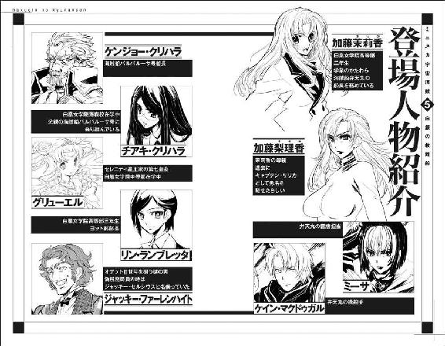
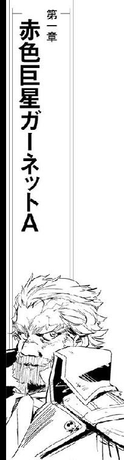
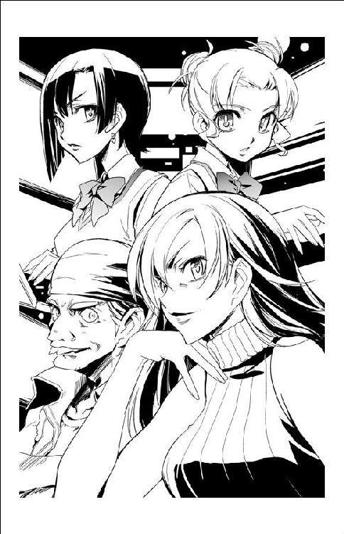
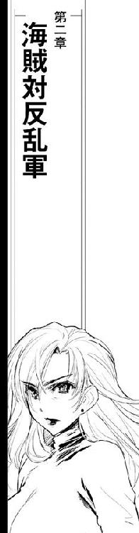
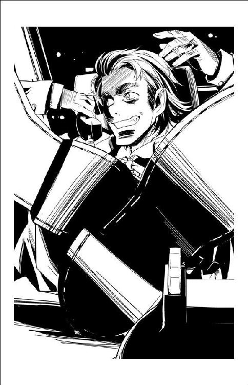
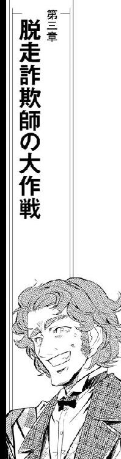
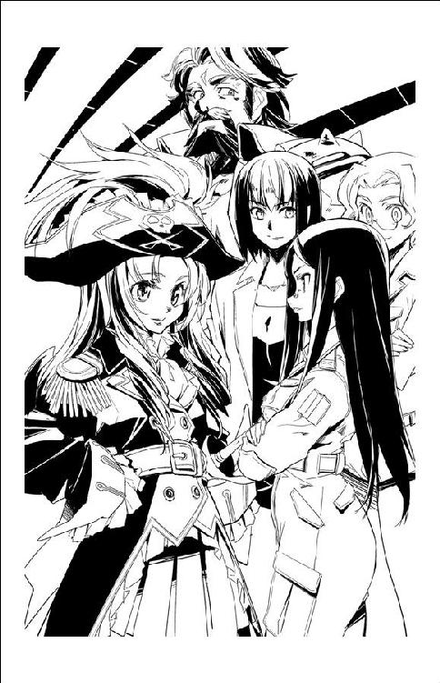
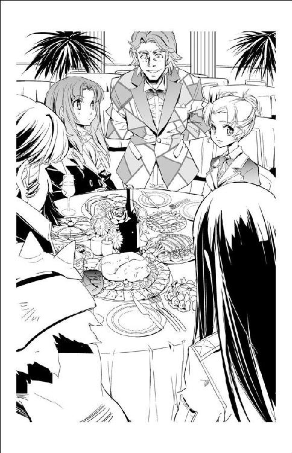
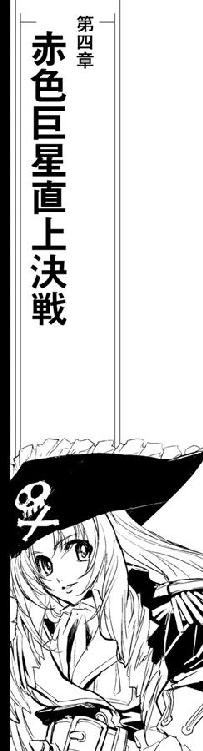
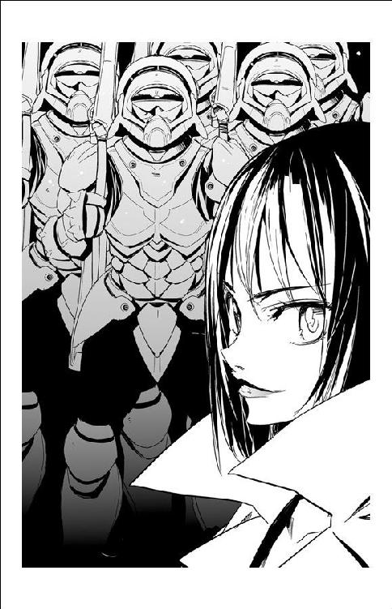

| ミニスカ宇宙海賊 05 白銀の救難船 | |
| 笹本祐一 | |
| 朝日新聞出版 (2012) | |
イラスト／松本規之
カバーデザイン／シマダヒデアキ＋波澄智子（ローカル・サポート・デパートメント）


星が揺らめいた。
数えるほどの水素原子しか浮かんでいなかった宇宙空間の時空構造が、はるか彼方から狙いあやまたず叩き込まれた強烈なエネルギーによって揺らぎ、力任せに歪められた。
空間を歪めるほど集中されたエネルギーは拡散せずに収束し、線状の光を放って空間を裂く。
放射線から紫外線までありとあらゆるエネルギーを放射しながら、裂かれた空間はさらに拡がり、背景の星々を揺るがしながらその規模を紡錘状に増大させる。
暗黒の宇宙空間を埋め尽くすような光子放射が眩しく輝き、そして再びもとの時空構造を取り戻した。高次空間から本来あるべき三次元空間に、九本のマストを折り畳んだ練習帆船がその細い船体には似合わない太短い超光速ブースターとともに現出した。船体外部に押しやられたわずかな水素原子が、重ね合わされたエネルギーフィールドに干渉して質量ごとエネルギーに変換され、先端部にまとわりつくような閃光を放つ。
「オデットII世、通常空間に復帰！」
「んなこた外見てればわかる！」
加藤梨理香は航法士席のマリイを一喝した。
「現在位置確認！ こちとら戦闘航海中なんだよ、跳んで出たらすぐに現在位置と周辺状況の確認！ 敵は、見てないところからばっさり撃ってくるんだ！」
「でもまだ、通常空間への復帰直後で周囲の安定にしばらくかかります」
「死にたいの!?」
梨理香は鋭い声を上げる。
「まわりが荒れててこっちから向こうが見えなくても、その前に空間揺らして盛大にいろいろ放射しながらこの世に戻ってきたこっちの状況は、周辺空間で張ってれば丸わかりなんだ。なんのための修正プログラムだと思ってるか！ 大至急、現在位置と周辺状況の確認！ ビームもミサイルもこっちの都合考えて待ってくれたりしないんだよ！」
たう星系を行き交う宇宙船を相手に鍛えた鬼管制官そのままの声で叫んで、梨理香は船長席まわりのコンソールに映し出された周辺空間の状況を読み取った。
「......だから不必要に高出力の超光速ブースターなんていらないって言ったのに。いくら専用オプションだからって、どこにこんなの置いてあったのよ」
船体容積に比べて質量が小さいオデットII世を超光速空間に跳び込ませるには、それほど高出力の超光速ブースターは必要ない。しかし、カテゴリーIIの亜光速宇宙船で本来なら超光速できないオデットII世のために用意されたのは、旧式ながら、質量だけなら一桁多いような大型船も超空間に放り込めるような強力な超光速ブースターだった。
出発までに充分な時間がなかったから、旧式練習帆船であるオデットII世と改造なしで接続可能な超光速ブースターの素姓に関しては、梨理香は詳しく確認していない。百眼がどこかから探し出し、弁天丸が回航してきた不格好な超光速ブースターをオデットII世に接続し、慣熟訓練を兼ねた最低限の試験運転を行なっただけで、ブリッジに詰めきりの梨理香は自分の目で現物を見ることすらしていない。
ほっそりしたオデットII世の船体の数倍の断面積を持つ太い超光速ブースターは、さしたる追加改造もなしに旧式練習帆船の機関部に接続された。あり合わせのエンジンをろくな調整もなしに追加したわりには有り余るパワーで軽い船体を振り廻すからか、試験運転ではさほどの問題は出ず、オデットII世は突貫気味のスケジュールを幾分オーバーしてガーネットＡに跳んだ。
宇宙船を高次空間を経由する超光速航行させるために必要な機関の出力は、船体の質量や跳躍距離などによりさまざまに変化する。出力が足りなければ跳躍距離が足りず、精度が足りなければ方向が狂うから、超光速跳躍は多めの出力を叩き込んで行い、余分なエネルギーは跳躍直後に放出されるのが常である。
超光速機関の制御は、出力と機械としての癖に応じて行う。近距離に跳ぶのに出力が高すぎれば宇宙船が目標地点をオーバーランして行き過ぎたり、首尾よく目標地点近くに復帰できても放出されるエネルギーが大きすぎれば自分自身で空間を歪めて別な跳躍に巻き込まれたりするから、出力制御は慎重かつ精密に行わなければならない。
必要以上のエネルギーは復帰地点で放出される。前跳躍現象として放出されるエネルギーは軍艦ならば自分の位置を声高に宣伝することになるし、民間船なら非経済運航の証となる。超光速跳躍の原理上、復帰地点でのエネルギー放射は避けることはできないが、それは跳躍時の調整次第で低く抑えることは可能である。
しかしながら、オデットII世のために用意された超光速ブースターは不必要に高出力で、微妙な出力調整を行うには乗組員の技量も運転データも足りなかった。おかげで復帰地点に大量に放出された余剰エネルギーは周辺空間を揺るがしながら拡散し、オデットII世の観測の精度を落としている。
「現在位置、ガーネットＡ外惑星軌道上、たう星よりに８ポイント25！」
観測すべき空間が揺らぐから数字は信用できないだろうに、航法担当のマリイは修正をかけてなお誤差の大きい結果から信用に足る数値を読み取って叫んだ。
「跳躍前の飛行計画からポイント02だけ外側にずれました！」
「弁天丸、及びバルバルーサの現在位置確認！」
数値報告は直接船長席に転送した数字に任せて、副船長のリン・ランブレッタが電子戦席から報告した。
「トランスポンダー確認、僚艦に間違いありません」
ひと呼吸置いて、リンは付け加えた。
「通信回線を開きますか？」
「向こうからの呼びかけを待つ」
先手を取ろうとするリンに笑みを浮かべながら、梨理香は首を振った。
「他に聞き耳を立てるのを忘れるんじゃないよ。ここは戦場で、しかもこちとら新参者なんだ。ただでさえ派手な登場して先遣隊に迷惑かけてるのに、こっちから声あげるような間抜けするんじゃないよ！」
「弁天丸から連絡です」
ゆったりとした静かな声がブリッジに響いた。
「弁天丸から、オデットII世の梨理香船長に。つなぎますか？」
梨理香は、その声だけでブリッジの雰囲気を落ち着かせてしまうグリューエルに苦笑いしてうなずいた。
「ちゃんと暗号回路使ってるんでしょうね。オープンでいいわ、つないで」
『久しぶりの宇宙はどお、キャプテン・リリカ？』
艶然たる笑みを浮かべて通信モニターに現われたのは、弁天丸船医のミーサ・グランドウッドだった。
『思ったよりまともに飛べてるみたいじゃない』
「弁天丸より古い船に間に合わせの超光速ブースターよ。乗組員の若さだけなら余裕で勝てるんだから、黙って見てなさい！」
船医の制服である白衣姿のミーサのバストショットを見ながら、梨理香は久しぶりの自分の船長服がかつての同僚にどう見えているのかちらっと考えた。
「いきなり無駄話からはじめるってことは、少なくともすぐにドンパチはじまるような状況じゃなさそうだね」
梨理香は、白凰女学院のヨット部員、一部は中等部で固められたブリッジ要員を見廻して通信モニターに目を戻した。
「残念だけど、うちのトーシロ海賊どもったら、まだまだ半人前なのにやる気だけは旺盛なの。暴発しないように、最新状況教えてくれない？」
つまらなそうにうなずいて、通信モニターのミーサは手許のコンソールに指を走らせた。
『観測データを送っておくわ。星系軍の先遣艦とも協力して星系全体のスキャンがもう二周目に入ってるけれど、お察しのとおりすぐにドンパチしなきゃならないような切羽詰まった艦隊や砦は今のところ軌道上にも周回天体にも見つからず。向こうから場所指定してきたにしちゃ仕掛けが見つからないってんで、バルバルーサのケンジョー船長なんかけっこーいらついてるわよ』
「バルバルーサはこの空域二度目なんだろ？」
梨理香は、事前資料にあったバルバルーサのレポートを思い出して言った。
「前の時のデータと付き合わせてのチェックでも変化はなしかい？」
『前の時のデータなんて、敵にこっちが気づかれないように単なる通りすがりのふりしておざなりな受動観測しただけだからねえ。黒鳥号の幽霊船に目の前で消えられたあとのデータ収集だって腰据えた精密なもんじゃないし。だいたい、ガーネットＡの定置観測基地のデータが書き換えられてて信用できないってえんだから、何を基準にしたものだか』
「つまり、相変わらずなんにもわかってないってことか」
状況を端的に要約して、梨理香は溜息をついた。
『そういうわけだから、調査の手は少しでも多い方がいいの。海賊船最古の仮装帆船はともかく、偵察能力の数字だけなら弁天丸以上の最新の偵察機持ってきたんでしょ。目のいい手伝いはいくらいても足りないの、早く出して頂戴』
「偵察機の整備調整までは手が廻ってないよ」
梨理香は、最初にオデットII世に乗り込んだ日に見ただけの、格納庫の最新鋭電子偵察機のシルエットを思い浮かべた。星系軍はおろか帝国艦隊でも中央で試験採用がはじまったばかりのサイレント・ウィスパーは、オデットII世の出港準備と乗員訓練のために放っておかれている。
「そっちだって、電子偵察機使いこなせるような余分な人員いるの？」
弁天丸もバルバルーサも、乗員に余裕はない。少なくとも梨理香がいた頃の弁天丸には定数以下の乗組員しか乗り込んでおらず、一人が複数の役目を任されるのが普通だった。
モニターの中で横を見たミーサが、梨理香に目を戻した。
『船長に代わるわ』
通信モニターが弁天丸の船長席に切り替わった。船長服の娘の姿を見て噴き出しそうになった梨理香は、自分もデザイン違いとはいえ似たような船長服を着ていることを思い出して顔を引き締めた。
『弁天丸船長、加藤茉莉香です』
茉莉香は型どおり名乗った。
『サイレント・ウィスパーの運用は、うちから百眼と、バルバルーサからは副長のノーラさんが出てくれることになりました。これから引き取りのために弁天丸を廻します』
「ノーラ？」
梨理香は懐かしそうにその名前を繰り返した。
「船長は代替わりしたって聞いたのに、ノーラったらまだバルバルーサの副長やってるんだ、出世しないわねー」
『今回のミッションで、ガーネットＡでの最後の戦闘に参加経験のあるたった一人の海賊です』
「そりゃー、私掠船免状発効当初からの数少ない現役だもんねえ。まだ元気だったんだ、さっすが長命種」
『昔馴染みなのは知ってますけど』
茉莉香は通信モニターの中から軽く母親を睨みつけた。
『今の梨理香さんが乗ってるのは海賊船じゃないんですからね、くれぐれも失礼のないようにお願いします』
茉莉香の台詞に、オデットII世のブリッジのみならず交信が放送されていた船内がどっと湧いた。
ちょっと眉をしかめて、梨理香はモニターの中の海賊船長を見返した。
「白凰女学院のヨット部を海賊に仕込んだのは、茉莉香、あんたじゃなかったのかい!?」
『仕込んだなんて、とんでもない。うちのヨット部には優秀な部員が多いんですから』
前に弁天丸をヨット部で乗り廻した時の顛末を完全に説明したわけではない茉莉香は、ブリッジの乗組員たちの表情を窺いながら続けた。
『逸材が揃ってますでしょ？』
梨理香は、笑いをこらえるような奇妙な沈黙に見舞われたブリッジを見廻した。
「ああ、まったくね。最低限使えるようにと思って海兵隊並みのハードな訓練スケジュール組んだのに、こっちの隙狙って脱走するわ、宴会企むわ、いたずら仕掛けるわ、大した逸材揃いだよ」
『オデットII世の乗組員とうまくやってるようですね』
茉莉香は、船長席のまわりにいるオデットII世の乗組員たちにも見えるように笑ってみせた。
『優秀な部員が揃ってますでしょ？』
「......採点は、作戦の終了後にしてあげる」
梨理香は、娘とは比較にならない凄みのある色気で微笑んだ。
「生き残ってれば、ね」
「超光速ブースター転換炉、アイドル状態で安定」
「有線制御系、正副二系統とも切り離し準備完了」
「やり残してることはない？」
梨理香は、オデットII世のブリッジを見廻した。
「無線でデータは取れるけど、今の状況だと次に戻ってくるまで面倒見てる暇なんかないからね。大出力の超光速ブースター、しばらく放っておいても大丈夫なようにしっかり後始末しておくんだよ」
ガーネットＡを彼方に望む外惑星軌道上で、オデットII世はかさばる超光速ブースターの切り離し作業を開始していた。超光速ブースターは単体でも通常空間を航行できるだけの推進システムを装備しているが、オデットII世にドッキングしたままでは機動性も落ちるしセンサーシステムも死角だらけになって使い勝手が悪い。なにより、微弱な推力しか生み出さないオデットII世の太陽帆では、慣性制御システムを併用しても帆船として運用できなくなる。
結局、ガーネットＡに到着後のオデットII世は超光速ブースターを切り離し、いつもどおりの姿で運用されることになった。
任務終了後には、再び超光速ブースターとドッキングしてたう星系に帰らなければならない。機関系はシャットダウンせずにアイドリングのままロックされ、母艦の帰還を待つことになる。
運用データが長期にわたってごっそり欠落していたりするから、オデットII世に接続された超光速ブースターの素姓や運転状況は完全にわかっているわけではない。どうやら整備は万全らしいものの、ろくな運転実績がないらしい超光速機関をアイドル状態のまま長時間保持するには、それなりの準備と手間が必要になる。
「できるだけのことはやりました」
機関担当のヤヨイが答えた。
「できてないことに関しては、想定外の事態ってことですから、それはもう仕方ありません」
「いい度胸ね」
梨理香はうなずいた。
「それじゃあ、超光速ブースターの切り離し、開始！」
「弁天丸から通信です」
オデットII世から超光速ブースターが切り離され、距離を取りはじめると同時にグリューエルが報告した。
「つないで」
データ回線経由での超光速ブースターのチェックは機関士席のヤヨイに任せ、船長席の梨理香は指示した。
「聞き耳立てられないように、気をつけて」
「了解です。こちらオデットII世、梨理香船長につなぎます」
『はいどうも、こちら弁天丸』
オープン回線の通信モニターに映し出された馴染みの顔に、オデットII世のブリッジに歓声が上がった。弁天丸の操舵席からケインが略式の敬礼を寄越す。
「ケイン先生！」「わあ、ほんとに弁天丸に乗ってたんだあ」
『ご存知操舵手のケインです。現在オデットII世に接近中』
「こちらオデットII世、梨理香だ」
梨理香は、自身の現役時代にはまだ弁天丸に乗り込んでいなかったケインに敬礼を返した。黄色い歓声に埋められたブリッジを見廻す。
「大した人気じゃないか」
『ご存知とは思いますが、茉莉香船長ともどもヨット部にはいろいろとお世話になっておりますもんで』
「お世話だなんてとんでもない、ケイン先生には白凰女学院中等部で体育教えていただいてますし、ヨット部の顧問もしていただいてますから」
「忙しそうだねえ」
グリューエルの説明を聞いた梨理香が、通信モニターの向こうのケインに憐れむような視線を投げかけた。ケインはあわてて舵輪から離した片手を振る。
『いえいえとんでもない。キャプテン・リリカのスパルタ教育と違ってこっちは放任主義でやってますから、ばっちり手は抜いてます』
ブリッジの各方面から上がった抗議の声を聞こえないふりして、ケインは続けた。
『残念ながら時間の余裕がないんで、そちらとゆっくりドッキングしてる暇がありません。哨戒担当の百眼放り出しますんで、うまくキャッチしてやって下さい』
ケインの顔を見直して、梨理香はランデブー手順を理解した。
「宇宙服着た百眼が自分で飛んでくるってわけ？ ずいぶん急ぐわねえ、整備とか必要になったらどうするの？」
『どっちみちオデットII世の格納庫じゃ大した整備はできません。最新データはリンクで貰ってますんで、必要ならそのまんまバルバルーサのデッキ借りて補給なり調整なりする手順になってます』
わざとらしく視線を巡らせたケインは、辺りをはばかるように声を潜めた。
『なんせこっちの手駒が少ないもんで、すぐにでも哨戒網に弁天丸戻したいところなんですよ。できればデータ解析のために百眼もうちに置いておきたいんですが、回線さえつながってれば仕事なんぞどこでもできる、それより手駒が欲しいってことで、クーリエと百眼だけじゃなくてバルバルーサとも方針一致してまして』
「人手不足のまんま大仕事しなきゃならない辺りは、開業当初から一緒か」
梨理香は苦笑いして首を振った。
「了解。こっちはこのまんまじっとしてればいいの？」
梨理香は、接近してくる弁天丸との軌道相関図を映し出しているディスプレイに目をやった。惑星間航行速度だった弁天丸は急減速をかけて、慣性航行状態のオデットII世との相対距離と相対速度を同時に減じている。予測軌道は弁天丸と交叉するから、弁天丸から百眼が飛んでくるとすればそのタイミングだろう。
『へい、超光速ブースター分離後のベクトルは正確に捕まえてますんで、そのまんままっすぐ飛んでて下さい。こっちで勝手に接近します。百眼放り出したあとは反転して戻りますんで、どうぞお構いなく』
「寄せてくるのはいいけれど、調子に乗りすぎてぶつけないでよ」
梨理香は、ガーネットＡを周回する外惑星軌道に乗っているオデットII世に母星側から接近してくる弁天丸の現在位置を確認した。
「原型が軍艦のそっちと違って、こっちは華奢に出来てるんだから」
『へい、ご心配なく』
「なんか、逃げるように離れてったわね」
戦闘機動さながらの急反転で再びガーネットＡに向かった弁天丸の後ろ姿を見送りながら、梨理香はつぶやいた。船内通信に出たグリューエルが梨理香に伝える。
「舷側エアロックから通信。百眼さんのノックです」
「開けてあげて」
不用意に部外者に侵入されないように、オデットII世の外部ハッチやエアロックのドアには最低限の戸締まりがかけられている。急遽機関室から廻された部員によりロック解除されたエアロックから、ほどなく百眼無事乗船の報が届いた。
『まあすぐにおいとましやすがね、とりあえず乗船許可願います』
船内通信モニターに現われた作業用軽装宇宙服の百眼に、梨理香はうなずいた。
「そこまで上がり込んでおいて、今さら乗船許可もないでしょ。どうするの、すぐにうちの偵察機持っていく？」
『できればそうしたいところなんですがね、せっかくキャプテン・リリカが二〇年ぶりに指揮する宇宙船に乗れたんだ。ブリッジまでご挨拶に参上しますよ』
モニターの中の百眼は、手袋の指先に小さな通信カプセルを取り出した。
『ちゃんと土産も持ってきましたし』
「で......」
百眼はブリッジで梨理香船長との会話を傾聴しているヨット部部員たちを見廻した。
「こっちの乗組員には、どこまで？」
「話しちゃっていいわ」
梨理香は船長席からめんどくさそうに手を振った。
「うっかり黙ってると、どこまで暴走するかわからないもの。確実な情報は共有させておいた方が、まだ自分で責任とれるような判断してくれるんじゃないかと期待しましょう」
百眼は、もう一度ブリッジ要員たちの顔を見廻した。
「キャプテン・リリカにそこまで腹括らせるとは大した乗組員たちですな」
「手綱が利かないだけよ」
「了解しました。んじゃ、隠し事はいっさいなしで」
百眼は、取り出した小さな通信カプセルをコンソール越しに船長席の梨理香に手渡した。
「詳しい展開状況と到着してからの調査情報はそっちに入ってます。手筈どおり、星系軍が帝国艦隊と協力してさらに広範囲に索敵かけてますが、今のところめぼしい成果は上がっていません」
「星系軍だけじゃなくて、帝国艦隊まで？」
なんでもなさそうな百眼の言葉を、梨理香は聞き逃さなかった。ブリッジにかすかなどよめきが拡がる。
「この件、そんな大事になっちゃってるの？」
「帝国領内で超新星爆弾なんて大規模テロ許したら、それこそ帝国艦隊の面子丸潰れですさかいな」
梨理香ではなく、話を聞いている乗組員たちの顔を見廻しながら百眼は続けた。
「帝国は、領内の星に降りかかる脅威を等しく排除する。お題目だろうがなんだろうが、銀河帝国の名のもとに独立星系を併合した以上は、その安全を保障するのは帝国の仕事です。そして、超新星爆弾なんて全滅兵器を使われた日には、近傍の可住惑星が時限付きで吹っ飛びますからな。その場合の厄介なコストいろいろ考えれば、ありものの艦隊動かして用を足す方がはるかに安上がりってなもんですよ」
「戦争するのも金勘定しながら、ってかい？ せちがらい世の中だこと」
「海賊するにも金勘定が必要な世の中ですからね。しかしながら、敵の本体がまだ見えてない以上、帝国艦隊までおおっぴらに動いてるとは敵に知られない方が都合がよろしい」
「敵がそんなに都合よく考えてくれるかしら？」
ちょっと首を傾げて、梨理香は百眼を見やった。
「たう星系の税務局員に化けてオデット世持ち出そうとしたときに、わざわざ、うちの乗組員相手に正直に名乗ったそうじゃない。そこから星系軍や帝国艦隊に話が及ばないって考えるほど、その赤毛のいかれぽんちはお人好しなの？」
「少なくとも、ガーネットＡに集まった海賊船以外の動きを見せなければ、それに対応した動きもできないはず、ってのが公式見解ですけどね。星系外での作戦なんか合同演習くらいしか経験のないたう星系軍はともかく、帝国艦隊だってどれだけあてになるかわかりゃしないってことじゃ、海賊一同としての見解は一致してますんで」
海賊としての公式見解だけでなく、星系軍と帝国艦隊の思惑まで説明しながら百眼は続けた。
「超新星爆弾なんて禁断の超兵器を持ち出してきた時点で、どこのどいつかわかりませんが、敵は地方の自治星系やそこに巣喰ってる海賊だけじゃなくて帝国の本体にまで喧嘩売る覚悟は決めてるはずです。表に立ってみせるのが我々だけってのは、敵に別働隊の存在を気取られないと同時に、敵にこっちの規模を見誤らせる効果も期待してます。寄せ集めの海賊に戦力にもならないヨット部の練習帆船なんて船団だけで相手すると向こうが思ってくれればよし、舐めてかかってくれればそれだけこっちの付け入る隙もでかくなるって寸法ですわ」
「そう都合よく考えてくれれば楽でいいけれど」
梨理香は溜息をついて首を振った。
「いろいろと間抜けな真似もしてるとはいえ、前回この宇宙船を乗っ取ろうとした手際だけ聞いてたら、そのジャッキーって気障男、かなりの凄腕なんでしょ。いろいろと裏かかれる心配はしなくていいの？」
「ええ、もちろんこちとら貧乏症が染みついてますんでね、いろんな心配はしてます」
百眼は、ブリッジを見廻した。
「ちょいと、お借りしても？」
梨理香は、船長席から空いているオブザーバー席を指した。
「そこでいい？」
「充分です」
無重力に慣れた身のこなしでオブザーバー席に取りついた百眼は、旧式なコンソールを見廻した。
「ほお、こりゃ懐かしいねえ。現役船でまだこんなメカニカルスイッチ動かしてる宇宙船があったとは」
百眼はコントロール・パネルに指を走らせた。ブリッジでいちばん大きなメインスクリーンに、ガーネットＡを中心とした外惑星系までの模式図が映し出される。
「ご存知のとおり、赤色巨星化したガーネットＡの大きさは赤道半径ですでに海明星の軌道半径を上回ってます。ガーネットＡは記録によれば二つの岩石惑星とひとつのガス状巨大惑星を呑み込んでます。現在、ガーネットＡの周囲を廻る惑星は、ガス状巨大惑星が三つとあとは外縁部に消え残りの彗星雲、周辺空域は長年にわたって巨大ガス惑星が掃除しましたからささやかな小惑星帯がなんとか引っ掛かるくらいで、そりゃもうきれいなもんです」
巨大な重力を持つ大型惑星は、周回するにつれて周辺空域から彗星や隕石を引き寄せ、捕らえ、吸い込む。結果として、ガーネットＡの周辺空域は平均的な恒星系よりも微惑星、小惑星がほとんど存在しない、クリアな空間になっている。わずかに残った小惑星帯もひとつところに固まり、その間隔もまばらである。
「住むのに適した星でもないし交通の要衝ってわけでもないんで、この辺りにはかつても今も中継ステーションひとつありません。あと数千万年は燃え続けるはずの赤色巨星ですから外縁部に無人の観測ステーションは置かれてますが、どうやら乗っ取られてたらしく、直近の観測データは信用できません」
「独立戦争の時のデータは？」
梨理香は、戦場となるべき赤色巨星を中心とした星図が正面に向くように船長席をリクライニングさせた。
「もし、本気で超新星爆弾なんて起爆しようと思ったら、赤色巨星本体に対していろいろ仕掛けて準備を整えるはずでしょ。前の時の作戦手順や観測データ付き合わせて現状と比べれば、少なくとも敵が何を企んでて、それがどれくらい進んでるかくらいはわかるんじゃないの？」
「前の時のデータってのがねえ」
百眼は渋い顔で首を振った。
「宗主星にも、表向き同格のたう星系軍だけじゃなくてはるか上に位置するはずの帝国艦隊からも照合が行ったはずなんですが、独立戦争と帝国艦隊介入の混乱に加えて正規軍を投入しない実験兵器の扱いだったこと、たちの悪い全滅兵器なもんで、最初っから機密体制で進んでた計画だった上に、負けが決まった時点で上でも現場でもさっさと関連資料の廃棄しちまったってのが当時の証言で、ものがものだけにあとの復旧作業も積極的には行われなかったらしく......」
「当時のデータがろくにないってこと？」
歯切れの悪い百眼に代わって、梨理香は状況を簡潔に要約した。
「とっくに責任者のいなくなった事務仕事に今さら何も期待しないけど、いつもどおりってことか」
「ちょっとよろしいですか？」
オブザーバー席のグリューエルが発言を求めるように片手を挙げている。軽く視線を走らせて、梨理香はうなずいた。
「なあに？」
「当時のデータが失われていたとしたら、ジャッキー・セルシウスを含む敵はどうやって超新星爆弾を再起動させるのでしょうか？」
梨理香は、答えを促すように百眼を見た。
「おれたちゃ昨日今日になって超新星爆弾なんてものの存在を知ってあわてて調査船廻してる初心者だが、敵ははるかに早くその存在を知って年月をかけて万端に準備を重ねてる、いわばエキスパートだ。敵さんが調査のついでにこっちの資料を消去していったのかも知れないし、帝国に呑み込まれる前に辺境に持ち逃げされた作業データや設備がどれだけあったかわからない。少なくとも敵は何をどうすればお星様を超新星に変えられるのか知ってるんだろうが、こっちは敵がそのためにどれほどの準備をしているのかもわかっていない状況だ」
「情報に関する限りはこっちが圧倒的に不利じゃないの」
電子戦席のリンがのんびりと感想を述べた。
「こっちからも質問いいかい？」
百眼は、現白凰女学院ヨット部部長に両手を挙げた。
「答えられる質問なら、受け付けよう」
「どうすれば、こっちの勝ちになる？」
リンは百眼に目を向けた。
「そっちで設定した、こっちの勝ちの条件ってのはどうなってる？」
百眼は、ちょっと驚いた顔で梨理香船長を見やった。梨理香は訳知り顔でうなずいた。
「言ったでしょ、手綱が利かないって。あたしは何も言ってないわよ。そこの部長がそっちのお姫さまと相談して言い出したの」
「いえね、うちの船長も同じこと訊いたんですよ。バルバルーサのクリハラ船長だけじゃなくて、星系軍どころか帝国艦隊の分遣隊司令まで出てきた戦闘前打ち合わせの席上でね、並みいるお歴々に、どこまでやれば勝ったことにしますか、って」
「茉莉香が？」
目を見開いた梨理香は誇らしげに微笑んだ。
「さすが、いい教育してるじゃない。あたしがいた宇宙船だけのことはあるわ」
「どうも、弁天丸だけじゃなくて他の環境も影響与えてるような気はしますが」
百眼はブリッジのヨット部員の顔を見渡す。
「で、誰がなんて答えたの？」
「そらまあ、海賊と星系軍と帝国艦隊でそれぞれ立場ってもんがありますからな。海賊としては、前面に立つ海賊船と練習帆船が無傷のまま偽物の黒鳥号とジャッキーとかってちんぴら押さえて、ガーネットＡが超新星になる心配さえなくなればおっけーなわけですが、帝国艦隊レベルとなるとそうもいかない」
「海賊と帝国艦隊の勝利条件が一緒だったらそっちの方がびっくりだよ」
「まあ、こっちもお気づきとは思いますが、ジャッキーってのはおそらくこの件に関して表に出てるだけのエージェントで、そいつに白鳥号の乗り逃げを含む一連の仕事を依頼した黒幕ってのが間違いなく存在します。情報部の分析によれば、黒幕は帝国領内で超新星爆発が起きた場合にもっとも得をする勢力、つまり反乱軍」
「情報部って」
わずかに首を傾げた梨理香の目許が一気に険しくなった。
「星系軍じゃなくて、帝国の情報部？」
ブリッジの乗組員がわずかにどよめいた。
「さいです」
百眼はあたりまえのように答えた。
「帝国艦隊が動いてますからな。おまけにネタが禁断の戦略兵器、超新星爆弾ともなれば、もちろん艦隊単独じゃなくて情報部もそりゃあ仕事しますって」
「あの赤毛、これが銀河帝国の外交に関わる高度な政治的案件だって言ってたんだよ」
ガーネットＡを中心とする星図を見上げたまま、リンの抑えた声が聞こえた。
「少なくとも、これが情報部が動くような高度な政治的案件だってその点だけは真実だったってことか」
「ことが軍事なんで、政治的な話にはならんとは思いますがね。その辺りは上がどう処理するかって話で、少なくとも我々のレベルでどうこうできるような話じゃない。しかし、星系軍も帝国艦隊も建前としては政治で動いてますんで、その辺りで勝利条件がちょいと面倒なことになってます」
「でしょうね。誰か、帝国艦隊が設定した勝利条件がわかる人はいる？」
梨理香はブリッジを見廻した。リンと目線を交わしたグリューエルが、他の誰も動かないのを見てゆっくりと手を挙げた。
「あなたが答えたんじゃあんまり他の乗組員の教育にならないような気もするけど、はい、グリューエル」
梨理香はグリューエルを指した。
「わたくしたちが考えている正面の敵は、ガーネットＡを超新星爆弾化しようとしている勢力です。わたくしたちはこれを打破、あるいは確保するのが目の前の目的だと考えていますが、星系軍はその先、帝国艦隊ならそのもっと先まで考えなければなりません」
「そこまでは合ってるわ。続けて」
「艦隊だけではなく、情報部まで動いているということは、帝国はその領内で反乱軍が大規模に動いていることを察知していて、それをこの機会に叩こうとしている。つまり、帝国艦隊の勝利条件は正面敵勢力の打破だけではなく、その指揮系統につながる本体の解明、あわよくばその壊滅まで狙っているのではありませんか？」
はあーっと百眼は溜息をついた。ね、というように梨理香を見る。
「こういう話を目の前で聞かされると、王族って奴を敵に廻すのだけはやめようって気になりません？」

「敵が選べるような恵まれた立場ならね。心配しなくても、食い詰め海賊が星間王家を相手にして立ち廻ろうなんて事態はそう簡単には起きないから安心しなさい。つまり」
グリューエルを見て、梨理香は百眼に目を戻した。
「それで正解？」
「さいです」
百眼はうなずいた。
「今この星域に揃ってる海賊船と練習船だけじゃ、予測される敵戦力に対して圧倒的に不利なのに、星系軍も帝国艦隊も姿を見せてないのはそれが理由です。どれだけの戦力を投入できるかだけでも秘匿しておけば、敵さんもうまくすればこっちを舐めて戦力の出し惜しみしてくれるかも知れないし、疑心暗鬼にかられて大戦力投入してくればそれはそれで獲物がでかくなるって寸法で」
「帝国艦隊の戦闘方針ったら、昔っから圧倒的戦力を投入しての物量作戦しかないじゃない」
梨理香はあきれたように首を振る。
「敵が、最初っから帝国艦隊を仮想敵にして大戦力を投入しての正面戦闘なんかやる気ない、とは誰も考えなかったの？」
「まさにそれが、反乱軍の戦闘方針ですからなあ。正面から戦っても勝ち目が薄いなら、戦わないことが最上の戦法になる。おかげで、辺境区ならともかく領内の帝国艦隊は開店休業状態で索敵にも苦労してるわけですが、それが今回こんなでっかい爆弾ぶちあげてきたと。この機会に戦果挙げようってことで、帝国艦隊もやる気満々なわけです」
「大丈夫かしら」
梨理香は気の乗らない顔でつぶやいた。
「普段やり慣れてない人たちが張り切ると、だいたいろくなことにならないんだけど」
「まあそういうようなわけで、海賊と星系軍、帝国艦隊それぞれのレベルでの勝利条件は微妙に、というよりも海賊としては艦隊に付き合う気なんぞない、ってくらいには乖離してますが、少なくとも緒戦くらいまでは協力できるってことで方針が一致しました」
「ご苦労さん」
交渉の最前線にいたはずの娘の苦労を慮って、梨理香は百眼にうなずいた。
「というわけで、方針が決まると振られる役割も決定します」
百眼は、星図に弁天丸とバルバルーサの現在位置を重ねて表示した。
「現在、ガーネットＡ周辺空域を熱心に調査中なのはこの海賊船二隻、今日中に偵察機一機と練習帆船一隻が加わる予定」
「やらなきゃならない仕事は、やりましょー」
「そして、ここまでの話でご理解いただけたと思いますが、我々の仕事は目立つところで調査して敵の正体を掴む、できれば敵をどんぱちできる場所に引っ張り出すことです」
「引っ張り出すまでが、お仕事ってわけ？」
「それで済むなら楽な仕事ですがね」
百眼は肩をすくめた。
「つまり、帝国艦隊が我々海賊船に期待してるのは、確実に存在するはずの敵本隊をおびき出すための囮ってことです。わけても、敵が名指しで欲しがったのがこの旧白鳥号、現オデットII世」
百眼は、星図にオデットII世の現在位置を重ねて表示した。
「敵はこの宇宙船を集中的に付け狙ってくるだろうことが予想されてます。だとすれば、我々の方針も帝国艦隊と同様」
「帝国艦隊が海賊船団を囮にするように、あなたたちはこのオデットII世を囮にするってことね」
梨理香はわざとらしい溜息をついた。
「嫌味なくらい整合性が取れてるわ」
「どうせ成り行き次第でどっちに向かうかわかりませんからな、せめて最初の段階くらいはしっかりしておこうってわけです」
百眼はもっともらしい顔でうなずいた。
「現在の状況及びこれからの方針説明ってのは、だいたいこんな感じです。通信に乗せられないような質問があれば、今のうちにどうぞ」
百眼は、ブリッジを見廻して梨理香に目を戻した。梨理香は片手を挙げた。
「星系軍、帝国艦隊それぞれがどれくらいの戦力を投入してるか、わかる？」
「星系軍は哨戒艦四隻に護衛艦二隻がわざわざたう星系から出張ってきてます。ささやかな戦力しかないたう星系護衛艦隊としちゃ大盤振る舞いですな」
「帝国艦隊は？」
「この辺り担当の第六艦隊から、対艦戦編成の機動打撃艦隊がひとつ」
「へえー？」
梨理香は声を上げた。
「帝国にしちゃ大盤振る舞いじゃない。編成は？」
「電子戦艦を旗艦とする機動戦艦四、高速巡洋艦八、空母も一隻って結構な編成です。必要に応じてさらに二艦隊が動員可能」
梨理香は、あからさまな溜息をついて渋い顔をした。
「で、その大艦隊は今どこで待ってらっしゃるの？」
にやりと笑った百眼が、コンソールを操作した。それまでガーネットＡを中心とした星系図を映し出していたメインスクリーンが、半径数十光年を映し出す星図に拡大した。
「正面戦闘担当の第六艦隊、５０７機動打撃艦隊の現在位置はここ、デスゴー星系の補給基地周辺で通常任務の哨戒中」
「......念のために訊くけど、他二つの艦隊ってのは？」
「６１０戦闘巡航団がここ、ノーロック、４５８機動艦隊はフォスからベルモンドにかけて散らばってます」
百眼は、ガーネットＡから遠く離れた空域にそれぞれの艦隊の現在位置を、散らした砂のように浮かび上がらせてみせた。
「直接担当の５０７がまだ近所で哨戒任務中ってのは理解できるとしても、他の艦隊だって別件で戦闘航海中だったり作戦展開中じゃない。こんなので、いざって時に本当にあてにできるの？」
「だから、言いましたでしょ。星系軍だって帝国艦隊だってあてにできないってことで、海賊一同としての見解は一致してるって」
世間話のような軽い口調で、百眼は繰り返した。
「帝国も大戦力をこの星域に集中投入したいところなんでしょうが、そんなことしたらせっかく数少ない海賊船を囮におびき寄せた貴重な獲物が蜘蛛の子散らすように逃げ出しちまう。そういうわけで、通報ひとつで長距離跳躍を行える準備を整えつつ、通常任務を装ったまま出番を待つ、ってのが艦隊の表向きの態勢ですが」
百眼は芝居がかった仕草でうなずいてみせた。
「いざって時に光年単位で離れてる援軍に連絡が通るか、電子戦の最中に連絡が通ったところで現状確認とか戯けたこと吐かしてる間に現地に急行してくれるか、来てくれたところでこっちの指示どおりに動いてくれるか、大戦力が駆けつけてくれてもこっちが向こうに的確な指示や戦闘情報の提供ができるか、なんてこと考え出したら、まああてにはできません。だからって、早めに大戦力呼びつけてそれが速やかに急行してもらったら、せっかくやる気になった敵の戦力がまとめて逃げ出す可能性もある」
「あっちこっちの事情も考えなきゃならないから、艦隊戦は難しいのよ」
自身の現役時代にも何度もの艦隊戦を経験したことがある梨理香は、差し渡し百光年を越える空域に散在している帝国艦隊を見廻した。長距離とはいえ一度の跳躍でガーネットＡに急行できる範囲ではあるが、必要なタイミングで戦闘空域にぴたりと跳んでこられるかどうかはまた別の問題である。
「だからまあ、ここ最前線に出てる船以外はあてにしないで、できればここにいる海賊船ともと海賊船だけで片付けよう、ってのが最大限にこっちにとっての都合のいい展開なんですが、そううまく行ってくれるかどうか」
「事情はだいたいわかりました」
片手を挙げて発言を求めたグリューエルの澄んだ声がブリッジに通った。
「つまり、我々の役目は、海賊船だけで敵を片付けられる舞台と状況を整える、ということですね」
おーっという乗組員たちの感嘆の声を聞きながら、梨理香は百眼と顔を見合わせた。梨理香は百眼にだけ聞こえるようにこっそりつぶやいた。
「このカリスマが、お姫さまのいちばん怖いところかもね」
「この宇宙船に男が乗ってなくてよかったぜ」
百眼がぶるっと上半身を震わせた。
「どんな無茶な戦況でもその気になっちまう宇宙船乗りがいっぱい出そうだ。他に何か質問とか確認事項とかあるかい？ なければ、そろそろ新型の電子偵察機を戦力の足しにするために受け取りたいんだが」
「サイレント・ウィスパー、オデットII世から発進したって」
山のような観測データ処理の片手間に、クーリエが伝えた。
「どお？ 使えそう？」
茉莉香の質問に、クーリエはいつものようにおっとりと答える。
「セッティングが対艦戦闘用のまんまらしいから、広域の天体観測向けにセッティングし直すのが大変みたい。メーカーから落としたアップデートのデータがバグだらけで使えねえって愚痴ってる」
「ろくに数が出てないはずの新型機に、大学に売り込むような観測用モード追加してきたからおかしいとは思った」
戦闘指揮席のシュニッツァーが低い声で言った。
「導入側の言い訳用に、観測船向けのモードをテストもなしにカタログに載せただけじゃないのか」
「バルバルーサに向かう途中でできるだけのセッティング変更はするけれども、必要ならあっちの艦載デッキとメインフレーム借りて再セッティングするかもって」
「電子偵察機まるごとの再セッティングなんていったら、いつまでかかるのよ」
リン部長を手伝ってシミュレーターのメインコンピューターのメンテナンスをした時のことを思い出して、茉莉香はおぞましげに首を振った。
「この作戦中に間に合うの？」
「使えないものの辻褄合わせて使いものにするのは、百眼の得意だから大丈夫だと思う」
シートサイドに積み上げたサプリメントに左手を伸ばしながら、クーリエは右手を休めない。
「オデットII世に乗り込んでから出発までに時間かかってるから、船内でもチェックできたと思うし、使えないって判断したら乗って出ないと思うから」
「そりゃあの人なんでも使おうとするけどさー、時として想像を絶した使い方しようとするからなー」
作戦行動中とはいえ、機械の大半が対空観測に向けられて待機状態の弁天丸のブリッジに、笑いが巻き起こる。
「心配事は、持ってきた偵察機が使えるかどうか、じゃないんじゃないの？」
オブザーバーとしてブリッジにいるミーサが船長席の茉莉香に声をかけた。
「梨理香にまかせた同級生が心配？」
「そっちはあんまり心配してない」
茉莉香は首を振った。
「うちの部員たちが乗ってる宇宙船に梨理香さんが指揮取ってるんだもの、かえって向こうがこっちの心配してるんじゃないかしら」
「かもね。それじゃあ、何浮かない顔してるの？」
茉莉香は、待機状態が続くブリッジを見廻した。ブリッジ要員は船長の言葉を待っている。
「敵の勝利条件がわからないのよ」
茉莉香は注意深く言葉を選んだ。
「敵の？」
ケインは操舵席からバックさせたシートを船長席に回転させた。
「超新星爆弾を爆発させる......」
その結果、展開するであろう事態とその場合の反乱軍の得失を考えて、ケインは付け加えた。
「では、ないわな」
反乱軍が帝国領内で超新星爆弾の起爆に成功したとしても、テロリズム以上の効果はない。超新星爆弾は無差別戦略兵器だから、無関係な民間人のみならず貴重な生命溢れる可住惑星をいくつも潰しても、反乱軍にはそれほどのメリットはない。逆に、帝国軍に無差別攻撃の口実を与える恐れすらある。
「超新星爆弾て、結局兵器としては使われなかったんでしよ。情報部の人もはっきりとは答えてくれなかったけど、すべての設定が予定どおりに作動したとしても、ガーネットＡが超新星化する確率は一〇〇パーセントじゃないって」
すべてのアクセス可能な歴史の中に、恒星を超新星化する兵器を実用化したとの記録はない。しかし、惑星環境改良事業のみならず恒星改良事業すら行われている銀河系宇宙ならば、それは実現不可能な技術ではない。
ケインはさらに言った。
「反乱軍が超新星爆弾の作動確認でも企んでるのかね？」
「だったら、わざわざ帝国領内でなくても辺境のもっと誰もいないところで実験すればいいんじゃないかしら？ 超新星になりそこねた赤色巨星なんてそう珍しい星じゃないし、誰もいないところなら邪魔される心配だってないもの。なのに、反乱軍がわざわざ帝国領内奥深くまで入り込んできた理由はなに？」
「ここでなきゃならない理由がある」
その巨体を戦闘指揮席に押し込んでいたシュニッツァーが会話に加わった。
「と、いうことか？」
「そうじゃないかと思ってる」
自分の考えをまとめるように、茉莉香はうなずいた。
「赤色巨星を超新星化させるのにいい条件がここにだけ揃ってるのか、超新星化するコストパフォーマンスが特別にいいのか、それともまだ何かあたしたちの知らない理由があるんだろうけど、たぶん、あの赤毛にもその黒幕にも、ここじゃなきゃいけない理由ってのがあると思うのよ。それがわかれば、向こうの勝利条件もこっちの勝ち方も見えてくると思うんだけど、全然わからなくて......」
「敵の勝利条件か......」
ケインは、操舵席のシートを大きくリクライニングさせて頭の後ろで手を組んだ。
「うちの船長も、だいぶ大局的なものの見方してくれるようになってきたねえ」
「おかげで、お腹痛い」
船長席の茉莉香の表情は暗い。
「考えなきゃならないこといっぱいあるし、それが正解かどうかわからないうちに次の問題が出てくるんだもの」
「そういう時は、相手の身になって考えてみるといいの」
クーリエは手を休めない。
「相手の身に？」
「そう。仮に機動艦隊が一度に数個も攻めてきても勝てるだけの算段があるからここまで進出してきてるのか、それとも作戦が成功すれば船団を全滅させたとしても余りある成果が上がるのか。わたしたちが勝つつもりでここまで来てるように、向こうだって勝つ気で、勝てると思えるだけの理由があって、ここで準備してたはずなの」
難しい顔をして、茉莉香は考え込んだ。
「......反乱軍って、どれくらい余裕があるの？」
船長の質問に、ブリッジ要員は互いの顔を見合わせた。茉莉香はさらに質問を重ねた。
「帝国に敵対する反乱軍って、予算とか装備とか人員とか、その辺り、ずいぶん余裕があるのかしら？ あれだけ強大な帝国艦隊相手にずっと持ちこたえてるんだから、帝国に匹敵するだけの戦力があるって思うべき？ それとも、物量作戦で押してくる帝国相手に、なんとかやりくりして持ちこたえてるだけで余裕なんかないって考えた方がいいの？」
「難しい質問だ」
答えたのは、シュニッツァーだった。
「一括りに反乱軍と呼ばれるが、その実体は辺境の星系や星間国家、企業体や共同体の連合だ。反帝国という一線でまとまってはいるが、その内実は様々な都合と事情を抱えた寄り合い所帯でしかない。帝国との領空が近い、今まさに侵略を受けている星と、外縁部にあってまだしばらくは直接侵略の心配がない星とでは、温度差もあるし認識の違いもある」
「ええと」
茉莉香は、どうすれば自分の疑問に対する適切な答えを導き出せるか考えながら口を開いた。
「ガーネットＡからあんまり遠くない範囲の反乱軍の中で、いちばん裕福なのは？」
「質問の角度によって答えも変わる。余剰資金に恵まれているのは反乱軍側の通商連合だろうが、積極的に軍備に予算を投入することはしていない。もっとも軍備を整えているのはおそらく反乱軍相手の軍事会社だろうが、軍事商売で動いているからそのときどきのスポンサーによって指揮系統は変わる。船長が聞きたいのは、どんな答えだ？」
「あのね、もし敵が、帝国艦隊まで物量作戦で押してくることを織り込み済みで作戦を遂行してるとしたら、考えられる展開は二つしかないと思うの。物量に勝てるだけの戦力を用意してあるか、それとも物量に押しきられても惜しくないだけの成果が手に入るのか。相手がテーブルの上にどんなチップを積んでいるのかわからないけれど、帝国艦隊を相手にするならそのチップは絶対に安いものじゃない。だとすれば、それだけのチップを積み上げられる敵は、それに相当する資力と余裕を持ってる勢力だ、と思ったんだけど」
しばらくの沈黙の後、シュニッツァーがゆっくりしゃべり出した。
「着眼点は悪くない。だが、残念なことにそれだけでは敵の本体を推測するには材料が不足だ。第一、敵が反乱軍の中の単独の一勢力だとはまだ判明していない。今までにも、実行部隊とそのバックが違う母体から編成されていたことはいくつもある」
「そっか」
茉莉香がシュニッツァーの持ってまわった説明を理解するのにしばらく時間がかかった。
「敵が複数の連合体だったら、さらにわからないか。ってことは、結局ありとあらゆる事態を想定しなきゃならないってことで......」
茉莉香はさらに眉をひそめた。
「......胃が痛い」
「ふうん？」
船長席に身を乗り出したミーサが、コンソールの向こうから手を伸ばして茉莉香のおとがいを指で軽く引き上げた。顔色を覗き込む。茉莉香は、船医にぎこちない作り笑いを浮かべた。
「ちょっと寝不足かな。ちゃんとご飯食べて、ベッドで寝てる？」
「いちおう」
ミーサは、船長の額に手を当てて体温を診た。
「眠れないようなら、就寝前に薬出すわよ。今ならまだクセつかないような弱い睡眠導入剤で効くと思うから」
「それ、いざって時に起こされて起きられます？」
「弱いやつ使っても、寝入りばなにむりやり起きたりすると、しばらくは眠気が残ったりするけれど」
ミーサはわざとらしく声を潜めた。
「大丈夫、そんな時のための目が醒めるような薬もちゃんとあるから」
「副作用とかありません？」
弁天丸の船医の二つ名を思い出しつつ、茉莉香は訊いてみた。ミーサはにっこり笑う。
「もちろん、弱い薬だから心配することないわよ」
「......いざって時まで取っておいて下さい」
主に親の教育方針のために、日常生活では薬物どころかサプリメントもあまり摂取していない茉莉香は力なく首を振った。
「それより、胃薬でもあったら」
「胃薬ねえ。うちは消化器系だけは頑丈な奴が多いから、船長向けの薬なんかあったかしら。最近は入荷してないけど、あとで在庫調べておいてあげる」
「期待しないで待ってます」
澄んだ呼び出し音がブリッジに響いた。
「あいよ」
空席の百眼に代わってくるりと操舵席をコンソールに戻したケインが通信パネルを叩いた。動きが止まる。
「黒鳥号からの呼び出しだ」
トーンが変わらなかったのはさすがだが、ブリッジの緊張度は一気に上がった。
「名指し相手は弁天丸、バルバルーサ、白鳥号......昔の名前で呼び出すあたり、念が入ってるねえ」
「識別信号、なし」
クーリエの両手と目線を動かす速度が一気に上がった。
「もちろん現在の識別信号もないし、独立戦争当時のもなし」
船長席の茉莉香はモニターに表示された通信データに目を走らせた。超光速通信。暗号変換はかけられていないから、この空域にいる宇宙船なら誰でも受信できる。
「......今ここにいる船、三隻相手に呼び出し？」
「誰が出てもいいってことだ」
ケインは通信モニターを見た。まだ、バルバルーサもオデットII世も応答していない。
「黒髭船長に任せるかい？」
茉莉香はもちろん、オデットII世の船長である梨理香も現役を離れていた期間が長い。バルバルーサのケンジョー・クリハラ船長なら、経歴も実績も押しの強さも間違いない。
「それがいいと思う」
発信位置を逆探知しようとしているクーリエの作業の進捗状況を横目で見ながら、茉莉香は先の展開を考えていた。相手が幾度となく現われ、目の前からするりと消えている黒鳥号となると、現在位置を捕捉して駆けつけても無駄足に終わる可能性が高い。
「ええと、主機の出力あげておいて。どうせ逃げられるかも知れないけど、黒鳥号の現在位置把握したら駆けつけるから」
『おいおい。おいおい？』
もう一度の呼び出し音のあと、忘れもしない気楽な声がブリッジに流れ出した。
『かつての僚艦が久しぶりに仲間を呼び出したってのに、誰一人お返事なしとは冷たいねえ。最近の海賊ってな、そこまで薄情になっちまったのかい？』
「ジャッキー!?」
通信モニターに現われたにやにや笑いの赤毛に、茉莉香は思わず叫んだ。
「命令変更、主砲発射用意！ 構わないわ、現在位置わかったらぶち込んでやって！」
「たぶん、届かないぞ」
シュニッツァーが唸るような声を上げた。
「こっちを名指しで呼び出してくるような度胸があれば、こっちの武装も有効射程も先刻ご存知だろう。こっちの射程にのこのこ出てくるような間抜けじゃあるまい」
「わかってるわよ、言ってみただけ」
茉莉香は通信モニターの赤毛を睨みつけている。
『せっかくそっちの数が揃うまで歓迎を待ってやってたってのに、誰とも話ができないとは残念だなあ。おーい、誰か、聞こえてませんかー？ 返事してくれないなら、勝手にやっちゃうぞお？』
口の横に手刀を添えてわざとらしく呼びかけるジャッキーの顔に耐えかねて、茉莉香は通信パネルを弾いた。
「あい、弁天丸と回線つながりました」
ケインは努めて事務的に報告した。
「全船に会話流れます」
船長席で背筋を伸ばした茉莉香は深呼吸をしたようだった。
「こちら弁天丸、船長の加藤茉莉香です」
いつもと同じ声に、シュニッツァーは安心したようにコンソールに向いた。
『あーこれはこれは、弁天丸のキャプテン・マリカに直接応答いただけるとは光栄の極み』
「黒鳥号のジャッキーさん、通信状況は良好です。......黒鳥号？ 冗談でしょ？」
モニターの中でわざとらしく頭を下げたジャッキーに、茉莉香は噛みついた。
「たう星系でお相手した時と背景が一緒ですよ。お船の名前は、ルナライオンでしたっけ？」
『あじゃ』
心底しまったという顔をして、ジャッキーは操縦室らしい辺りを見廻した。カメラレンズの汚れも、何に使うのか見当もつかない背景のインテリアも、たう星系内で会話した時と何も変わっていない。
『いやね、黒鳥号から通信してるってのはあながち嘘じゃないんだが、こっちにも事情っていうか都合っていうか、あー、通信設備は確かにルナライオンだがね、こっちの現在位置が黒鳥号ってのは嘘じゃないよお』
茉莉香は、ちらりとクーリエに目を走らせた。クーリエは現在位置が掴めないというように短く首を振る。茉莉香は、通信モニターの中のジャッキーの顔を冷たく見直した。
「自分の言葉にどの程度の説得力があるのか、あなたの方がよくご存じですわよね。黒鳥号の名を騙って、いったいどんな口上をはじめるつもりですか？」
『初手から騙り認定とは厳しいねえ』
にやにや笑いを口許に張りつけたまま、目を閉じたジャッキーは首を振った。
『まあいいや、どうやらそっちの役者も揃って準備も整ったようだから、お達しに従って口上をはじめよう。この通信がつながっている全海賊諸君、もう間もなくその寿命を終えようとする由緒ある古い星に集ってくれたことを感謝する』
いきなりジャッキーの口許が引き締められた。
「オデットII世は海賊船じゃありません」
茉莉香はこっそりつぶやきながら通信モニターに目を走らせた。バルバルーサ、オデットII世とも別回線の通信が維持されているが、双方とも黙って話を聞いているだけで出てくる気配はない。
『華麗なる実績と錚々たる実力を持つ海賊たちをもてなすために揃えた艦隊をお目にかけよう。レーダーとセンサーの感度を下げることをお勧めする』
「気にしないで」
クーリエの声が茉莉香に届いた。
「何が起きても対応できるから」
「ばっちりお目々開けて待ってますわよ」
茉莉香は、通信モニターの中のジャッキーをねめつけた。
「いきなりそちらの艦隊を見せてくれるなんて、ずいぶん気前がいいのね」
『お互い、省ける無駄はできるだけ省きたいだろう。聡明な海賊なら、相手の戦力を理解いただければ無駄な戦闘も避けられるんじゃないかと期待している』
ジャッキーは派手なウィンクを茉莉香に放った。
『そろそろ、そちらの索敵範囲に見える頃じゃないかな』
「黒鳥号らしき現在位置確認」
クーリエの声には疑念が感じられる。
「たぶん囮だと思う。ジャッキーってのが聞いたとおりの彼なら、こんな素直な方法で発信位置特定できると思えない」
「これか」
クーリエが発見した黒鳥号の反応を、シュニッツァーがガーネットＡを中心とする立体ディスプレイ上にプロットした。弁天丸とオデットII世は距離をとりつつガーネットＡの黄道面上、バルバルーサも赤色巨星を挟んだ反対側の空域に占位しているが、通信から割り出した黒鳥号の現在位置は極点上空、どの宇宙船からも均等に離れている。
『信用ならねえ』
サブモニターにバルバルーサの黒髭船長が現われた。
『最初に黒鳥号を追いかけた時に見失ったポジションだ。馬鹿にしてるのか、それとも何か他に理由があるのか』
「黒鳥号だけじゃない」
クーリエがぽつりと言った。
「大型艦、反応多数......変ねえ、いくら電子妨害下だって言ったって、こんなにいっぱい隠れててわからないはずないのに」
「大型艦多数！」
オデットII世のブリッジに、グリューエルの澄んだ声が響いた。メインスクリーンに映し出されたガーネットＡを中心とする宇宙図上の一空域に、未登録を示す赤い輝点がみるみるうちに増えていく。
「すごいエネルギー反応です！」
「やる気満々の戦闘艦隊ってところね」
船長席のディスプレイ上に映し出された艦隊の反応を見た梨理香がつぶやいた。
「対艦戦闘用にエネルギー充填済み。ここまでわかりやすいと......」
「帝国艦隊に連絡しますか？」
グリューエルが質問した。
「反乱軍がこれだけの大艦隊で現われたのなら、帝国艦隊を呼ぶ理由は充分だと思いますが」
「それか！」
梨理香は、ブリッジ要員がびっくりするような大声を上げた。
「グリューエル、弁天丸、バルバルーサとの別回線はつながってるわね？」
「はい」
「こっちに廻して」
梨理香は船長席の通信パネルを叩いた。
「ああ、こっちでも見えてる」
バルバルーサの船長、ケンジョー・クリハラはオデットII世のキャプテン・リリカに答えた。
「大型戦艦七、空母四、機動巡洋艦に護衛艦がぞろぞろと。よくもまあ第六艦隊ががっちり押さえているはずの帝国領内にこんな艦隊展開できたもんだって感心してるよ」
『あまりの高エネルギー反応に、こっちのセンサーが酔っ払いそうです』
黒髭船長ののんびりした口調に、梨理香は安心したようにうなずいた。
『こっちのセンサーは旧式だから信用できるだけのデータは得られてないんですが、これ、本物ですか？』
「なわけねーだろ」
ケンジョー船長はにやりと笑った。
「作戦行動中の、しかも反乱軍の軍艦だからトランスポンダーが出てないのは許してやるとして、型式と一部船名は実在のものだが揃いも揃ってここに出現する寸前の現在位置が確認できない。作戦行動中の軍艦なら目の前に出てくるまで現在位置がわからなくたって文句は言わねえが、一部はその存在すら確認できないとなると、考えられるケースは二つ。こっちの情報収集能力が追いついてないのか、それとも敵さんが実在しない宇宙船を勝手にでっち上げてあるように見せかけてるのか」
『実際にこんな大艦隊が出撃してきた、とは考えないわけですね』
「残念ながらそこまで素直な人生送ってきてないもんでね。できすぎた話は疑ってかかる癖がついちまってるんだ。そっちはどうだい？ 本物の大艦隊だと思って大騒ぎしてるんじゃないのか？」
『いえ、正直言えばこちらのクルーはバルバルーサや弁天丸ほど実戦慣れしてませんから、本物かどうか判断に迷ってるところです』
ケンジョー・クリハラは久しぶりにキャプテン・リリカの含み笑いを聞いた。
『大丈夫、ご心配なさらなくても星系軍の護衛艦や帝国艦隊に緊急連絡なんてしてませんわ。たぶん、それこそが敵の目的でしょうから』
「これはこれは......」
トランスポンダーこそ発信していないものの、次々と艦種と艦名を特定されていく大艦隊の図を見て、茉莉香は平然と通信モニターのジャッキーに目を戻した。
「こっちには海賊船二隻に練習帆船一隻しかいないのに、ずいぶんな大艦隊を張り込んで下さったんですのね」
『それだけの価値を君たちに認めている、と解釈してくれれば幸いだ。スマートさに著しく欠ける方法で申し訳ない。ついでと言っちゃーなんだが、スポンサーに伝えろって言われてるメッセージがあるんだが、聞いてくれるか？』
茉莉香は首を傾げた。
「なんでしょう？」
『んなもん伝えるだけ無駄だ、って言ったんだけどね。下請けの身だ、スポンサーの意向には逆らえない』
薄汚れたモニターカメラの向こうで、ジャッキーはその指先に飾り付きのメッセージカードを見せた。
『なんだと思う？』
「なんかの宣伝？」
茉莉香はめんどくさそうに言った。
「なんか、見るからに役に立たなさそうだけど」
『的確な観察力だ。降服勧告だよ』
「はあ......？」
ジャッキーの言葉を理解できずに、茉莉香は訊き直した。
「こーふくかんこく？ 今さら？」
「申し訳ないねえ」
ジャッキーは、古風に紙のカードに印刷されているメッセージカードを開いた。
『せっかくここまで出掛けてきた、それも相手は海賊だ。戦力が何桁違ってようがやるだけ無駄だって言ったんだけどねえ、実戦を交えずにことが片付くなら一番だってスポンサーが聞かないんだ。聞き流してもらって構わないから、聞くだけ聞いてくれるかい？』
「時間の無駄だと思うけど、どうぞ」
茉莉香は気のない顔で左手を振り払った。
『ありがとよ。手短に済ませるから我慢してくれ。えーと、勇敢なる海賊たちの末裔に告ぐ。無益な戦闘は我々の本意ではない。互いの時間と資源の無駄を省くために無条件降伏を勧める。降服すれば艦船及び人的資源の安全及び一定期間後の解放を約束する』
茉莉香は続く言葉を待った。ジャッキーはカードから顔を上げた。茉莉香は眉をひそめた。
「それだけ？」
『以上だ。ご静聴感謝する』
「責任者も、指揮官の署名もなし？」
『降服勧告を受諾してくれれば、その辺りも公開する用意はあるんだがね、なんせスポンサーの身元はできる限り秘匿しろってのがオーダーでねえ』
「相手が誰かもわからないのに降服しろっていうの？」
茉莉香は呆れ顔で両手を振った。
『もっともな話だ。その辺りを納得していただくためにせっかく揃えた大戦力であり、出し惜しみなしの大艦隊だってのがスポンサーの理屈でね。海賊を説得しようと思ったら実力しかないように、スポンサー納得させるにもやってみせるしかないわけよ』
ジャッキーは、丁寧にメッセージカードを畳んでごみのように背後に投げ捨てた。
『さあーて、そろそろこっちの全艦隊が姿を現わした頃だと思う。降服勧告もしたことだし、ケツに帆かけて逃げ出しても笑わないぜ』
「大型戦艦は九、空母級六隻に反応増大！」
リンが元気に報告する。
「なあるほど、いきなり大艦隊展開して何考えてるのかと思ってたんだが、あの赤毛、こっちが援軍呼ぶのを期待してるってわけか」
「敵も、我々だけが全戦力ではないと思っている、ということですか？」
グリューエルが確認するように状況を要約した。
「援軍を呼び寄せることを期待して、存在しない艦隊を出現させたということですか？」
「そう判断します」
船長席の梨理香は首肯した。
「超新星爆弾なんて傍迷惑な戦略兵器使おうとしてるのよ、阻止のためにどんな戦力が出てくるのか向こうだって知りたいはず」
「それじゃあ、もし今の段階で帝国艦隊でも呼び寄せたら......」
「敵にこっちの戦力を計らせるいい機会になるでしょうね。そして、今までに我々が黒鳥号を含む敵の本隊を一度として捕捉していない以上、帝国艦隊がこっちの期待以上の早さで駆けつけてくれたとしても再び姿を眩ますのもそう難しくないでしょう」
梨理香は、楽しそうな顔でリンを見た。
「さあ、こんな状況なら、あなたはどうする？」
いきなり方針を質問されて、リンはわずかな間だけ考え込んだ。
「敵がこっちの動きを誘っているのなら、動かずに様子を見る」
梨理香は首を振った。
「動ける時に動かないのは殿様商売のやり方よ。様子を見るだけなら、ネットワークにいない無人船でもできるわ。海賊にはなれないわね」
「でも、敵のどこからどこまでが幻影データで、どこからが実在している船なのかまだわかりません」
口を尖らせて、リンは抗弁した。
「黒鳥号だけが実在で、あとは全部囮という保証もありません。これだけ距離が離れてて、あれだけの電子戦を展開してた相手なら、一隻だけじゃない可能性の方が高いと思います」
「そこまでの現状認識は間違ってないわ。だったら、具体的には何をすればいい？」
「敵の正確な戦力を探ります」
そこまでの答えはすぐに出ている。だが、腕を組んでいる船長を見て、リンは梨理香がその先のアクションプランを求めていることを知った。
「......敵が、オデットII世の到着を待ってこの攻勢に出たということは、連携してのこっちの態勢が整う前に得られるだけの情報を得ておきたい、ということですよね？」
「さあ、どうかしら？」
梨理香は意味ありげに笑う。
「言っておくけど、わたしはさっきこの空域に到着したばっかりの練習船に乗ってるの。敵の本心や状況はあなたも見てる同じ情報から推測するしかない。正解ならこっちの思うとおりに戦況が進んでくれるだろうけれど、失敗したらどうなるか、今さら説明する必要はないわね？」
「負ける、ってことですね」
リンは、目の前の電子戦コンソールに表示される情報に目を走らせた。ガーネットＡの北極点上空への敵艦隊の展開は完了したらしく、反応の増大は止まっている。オデットII世から発進した電子偵察機はまだ次の目標であるバルバルーサには到着していないし、それが完全な状態になったとしても、こちらの索敵能力が倍以上に向上するわけではない。
「......どうだろうと、敵の正確な情報は必要です。今のわたしたちは、黒鳥号のトランスポンダーを騙る難破船の反応とルナライオンって名前の赤毛の船しか知りません。だったら、いっそのこと彼らが一番欲しがってるオデットII世で突撃してやるのが一番いい情報収集になると思います」
梨理香はわずかに目を見開いてリンの顔を見直した。
「超光速できないオデットII世で？ 艦載兵装ひとつないのに？ 戦艦と空母だけじゃなくて護衛艦隊まできっちり揃えてる大艦隊に、たった一隻で突撃するの？」
「先ほど、弁天丸から来た百眼さんに、オデットII世に期待されているのは囮の役目だと言われました」
リンはまっすぐに梨理香を見返した。
「敵が存在しない大艦隊を繰り出してきたのなら、今が最高の囮の使い時だと考えます」
「いい度胸ね。この船を危険に晒すだけの戦果は得られるかしら？」
リンは、もう一度コンソールのディスプレイ上に表示されている敵艦隊の配置を確認した。
「敵艦隊のうち何隻かは実在する宇宙船だと思います。こんなふうに実在しない大艦隊を出現させる場合は、複数の宇宙船を配置して電子的な囮を制御するのが一番よくある手です。反応だけを返す風船を浮かべる手もありますが、どっちにしても実在しない艦は戦力にはなりません」
「実在が推測される艦はどうするの？」
「本戦の役目は囮ですよね？」
リンは、オデットII世の現在位置と極点上の艦隊の配置を何度も見直した。
「通常機関に太陽帆を併用して慣性制御を最大出力で使えば、かなりの高速で極点上の艦隊に接近することができます。勝つためには正確な敵戦力を知らなきゃならないんですから、それは早ければ早い方がいいと思いますけれど？」
「通常機関使うってのはあんまりいい手じゃないね」
腕を組んだ梨理香は首を振った。
「せっかく太陽帆があるのに派手にプラズマ噴いたら、それこそどこに向かって動いてるか敵に丸見えになる。その点、太陽帆推進ならエネルギー放射もセンサーへの反応も最低限に抑えられる。囮として動くなら、動いていることに気づかれるのはできるだけ遅い方がいいけれど、でも、遅かれ早かれ、よっぽどのバカでない限り敵もこっちの動きに気づくわ」
リンだけでなく、マリイもグリューエルも敵艦隊の動きを予想してうなずいた。
「敵艦隊がこっちの迎撃に集中してきたときの護衛は弁天丸とバルバルーサにお願いするとして、もし、敵艦隊の戦力がこっちの都合より上だったら？」
「そしたら、その時こそ援軍を呼べばいいんじゃないでしょうか」
リンは電子戦卓のキーボードを叩いた。
「オデットII世が囮として大艦隊の前面に出るって報告しておけば、お仕事中の帝国艦隊でも頑張って飛んできてくれると思います」
「援軍が期待できる分、昔よりはるかにましね」
梨理香はブリッジを見廻した。
「出ましょう。この船が白鳥号だった時代の戦い方に敬意を表して、帆船らしい動き方ってのを見せてあげようじゃない」
「囮として先行するから掩護を頼む、だと!?」
通信オペレーターから要約して伝えられたオデットII世船長加藤梨理香からのメッセージに、バルバルーサ船長ケンジョー・クリハラは、モニターしていた弁天丸船長加藤茉莉香とルナライオンのジャッキーとの交信を放り出した。
「ちょっと待て、リリカ！ 第一線離れて十何年も経つおまえが、武装ひとつない練習帆船で最前線に出てくたあなんのつもりだ!?」
『弁天丸の百眼から、そっちの方針は聞いてるわ』
梨理香は涼しい声で答えた。
『オデットII世に期待されている役割は、囮。仰るとおりこの宇宙船には武装らしい武装はついてないから、前面に出て対艦戦闘なんて真似する気はないわよ』
「それがわかってなんで出ていく!? 若い乗組員を抑えられないキャプテン・リリカじゃあるまい!?」
『大艦隊が実在しないなら、心配いらないんじゃない？』
「そりゃ見かけだけの話だ！ 難破船の外装被ってようが中にどんな仕掛けしてるかわからねえ黒鳥号も、あの赤毛が乗ってるルナライオンて小型船も存在してるのは間違いないし、これだけの大艦隊をこれだけはっきり存在させるように見せるには、他にまだ何隻かいるのは間違いない。装甲もろくにない帆船でその中に突っ込んでくつもりか!?」
『だから、掩護をお願い』
梨理香は、黒髭船長に色っぽく両手を合わせる。
『いきなり射たれる艦砲射撃なんかないから、避けてみせるってうちの乗組員が張り切ってるのよ』
「素人が何吐かすか！」
『それに、敵が一番欲しがってるのはオデットII世だから、狙って壊すような射撃はしないだろうって』
「自分にだけ都合のいいこと考えて、どんな痛い目に遭うか知らないキャプテン・リリカじゃあるまい！」
『大丈夫、敵の有効射程ぎりぎりまでしか行かないから。こっちから動けば敵も対応してくるはずよ、弁天丸と協力してデータ収集よろしくお願いするわ』
「オデットII世、動き出しました」
「遅い！」
立体ディスプレイ上のオデットII世の動きを見たケンジョーは思わずつぶやいた。
「......いや、航跡を残さないように太陽帆だけで加速してるのか。あっちと共同歩調合わせて戦闘となると、いろいろ考えなきゃならんな」
『こっちは武装らしい武装もない、超光速もできない練習帆船よ』
通信モニターの梨理香は笑みを絶やさない。
『こんなおいしい獲物相手に、敵が斥候艦の一隻も出してこないと思う？』
「相手が総がかりで出てきたらどうするつもりだ！」
『だから、敵艦隊は少なくとも今見えているような態勢じゃ存在しない、っていう点でわたしたちの見解は一致しているんでしょ。もし敵がまともな戦況判断できるなら、稼動全艦でもって襲いかかってくるはずじゃないかしら。敵のどの部分がどこまで動くか、逃げ出すのはそれを見てからでも間に合うわ』
「現場に到着早々飛び出していくとは、まあ、キャプテン・リリカの復帰第一戦らしくていいか」
大口を開けて笑った黒髭船長は、通信モニターの梨理香に敬礼を飛ばした。
「了解した。バルバルーサはこれからオデットII世のカバーに入る。しかし、期待どおりに囮の餌の役目で踊ってもらうためには、すぐそばまで寄っていって見え見えの護衛なんてポジションにつくわけにはいかねえ」
『話が早くて助かるわ』
「弁天丸と、こっちに向かってるサイレント・ウィスパーの百眼に連絡を取れ！ ランデブーと収容手順はすべてキャンセル、後廻しだ。オデットII世の撒き餌がはじまるまでに弁天丸ともデータネットワークを張り直すよう伝えろ！」
「逃げ出されたら困るんじゃありませんの？」
茉莉香は、ゆっくり確認するようにジャッキーに首を傾げてみせた。
「せっかくあれだけ仕掛けて呼び寄せた海賊船が、これだけ集結させた大艦隊の前から逃げ出したら、困るのはそっちじゃないのかしら？」
言われたジャッキーは、今さら気づいたように右手を槌にしてぽんと掌を打った。
「そいつはいかにも仰るとおりだ」
興味深げに、通信モニターから身を乗り出す。
「それじゃあ、お相手願えるかい？」
「もちろんです。そのためにここまで来たんですから」
よからぬ気配を感じて、茉莉香は思わず通信モニターから身を引いた。
「まあそうおっかながるなって。手加減はしてやるから、さ」
茉莉香はジャッキーを睨みつけて、こほんと咳払いした。
「宣戦布告は確かに受諾しました。では、お仕事をはじめましょう」
「勘弁してくれよ」
真空作業用の宇宙服は船内でデリケートな操作をするには向いていない。人目がないのを幸い、宇宙服の上半分は脱ぎ捨てたアンダーウェア姿でサイレント・ウィスパーの操縦室で作業を続けていた百眼は、通信カメラを無視してインカムに返した。
「あの足の遅い練習帆船で、しかも太陽帆だけで極点上空の大艦隊に突撃するってか？ 相手が気づいてくれるまで何日かかるんだ？」
『計算では、もしオデットII世の動きを敵艦隊が無視するようなら軽く丸一日以上かかるそうだ』
弁天丸のブリッジから、こちらも発進準備中のケインが応えた。
『そこまで間抜けな敵じゃなければ、事態が動き出すのはもっと早い。もっとも、餌になるべきオデットII世の足がご存知のとおりもうどうしようもなく遅いから、敵艦隊が動き出してからの状況はあちらさんの速度に左右されることになる』
「たはー」
オペレーター席に戻った百眼は、両手を動かしながら声を上げた。
「せめてバルバルーサまで辿り着けばちったあ楽な仕事になると思ったが、さすがキャプテン・リリカ、現役復帰早々から人使いが荒いぜ」
『そういうわけで、バルバルーサとサイレント・ウィスパーとの接触は自動的に後まわしになった。そっちはしばらく百眼一人で頑張ってもらわなきゃならない。どうする？ こっちに戻るか？』
「いや、そういう事情ならそういう方向でこいつを使わせてもらおう」
百眼は、ほぼすべてのコンソールに灯を入れたサイレント・ウィスパーの操縦席を見廻した。
「もともと対艦戦闘用のこいつを、広域天文観測用にセッティングしようとかって話だったから、かかる手間考えてうんざりしてたんだ。対艦戦闘用なら標準のモードとプリインストールのセッティングだけで十分対応できる」
百眼は、空っぽのままの操縦席に目をやった。
「残念ながら操縦役がいないから本来の動きはできないだろうが、戦闘観測索敵モードなら現状でもこいつの目は充分に役に立つ。構わないからネットワークに組み込んでくれ。観測データはそっちに流すし、分析用のセッティングは飛びながらなんとかする」
『了解した。オデットII世が突出して、バルバルーサがその掩護に廻る。敵の本隊が今見えている艦隊の中に紛れているのか、それとも他にも配置されているのかまだ見えてない。そっちも非武装だろ、無理するなよ』
「前線に突撃していくにはパイロットが足りないが、電子戦なら充分使えるぜ」
コンソールに顔を上げた百眼は、広域の空間情報を映し出すディスプレイに目を走らせた。大艦隊が出現したガーネットＡ北極点上空の空間状況は比較的安定しているが、他の空域では大小取り混ぜたさまざまな電磁障害が発生している。そのうち何パーセントかが人為的な障害であることまでは弁天丸とバルバルーサの観測により明らかになっているが、どこまでが自然現象でどこからが人為的な電磁障害なのか、その切り分けにはいたっていない。
「対艦戦闘と北極点上空の艦隊の観測はそっちに任せる」
あちこちスイッチを切り換えながら、百眼は言った。
「こっちは現空域で、他のところに目を凝らしてみる。もし敵が、見えないところからばっさりって三次元戦闘のセオリー知ってれば、主力は極点上空から離れたところに置いてあるはずだ」
『オデットII世が大艦隊目の前にして逃げ出すようなセオリーどおりに動く標的なら、主力は南極側か外縁部で待ち伏せするところだろうがな、ご覧のとおり大艦隊目指して突撃開始するようなセオリー破りだからなあ。いずれにせよ弁天丸もバルバルーサもこれから高速機動に入るから、今までみたいな精度の観測はできない。派手に動かず、しかも広域の観測を行うそちらの目は貴重な情報源になる。期待してるぜ』
「転舵完了」
操舵手のアイが報告した。
「予想針路を、極点上空の敵艦隊に向けました」
「いくらあの艦隊がぼんくら揃いでも、そのうちこっちが動いてることには気づくでしょう」
船長席の梨理香はオデットII世の予測軌道をチェックした。
「最大展帆して、最接近まで何時間？」
「現状の加速度だと、予備帆まで拡げても敵艦隊の推定有効範囲にオデットII世が入るまで三六時間かかります」
リンは、ブリッジのメインスクリーンに映し出したガーネットＡを中心とした相関図にオデットII世の予想軌道を重ねた。
「ただし、これは現状のまま、最後まで太陽帆だけ使って減速せずに敵艦隊に接近を計った場合の予測値です」
「こっちが動き出したことに向こうが気づけば、エネルギー反応のない太陽帆推進だけ使ってる意味はなくなるわ。それから通常推進を併用して加速したら、最接近時間はどれくらい詰められる？」
「どの時点で通常推進の噴射を開始するかにもよりますが、通常推進を併用すれば残り時間を概算で四分の一にできます」
「時間の余裕はたっぷりね」
梨理香はメインスクリーン上の敵艦隊を見た。まだ動きは確認できないが、敵艦隊が動き出していないのか、それをオデットII世のセンサーが感知できないのかはわからない。
「さあて、それじゃあせっかくだから少しは面白いことしてみせてあげましょうか。弁天丸、バルバルーサ、こちらオデットII世のキャプテン・リリカ」
梨理香はヘッドセットに語りかけた。
「只今より本船は囮任務のために敵艦隊に向けて接近を開始します。準備でき次第消えるから、この通信を最後に作戦が次の段階に移るまでこちらからの発信はカット、無線封鎖状態に入ります。そっちの声は聞こえてるから気にしないで。あと、そっちからも見えなくなると思うから、オデットII世の現在位置は勝手に推定して頂戴」
一方的に宣言して、梨理香は通信を切った。
「さあ、せっかくかき集めた大艦隊の前に喉から手が出るほど欲しがってた宇宙船が丸腰で出ていってあげるのよ。それなりの反応を見せて頂戴」
ジャッキーとの通信回線は向こうから切断された。茉莉香は、とおりいっぺんの通信データを映し出した通信モニターから顔を上げた。
「何か、役に立ちそうな情報は獲れた？」
「相手の場所の特定くらいはできたけど」
電子戦席のクーリエは、背中を向けたまま溜息混じりに答えた。
「なるほど、厄介な相手だわ。今の通信でこっちの場所とプロトコルを特定したとみるや、いきなり通信波に雑音載っけて電子脳の中まで介入しようとしてるんだもの」
「やっぱり、ただの画像通信だけじゃなかったか」
前回の経験から、相手は機会があればあるだけ仕掛けてくるとわかっている。クーリエが裏口で相手をしてくれていたのなら心配はないだろう。
「画像データもカメラ汚れてるし、あんまり役に立ちそうなものは映ってないし、意図的だろうけれどもときどき画像データ量も落ちてたりして、ろくな相手じゃないわね」
「だから、厄介な相手ですってば」
茉莉香は、クーリエの言葉を反復してみた。
「てことは、収穫なし？」
「ごめんなさいね、もう少しはいろいろ情報獲れると思ったんだけど、こっちから送りつけた使い魔もトラップも全部弾かれちゃったみたい。いくつかは遅発設定だから、運がよければあとで裏口開けてデータ流してくれるかも知れないけれど、あの態勢じゃ期待するだけ無駄かな」
「そんなに......」
クーリエの口から、ここまで完璧な敗北宣言は聞いたことがない。
「電子戦は性能より技術だから、弁天丸でもたいていの敵には負ける気がしなかったんだけど、今回はちょっと分が悪いわね」
電子戦席に向いたままのクーリエはたったかと手を動かしはじめた。
「旧型を無理して使ってるこっちと違って、向こうの機材はそーとー金のかかった最新式だと思う。反応速度が段違いだから。今までに速度勝負で負けたことなんかなかったのに」
口惜しそうな口調のわりにはテンポよく手が動いている。茉莉香はおそるおそる訊いてみた。
「勝てそう？」
「大丈夫、マシンスペックが違うなら違うでやり方はあるし、こっちにももっと速いのが来るはずだし」
「弁天丸より速い電子戦装備なんかどこにあるの!?」
「今、百眼が乗ってる」
クーリエに言われて、茉莉香は他ならぬサイレント・ウィスパーに自分も乗ったことがあるのを思い出した。
「メーカーの宣伝文句が半分はったりだとしても、一昔前の電子戦艦くらいの能力はあるはずだから、百眼がうまくセットアップしてくれれば、それだけでこっちの電子戦力が一桁あがるはず」
「そんなに」
今でさえ、バルバルーサとオデットII世がこちらの戦列にあるから弁天丸一隻の時よりも戦力は上がっているはずである。
「サイレント・ウィスパーがカタログどおりの性能で運用できるなら、極点上の大艦隊が全部実在したとしてもいい戦いができるはずなんだけど、そこまでは期待できないかな」
「百眼に苦労かけるわね」
茉莉香は、サイレント・ウィスパーの現在位置を確認した。オデットII世から発進したサイレント・ウィスパーは慣性航行のままほとんどその位置を変えていない。
「こうなると、梨理香さんたちがどれだけ時間稼いでくれるか、あの赤毛がどれだけ時間稼がせてくれるかが問題ね」
茉莉香が見ている目の前で、立体ディスプレイ上のオデットII世のシンボルがゆらりと薄くなって、消えた。
「......消えた」
茉莉香は見たままを口にした。
「ステルス態勢に入ったのね」
その寸法に比して軽量、華奢にできているオデットII世は、船体角度やマスト・ヤードの調整でレーダーに対する反射能をはるかに低く抑えることができる。さらに相手のレーダー波を解析してこちらの反射波に位相を合わせた反応を送り込むアクティブ・ステルスを併用すれば、その姿を完全に消すことも可能である。
「それじゃあこっちも、せっかく身を隠してるオデットII世をうっかり照らし出さないように気をつけて」
アクティブ・ステルスは、特定方向に対して効果が最大になる。他の方向から照らし出されたレーダー波が隠れたい相手の方向に反射したりしたら、敵に余計なデータを与えることになる。
「オデットII世の掩護はバルバルーサにって、梨理香さんがそう言ったのね？」
茉莉香は、ジャッキーとの会話の間の他線との交信内容を確認した。
「そうだ」
シュニッツァーが答えた。
「逃げ足勝負の弁天丸と違って、バルバルーサなら対艦戦闘用の大口径砲も揃ってる。行き足の遅いオデットII世に合わせるなら、図体の大きな戦艦でも問題はない」
「それじゃあ梨理香さんたちとうちの練習帆船はケンジョー船長にお任せするとして」
茉莉香は、立体ディスプレイに表示されているガーネットＡを中心とした相関図で艦隊と自分たちの現在位置を確認した。
「わたしたちがやらなきゃならないのは、敵の本隊がどの程度の規模でどの程度やる気なのかを探ること、よね」
茉莉香は、極点上空にひとかたまりの点として表示されている敵艦隊の本隊を見つめた。
「それじゃあ、こっちからちょっかい出しにいってあげましょうか。針路、ガーネットＡ。最短距離で赤色巨星の恒星表面に貼りついて、そのまま極点まで移動、ガーネットＡを背負って敵艦隊の本隊に強行偵察をかけます」
ケインがひょおーっと声を上げた。機関席の三代目が、速いペースでコントロール・パネルを叩きはじめる。
「終焉間近の赤色巨星だっつっても、表面温度は余裕で四〇〇〇度越えてるぜ」
「こないだ冷却剤補給したばっかりで助かったねえ。現在の残量はえーと」
ケインがチェックをかけて、タンク内に残っているＬＣＦ冷却剤の正確な残量を読み取る。
「八九パーセントか、後先考えなければ保つんじゃないの？」
「最低一回の跳躍分さえ残ればいいわ」
通常航行なら、冷却剤を大量に使う場面はほとんどない。
「それだけ残ってればあとで補給に行けるし、いざとなれば配達頼むから」
「どこまでガーネットＡに接近します？」
航法士席のルカが訊く。
「速度はあんまり重視しなくていい」
飛行条件をあれこれ考えながら、茉莉香は口を開いた。
「ステルスモードで帆走中のオデットII世なんてどうやったってそんな速度出ないんだから、オデットII世より先に敵艦隊に突入してもあんまりメリットなさそうだし。それよりも、こっちのセンサーが使えるぎりぎりのところまで降りられる？」
「センサーアンテナ拡げたまんまでガーネットＡの高熱ガスの中に降りるの？」
クーリエが悲鳴を上げる。
「惑星間航行速度でプラズマ大気層の上部に突入したら、華奢なアンテナなんかぜんぶ飛んじゃう」
「だって、この星の近所であと観測かけてないところって、もうガーネットＡのすぐ近くしか残ってないんだもの」
茉莉香は、船長席のディスプレイをガーネットＡを中心とした星系図にズームダウンした。
「今なら、少しでも敵のセンサーごまかすために無理して恒星に接近したって思ってくれるでしょう。弁天丸の現在位置からだとガーネットＡの赤道上から極点まで舐めていくのが精一杯だろうけど、それでも取れるだけのデータは欲しいの」
赤色巨星化したガーネットＡの半径は、現時点でたう星系第三惑星である海明星の軌道半径に迫るほどに膨れあがっている。恒星表面に沿っての低空飛行とはいえ、惑星間航行並みの長距離飛行である。
「後先考えると、今の時点でアンテナ使えなくなるのは痛いわね」
「だからといって、輻射熱や高温ガスの抵抗がないような高度じゃ、ガーネットＡの反応に紛れるのは難しい」
シューニッツァーの唸るような声に、茉莉香は両手を合わせた。
「うまいバランス点見つけて頂戴。アンテナ焼いてもいいなんて言わないから、ガーネットＡに最接近して、極点上空の敵艦隊の隙をつけるような軌道。どうせ敵艦隊がオデットII世の動きに気づいたら動き出すだろうから、そしたらこっちものんびり太陽表面低空飛行なんてしてないで出ていかなきゃならなくなると思う。だから、せめてそれまでだけでも」
「赤色巨星とはいえ恒星の表面飛行だ、武装にエネルギーを廻す必要はないだろ」
三代目は着々と主機関の出力配分を調整している。
「速度が欲しいわけでもないのなら、出力は重点的に耐熱シールドに廻す。あとのこと考えずに冷却剤をばらまけるなら、外周四分の一くらいのフライトなら機関も船体も保つはずだ」
「今まで蓄積されてるガーネットＡの観測データがほとんどあてにならない、ってのが問題なのよ」
ルカは無人ステーションからの観測データをもとに作り上げたガーネットＡのモデルを航法パネルに映し出した。
「基本構造モデルはそんな特別なことになってないから大丈夫だろうけど、表面飛行するならなにより大事な高層ガス圏の分布がぜんぜん当てにできない。船長の言うような表面飛行なら、ガス圏の薄いところと低温のところを結ぶような経路を辿りたいところだけど、針路上のガス分布を見ながら安全で楽そうなところ選んでいくみたいな飛行しかできないわよ」
茉莉香は、船長席の立体ディスプレイ上に転映されたルカの暫定ルートを見た。
「問題は？」
「安全距離を多めに取らなきゃならないけれど、それでもガーネットＡ表面で突発的な変化が予測しきれないこと。安定してる赤色巨星だから、普通の恒星みたいにフレア噴き上げたり沸いたりはしてないだろうけど、表面の観測だけじゃ何が起きるのか予測しきれない」
「何か問題が起きたら、すぐにガーネットＡから離れて」
極点上空の艦隊はまだ動きが見えない。艦隊の次の一手は、定石どおりの斥候艦の発進だろうと茉莉香は睨んでいた。
「敵艦隊の動きがかき消されて見えないほど降下する気はないの。敵の動きは見える程度で、艦隊が動き出したらこっちもそれに合わせなきゃならないわ。それにまだ今回のお仕事ははじまったばっかり、補給が利く冷却剤や弾薬ならいくら使ってもらっても構わないけど、船体へのダメージはできるだけ避けて」
「それじゃあ、せっかくの赤色巨星が身を隠す役には立たなきゃいけないけれど、あんまり熱い思いしなくて済むような経路を設定します」
ルカは高速でコントロール・パネルに指を滑らせはじめた。
「主機関、及び通常推進準備完了！」
三代目が告げた。
「艦体、機動系チェック完了、こっちも発進準備完了した」
操舵席を前進気味にセットしたケインは舵輪を握り直した。
「センサー系は準備中、だけど、最接近までには設定終わるから動き出しても構わない」
あいかわらずクーリエの手は止まらない。
「冷却剤発射準備、完了している」
シュニッツァーの声を聞いて、茉莉香はルカの報告を待った。ほどなく、ブリッジのディスプレイに弁天丸の未来経路が表示された。
「この先いくらでも修正は入ると思うけど、飛行計画、これでいいかしら？」
「おっけーです」
ブリッジを見廻して、茉莉香は全クルーが準備を整えたことを確認した。
「では、お仕事しに行きましょう。弁天丸、発進！」

「練習帆船はお得意のアクティブ・ステルスで身を隠し、弁天丸はガーネットＡにまっしぐらかい」
糧食殻とジャンク部品、洗濯物や多種多様なメディアに埋もれているルナライオンの操縦席で、ジャッキーは立体ディスプレイに映し出される海賊たちの動きに声を上げていた。
「てえことは、残ってるバルバルーサが帆船の掩護に廻るだろうとして、残り一隻、帆船から出てきた新型の電子偵察機の動きが気になるところだけれども」
ジャッキーは、もう一度海賊船たちの最新の動きをチェックした。
「たった四隻、そのうちまともな正面戦闘できるのは二隻だけって状況なのに、うちの大艦隊相手にやる気満々じゃないの。泣かせてくれるねえ、さすが海賊」
雑然という言葉ではまだ控えめなルナライオンの操縦室のどこかで、けたたましいベルが鳴り出した。
「はい、はいよ、はい」
一定間隔で鳴り続けるベルに、操縦席をよっとバックさせたジャッキーは、足もとのゴミの山の中から古風な回転ダイヤル付きの黒い電話機を掘り出した。
「はいよ、ちょいお待ち、今出ますよ」
カールコードで結ばれた受話器を取り上げ、電話に出る。
「はいもしもし、こちらルナライオン、ジャッキー・ファーレンハイトです。......ええ、感度良好、そっちの声はばっちり聞こえてます。......画像通信？ 勘弁して下さいよ、ただでさえデータ量が一桁増える画像通信、海賊どもがこの空域の通信をモニターしてないとでも思ってるんですか？ どれだけ暗号化してあるってったって敵に獲られるデータが増えれば、それだけ解読される可能性も、どこと話してるかなんてことまでばれる確率が増える。今さらその手の講釈が必要じゃないでしょう。......へい、ご理解いただいてありがたい限りです」
器用に肩口に受話器を挟んだジャッキーは、空いた両手でコントロール・パネルを叩きはじめた。
「へいへい、ご依頼のとおりに降服勧告はちゃんと伝えましたぜ。ええ、もうそっちのオーダーどおりにこっちの戦力並べられるだけ並べてみせてからね。戦力比？ そうですねえ、控えめに見積もっても二桁は離れてるとは思いますが。......だから言ったでしょう、敵は海賊だって。それも、食い詰めて昨日今日軍籍離脱して商売替えした素人じゃない、格式と伝統を誇る免状付きの海賊です。戦力見せたくらいで両手挙げてくれるような楽な相手なら、そもそもこんな戦力揃えてみせる必要だってないわけで。ええ、個人的な感想を言わせていただけるなら、せっかくここまで来てくれた海賊たちがこっちの大戦力見せただけで逃げ出さないってだけでも感謝すべきだと思いますね。おまけにやる気満々でこっちに向かってきてます。......いいえ、はっきり言わせていただきますが、相手は馬鹿でも無法者でもありません。これだけの戦力差を見ても逃げ出さない勇気と、やるべきことを見つけ出す頭と、それを実現させるだけの技術を兼ね備えた凄腕です。力押ししかしてこない帝国艦隊の方がよっぽど与しやすい。はい、はい、わかっております。今回の仕事はまだはじまったばっかりですからね。でも最初っから申し上げているとおり、戦力の出し惜しみをして勝てるような簡単な相手でもございません。いいですか？ 敵は海賊です。指令系統に縛られず、千変万化する戦場の状況にいちいち上に問い合わせなくても臨機応変に自分で対応できる、戦果を最大限にするためなら手段を選ばない、そういう厄介な相手です。はい、はい......ええ、出し惜しみはしませんが損耗もさせない、よござんすよ、その条件で。今の段階でそんなおっかなびっくりでどうするんです。はい、了解です。全艦隊の指揮、お引き受けしましょう。こう見えても素人じゃありません。仕掛けはばっちり、結果をとくとご覧じろ。はいはい、それじゃあこっちもはじめましょう」
肩から落とした受話器を左手で受け止めて、ジャッキーは電話機に戻した。ちーんと黙った電話機をそのままゴミの山の上に落とす。
「ここまで手間かけないと指揮権寄越さないんだから、あっちのお役所仕事だって帝国を笑えたもんじゃないたー思うが。まーこんな流しの山師に艦隊任せるだけの度胸は認めてやるかねえ。さあて、せっかく舞台を整えてくれたんだ、こっちもスポンサーが納得するような成果を上げてやらないと......」
ジャッキーはディスプレイを切り換えた。麾下の全艦隊、空母二隻に戦艦三隻が付き、対艦戦闘用の機動巡洋艦を主力に揃えた編成の揃った三つの打撃艦隊が赤色巨星の極点上空に集結を終えている。
「帝国艦隊ほどに艦種が揃ってないのはご愛敬ってところだな」

艦隊の編成は、性能が等しい同一艦種の同一級を揃えるのが基本である。艦隊編成にも運用にも余裕がある核恒星系の帝国艦隊ではこの基本は守られているが、反乱軍ではそうはいかない。
「機動性なんぞ期待できない基地空母は黒鳥号ともども後方で指揮系通信と情報収集に集中していただくとして、あとは、戦艦も巡洋艦も前面に出て海賊どもに顔見せしていただこう」
ジャッキーは、効率最優先でチューンしたコマンドパネルに各艦への指示を打ち込んだ。
「あー、わかっとる、わかっとるよ。せっかく揃えた大艦隊、看板の分は働いてもらいますよ。今さらおれが説明しなくたって、これだけの反乱軍の大艦隊を帝国領内に本当に揃えたのか、海賊どもが疑ってるのはあたりまえでしょーが。だとすれば、その疑心暗鬼をかき立てる方向で動いてもらうのが一番よろしいわね。交戦？ 許可しましょう。ええ、海賊ども相手にかすりでもしたら大金星だ。ただ、もちろんその場合のリスクは自分で背負ってもらうとして」
ジャッキーは、ほとんど瞬時に組み上げた複雑極まりない未来軌道を麾下の全艦隊にコマンドした。
「はいはい、戦場がどんな具合になるか、どーせ最初の接敵までにたんまり時間があるんだ、各自好き勝手に分析推測評価しなさい。そおれ、戦闘開始だ！」
一度はすっきり見通せたはずのガーネットＡ周辺空間が、再び耳障りな妨害波で満たされた。
「今までみたいな自然現象に見せかけたノイズじゃなくて、自分の身は隠して相手の位置は炙り出すって基本に忠実な戦闘用の電子妨害じゃねえか」
立体ディスプレイに表示された彼我の艦船配置に重ねられた電子妨害の様相を見て、バルバルーサの黒髭船長は牙のような歯を見せた。
「いいねえ、やっとこの辺りも戦場らしくなってきやがった。んで、我が方はってえと、練習帆船は身を隠して敵艦隊に突撃、この空域で唯一戦力としてあてになるはずのご同業の弁天丸はまっすぐ赤色巨星に突っ込んで恒星の表面飛行かい」
バルバルーサのブリッジで、ケンジョー船長はオデットII世及び弁天丸の現在位置及び詳細データを拡大表示した。
「期待の新型偵察機は未だ設定の最中と。さあて、我が艦はどうしたもんかいねえ」
「サイレント・ウィスパーにつけて」
ノーラが副長席から立ち上がった。
「オデットII世の足がもうどうしようもなく遅いから、こっちから出かけていくよりも敵艦隊が仕掛けてくる方が早いわ。だけど、その分時間はある。サイレント・ウィスパーを使えるようにする余裕もあるわ」
ノーラを見て、ケンジョーは立体ディスプレイに目を戻した。アクティブ・ステルスに入ったオデットII世の現在位置は推定座標に差し替えられており、弁天丸はガーネットＡへの最短距離で接近を開始している。
「......それしかないだろうなあ。掩護を仰せつかったっていっても、エスコート相手はアクティブ・ステルスかけてる帆船だ。せっかく身を隠してるのに、こっちの軌道からオデットII世の現在位置を推測されるようなアホな航路もとれんしなあ。よし、まずはサイレント・ウィスパーに接触、必要ならうちの中に入れてセッティングを整える。敵艦隊の相手はそれからでもまあ間に合うだろう」
宇宙空間の戦闘において、戦闘開始前に敵味方の位置が判明しているケースはそれほど多くない。ほとんどの場合、戦闘は自分の位置を秘匿しながら相手を探すことにはじまり、場合によっては戦うべき敵を発見せずに終わることもある。
一度は全艦隊の顔見せという観閲式のようなパフォーマンスを行なってから、大艦隊は定石どおりの電子妨害を開始した。それに対してバルバルーサは積極的な対電子妨害を行わなかった。砲戦距離には遠く離れていることもあって、悠々とサイレント・ウィスパーと接触ののち、極点上空に針路を取る。
バルバルーサからサイレント・ウィスパーに出向してきたノーラは、百眼同様に宇宙服にケースを提げて乗り込んできた。手間のかかる電子偵察機の再セッティングにかける戦力が倍になったサイレント・ウィスパーは、それまでの慣性航行から軌道を変更、海賊船と練習帆船の接敵に備えてガーネットＡの黄道面から北極点側に上昇を開始した。
「あのヒゲダルマ、掩護しろってのに、ずいぶんな勢いで飛び出してくるじゃないか」
ガーネットＡの太陽光を九本のマストいっぱいに展帆して受けたオデットII世は、帆装宇宙船としては最大限の加速で北極点上空への蛇行軌道を取っていた。出力を低めに抑えたアクティブ・ステルス航行下で、僚船の動きは後方でゆっくり動き出したサイレント・ウィスパーにいたるまではっきり見えている。
「バルバルーサは一時間後に本船を追い越して敵艦隊に接近します」
リンは、メインブリッジのスクリーンに電子妨害もかけずに悠然と進んでいくバルバルーサの現在位置と未来軌道を描き出した。
「加速率が変わらないとすれば、敵艦隊の前衛と接触するのは四時間後になります」
「軍艦相手の、しかも誰も航路管制してない、民間船の心配もしなくて済む空域ならそんなもんだろうが」
梨理香は、しかめっ面でメインスクリーンを眺めている。
「だからってうちの近所の空域でわざとらしい減速かければ、その辺りに掩護すべき相手がいるって敵に教えるようなものだから、そんな真似もしないだろうし」
「最初は、バルバルーサが敵の耳目を引き付けて囮になるつもりなのでしょうね」
グリューエルが私見を述べた。
「バルバルーサなら、反乱軍の戦艦を相手にしても戦うのも逃げるのも簡単でしょうから」
「敵もそう考えてくれれば楽でいいんだけどね」
梨理香はわずかな間、考え込んだ。
「リン、敵の動きは読める？」
「ある程度は」
リンは船長席の梨理香に顔を上げた。
「アクティブ・ステルスは、敵の電子戦の配置を綿密に読んで対処する必要がありますから」
「どう動いてるかわかる？」
リンは電子戦ディスプレイに目を落とした。
「......敵本隊は極点上空で動きなし。そこから複数の戦力が我々に向けて動き出している、ように見えます」
「複数？ 具体的にいくつ？」
「最低四つ、最大六つ。編成までは読めませんが、同じような編成の小さな艦隊が同じような密集隊形で本隊から抜け出して動き出しているんじゃないかと......」
「こっちに向かってるのね？」
「はい」
「推定接触時間は？」
「先ほどと同じです。敵の加速率も変化しないとなれば、一番先に動き出した勢力がバルバルーサと接触するまでやはり四時間」
「四時間か......」
梨理香は船長席の基準時計に目を走らせた。
「よし、運用要員最低に残して、全員休憩！」
船長の言葉を理解できなかったように、ブリッジが静まり返った。苦笑いして、梨理香は言葉を続けた。
「たう星系から跳躍してきて今まで、みんな休みなしじゃないか。戦闘なんてどーせ最初の見積もりよりずるずる遅れる上に、今回はこっちも向こうも互いの戦力が読めていない。となれば今回は戦闘といいつつ顔見せ程度で、そういうのは長丁場になりやすいんだ。なんか非常事態が起きたら総員起こしかけるから、手の空いてるものは飯食って寝ちまえ！」
景気よく宣言してから、梨理香はわざとらしく付け加えた。
「ただし、起き抜けにどんぱちはじまってる可能性もないわけじゃないから、酒アルコール薬物関係は禁止する」
「休まなくていいのかい？」
電子戦卓から立ち上がろうとしないリンに、梨理香は声をかけた。船長席に顔を上げたリンは、電子戦ディスプレイに目を戻した。
「アクティブ・ステルスってのは放りっぱなしでうまく動いてくれるような機構じゃありません。この空域の電子戦密度は着々と上がってます。今のところは敵の索敵に引っ掛かっていないと思いますが、これから先、敵が走査パターンを変えてきたらすぐに対応してやらないと身を隠し続けることはできません」
「いきなり全開でこっちの手札見せる必要はないんだよ？」
梨理香は諭すような口調で言った。
「最初に言ったとおり、わたしたちが期待されている役割は囮であり、相手を日の当たるところに引っ張り出すための餌だ。そして、わかっているとは思うが、たぶんミッションは今回の接触だけじゃ終わらない」
「......適当なところで、見つかれ、と？」
不服そうなリンの言葉に梨理香は微笑んだ。
「話が早くていいねえ。最後に一発は撃てるように何がなんでも取っておくように、切り札も最初っから使う必要はない。そして、たぶん向こうもそのつもりだよ」
「そうでしょうか？」
やはりブリッジに残っていたグリューエルが会話に加わった。
「ええと、意見を述べてもよろしいですか？」
「いいわよ」
梨理香はのんびりと答えた。グリューエルは慎重に口を開いた。
「反乱軍が帝国領内に展開しているのです。先ほど見えた大艦隊がどこまで実在し、敵の本隊がどれほどの規模なのかまだ確実なことは何もわかっていませんが、できるだけ早くことを収拾しようと考えるのが普通ではないでしょうか？」
「時間制限付きの仕事なら、こっちに粉かけた上でのんびり場所まで指定して待ち構えているはずはないさ」
梨理香は、周辺空域を映し出すメインスクリーンに目をやった。
「こっちが周辺各部署と事態を調整し、時代物の超光速ブースターを調達して、学生しか乗っていない練習帆船で半径十数光年にろくなステーションひとつないとはいえまず確実に戦場になるってわかってる赤色巨星空域に乗り出してくるまでの間に、帝国艦隊がありったけの戦力で掃討戦を仕掛けてくる可能性だってあった。だが、こっちの方針は大物の尻尾を捕まえるための様子見だ。そして向こうもたぶんそれは承知している」
「与えられた余裕だとわかって、そのつもりで作戦を進めていると？」
グリューエルの確認の言葉に、梨理香はうなずいた。
「まあもちろん、こっちが必要以上の隙を見せればそれを見逃して勝手な予定を優先するほどのお人好しでもないだろうけど、それでも敵はこちらに援軍がいることを承知していて、騎兵隊が駆けつけることを警戒している」
「どこまでなら作った隙になり、どこからがこちらのミスになるのか判断できません」
リンは別方向からの索敵が加わった電磁妨害に対して対応を取った。
「だから、今できることをしている、それだけです」
「やる気があるのはいいことだけど、それは初心者のやりかたね」
リンはきっとなって船長を睨みつけた。梨理香の表情は変化しない。
「若くて体力と自信に溢れてるうちはそれでもいいけれど、いつも今までと同じような敵が出てくるとは限らないのがわたしたちの仕事場よ」
「だから、毎回人間が対応してやらなきゃいけないんです！」
「悪いけど、この宇宙船の最大の弱点は乗組員の資質とキャリアの薄さなの。あなたが倒れたり、倒れないまでも疲労でミスしたら、誰かカバーできる電子戦スタッフはいる？」
唇を噛んで、リンは首を振った。現状でオデットII世の電子戦兵装を専門に取り扱っているのはリン一人だけである。
「乗組員の体調管理も船長の仕事のうちなんでね、替えの利かないスタッフに仕事を集中させて倒れてもらっちゃ困るわけ。これだけ敵艦隊との距離が離れてれば、精密射撃レーダーの照射もなしに超長距離射撃なんて心配もないわ。だから今のうちに休んでらっしゃい」
「......まだ、敵の妨害パターンを読み切れてません」
リンは未練たらしく抵抗した。
「バルバルーサと弁天丸からオデットII世到着以前のこの空域の観測データを廻してもらってますけれど、そっちの分析もまだ終わってません」
「そおねえ」
梨理香はリンに優しい視線を投げかけた。
「それじゃあ、敵が危険空域に接近するまでは自動で対応できるようなプログラム組めないかしら？」
手を止めたリンは、電子戦ディスプレイを見廻した。今回は乗り込み時から接続しっぱなしの愛用のコンピューター、ＨＡＬ坊が目に入る。
「......可能、だと思います」
「それじゃ、やって頂戴」
梨理香はもう一度クロノメーターを見た。
「現状での予測だと敵との接触は四時間後だけど、実際には早くても六時間後くらいになるはずだから」
「根拠を聞いてもいいですか？」
リンは梨理香に顔を上げた。梨理香はうなずいた。
「敵だろうと味方だろうと、戦闘開始前に確実な情報を欲しがるものよ。より精度の高い情報は、接近して、相対速度を落とさなきゃ取れない。それを承知してるバルバルーサは間違いなく接敵前に減速をかけるし、そうすれば敵艦隊も減速をかけざるを得ない。これが最初の接触だからね、敵艦隊は必要以上に慎重に艦を動かすはず。だから、だいたい実際の接触は最初の予想より一倍半くらい延びるものなの」
「はあ......」
リンは訝しげに電子戦卓に目を戻した。
「もし、敵が減速しなかったら？」
「そしたら、非常呼集をかければいいの」
梨理香は簡単に答えた。
「この宇宙船に乗ってるのはわたしたちだけじゃないんだから。仕事はみんなでできることだけやればいいの」
梨理香は、ブリッジに残っているグリューエルとリンの顔を見廻した。
「いい、指揮する立場じゃあんまり大声で言いたくないんだけど、いい仕事をさせるコツのひとつは乗組員を潰さないように楽させること、自分も楽することよ。みんなで楽に仕事できれば言うことないけど、まあそんなケースに出会ったことはないんだけどね」
溜息をつくような間のあと、梨理香は言葉をつないだ。
「うちの娘は、ちゃんとみんなに楽させてた？」
にらめっこのような沈黙のあと、グリューエルとリンは同時に笑い出した。梨理香はあきらめたように首を振る。
「やっぱり、そこまでは行ってないだろうねえ」
「いえ、茉莉香さん、いい船長ですよ」
笑いながら、グリューエルは答えた。
「やらなきゃならないことが多すぎるから、目の前の用事をみんなに振るだけで精一杯で、ご自分の仕事を減らすなんて夢にも考えてませんけど、判断は速いし先読みも的確だし、たぶんわたくしたちがもっと優秀な乗組員だったら茉莉香さんにも楽していただけたと思います」
梨理香は大袈裟な溜息をついた。
「乗組員に気遣われるようじゃ、茉莉香もまだまだだねえ」
梨理香の予想どおり、戦況は遅々としてしか変化しなかった。
「超光速で状況が変化する宇宙空間とはいっても、接敵前はこんなもんよ」
最初に予測されたバルバルーサと敵戦艦の接触時間を二時間過ぎても平穏なままの戦況ディスプレイを横目で見ながら、梨理香はそろそろだらけはじめてきたブリッジの乗組員に言った。
「気をつけなきゃいけないのは、動いてないように見える最前線でも状況は変化し続けてるってこと」
一度先行したバルバルーサは、その後、慣性航行に入って索敵を続けている。オデットII世はアクティブ・ステルスを維持したまま太陽帆による加速を続行しており、バルバルーサとの距離は縮まっている。
妨害電波を纏いながら敵艦隊から突出してきた戦力は、時間を置いて六つ。バルバルーサからの索敵では戦艦級一、巡洋艦級二の対艦編成の小艦隊が散開しながら、唯一確実にその姿を見せているバルバルーサ及びその周辺空域に展開しつつある。
バルバルーサは、自身の観測情報を簡単な処理を加えただけで僚艦に流していた。バルバルーサは高級な光学センサーを装備しているが、最大望遠で捉えられた艦隊はかろうじて輝点が見分けられる程度の画像しか得られていない。
「バルバルーサったら長距離砲戦が得意なはずなのに、大したデータが取れてませんね」
接近してきた敵の最初の艦隊、仮称第一艦隊のデータを整理しながら、リンがつぶやいた。
「長距離レーダーもあんまり出力上げてないみたいだし」
「いつの間にバルバルーサの得意分野なんて調べたの」
基本的に海賊船の戦力データなどは公開されていない。梨理香は苦笑いしながら、説明した。
「バルバルーサの観測データは敵にも傍受される可能性があるからね、緒戦から手を明かせば、次の戦闘からこっちが不利になる。最初っから総力戦ってんなら話は別だけど、最初のうちは通り一遍の顔合わせだけなんだから、そのつもりでゆったり構えてなさい」
梨理香は思い出したように質問した。
「ところで、敵の分遣隊同士のネットワークはキャッチできそう？」
敵艦隊は本隊をガーネットＡ極点上空からわずかに上昇させながら、分遣隊を次々に発進させた。強電磁妨害下での動きだから確実ではないものの、本隊から分かれて発進した小編成の分遣隊はほぼ同じ規模で六つ。便宜上本隊及び第一から第六艦隊と呼称された艦隊は、それぞれネットワークをつないで情報を共有しているものと推察される。
敵の電磁妨害は徐々に強くなっている。オデットII世はいっぱいに拡げたアンテナマストを使って敵本隊、及び第一艦隊から第六艦隊のあいだに設定されているはずのネットワークの傍受を狙っていた。敵艦隊のネットワークに潜入できれば、それだけでも多大な情報を得ることができる。
「超光速ネットにも網張ってるんですが、それらしい信号はキャッチできていません」
リンは、ようやく自動で対応できるようになった電子戦ディスプレイを切り換えた。戦場には人工、天然を問わず無数の信号が飛び交っているが、太陽帆走中のオデットII世は機関を動かしていないからそれらをクリアに受信できる。
「これだけ強力なレーダー波に炙られていれば、遠からずオデットII世も敵に発見されます。向こうから艦隊が近づいてくれば受信精度も上がりますから、そうすれば......」
「そろそろ、意図的に向こうにこっちを発見させるような手順を考える必要があるかねえ」
はっとして、リンはバルバルーサとオデットII世、及び接近してくる敵第一艦隊との位置関係を確認し直した。もしオデットII世が発見されるタイミングをこちらでコントロールできるのであれば、その瞬間に掩護役になるはずのバルバルーサとはあまり離れていない方がいい。
「アクティブ・ステルスを弱める、ということですか？」
「オデットII世のアクティブ・ステルスがどの程度の近距離まで効くのか知らないけれど、それが使えるのならなおさら、今の段階で目の前でこっちの手をさらけだす必要なんかないんじゃない？」
「それを判断するのは、敵の正体を見極めてからでも遅くないと思いますが」
敵艦隊の戦力がまるごと実在するのか、それとも偽装された囮なのかはいまだに判別されていない。
「少しくらい、海賊船の戦力を信じてあげなさい」
梨理香船長は諭すような口調で言った。
「バルバルーサの得意分野を調べ上げたのなら、その実績もデータにあったでしょ。長駆遠征してきた反乱軍の戦艦と巡洋艦を一度に相手するのに、バルバルーサが掩護じゃ不安？」
「......こちらが足を引っ張らない限りは、分遣隊をひとつずつ相手にするなら不安はないと考えます」
「だったら、そういうことにしましょ」
「まもなく、バルバルーサと第一艦隊が接触します」
正確にはバルバルーサと第一艦隊の有効射程が重なる範囲まで接近するということだが、グリューエルが最新情報を告げた。
「どうだい？ バルバルーサからの情報によれば、目の前に出てきた戦艦と巡洋艦は本物かい？」
梨理香の表情を見て、リンは電子戦ディスプレイに目を戻した。
「実在する本物です」
バルバルーサから送付されたデータを高速でスクロールさせる。バルバルーサは下手なビーム砲などよりパワーのある大出力レーダーを備えているが、索敵には通常のレーダー／センサーしか使われていない。
「戦艦はグレンスミス級、旧型ですが辺境で星間国家向けに量産された高速戦艦で、アップデートされていまだに最前線で使用されている信頼性の高い艦です。巡洋艦はアグリガートとベスモス級、アグリガートはグレンスミスより古い巡洋艦ですけど、ベスモスは最近のタイプですね」
リンはディスプレイに公開画像らしい宇宙船の写真を映し出した。
「動力性能はちょっと揃ってませんけど、どっちみち足の速い巡洋艦は一番大きな戦艦に付き合わなきゃならないから、艦隊運動するのに問題はありません。所属は七つ星共和連邦、もちろん辺境の星間国家のひとつで銀河帝国とは対立中」
リンはさらに追加データを三隻の軍用宇宙船の画像に重ねた。
「七つ星連邦統一軍所属の艦船、このタイプで現在位置が確認できないのはグレンスミス級戦艦ネグレス、アグリガート級打撃巡洋艦ナンクロード、ベスモス級機動巡洋艦ガーヴェイロン」
「言われてもわからない」
管制官として海明星で勤務していても、すべての宇宙船の型を知っているわけではないし、その必要もない。梨理香はまだ詳しい方だが、銀河系宇宙には無数の宇宙船が飛んでいる。梨理香は、バルバルーサから送られてきた参考データ付きの観測情報を見比べた。
「つまり、公開データとバルバルーサの観測データは符合してるわけね。光学画像は？」
バルバルーサからの画像データは、長い赤外線の尾を曳くいくつかの輝点の集合体でしかない。
「光学迷彩をかけてますから、よっぽど接近するか角度を外さないと、判別できるだけの画像は得られないと思います」
宇宙空間での戦闘では、互いの艦型が判別できるほど接近することはめったにない。長距離砲戦では、敵を電子的に捕捉できれば照準して砲撃できる。
梨理香は、バルバルーサに接近しつつある敵第一艦隊とオデットII世の現在位置及び未来位置を確認した。
「こっちからなら、使える画像撮れない？」
それなりに騒がしかったはずのブリッジが沈黙に包まれた。一人、グリューエルだけがぱしぱしとコントロール・パネルを叩きはじめる。
「距離が離れすぎています。本船の光学観測設備は旧式なので、どの程度の画像が得られるかわかりません」
「ふうん」
梨理香は少し考えた。
「それじゃあ、第一艦隊をこっちに引き付けた方がバルバルーサにはいい絵を撮ってもらえるってことになるかしら」
ブリッジがざわついた。リンは口を開いた。
「意図的にこちらの姿を現わせ、ということですか？」
「それも、距離が縮まったおかげでこっちのアクティブ・ステルスが向こうに通用しなくなってきたように見せかけて、ね。できる？」
「可能です」
リンはすでに手を動かしている。
「その代わり、この船が姿を現わしたら、分遣隊六つだけでなく本隊まで飛んでくる可能性もありますが」
「不足？」
リンの手が止まった。
「それは、お相手してから考えます」
リンの手が猛烈な勢いで動き出した。
「アンテナ角と出力を調整、アクティブ・ステルスの効果を落とします。第一艦隊からのレーダー波が精度も出力も上がってるから、こっちの身が隠しきれなくなったように見せかけます」
「任せるわ」
電子戦にそれほど精通しているわけではない梨理香は簡単に手を振った。
「バルバルーサもすぐ気がつくように、なんて余計な気は廻さなくていいからね。彼らなら、第一艦隊の動きを見てれば何が起きたのかすぐにわかってくれるはずだから」
バルバルーサと正対する軌道を取っていた第一艦隊は、バルバルーサに対する猛烈な電子妨害及びデータ収集のための強力なレーダーを浴びせかけていながら、突然その軌道を変更した。
ほとんど九〇度に達する急激な、しかもバルバルーサに対する投影面積が最大になる変針は、遠距離とはいえ有効射程圏内で行われた。戦力比は有利なはずなのに逃げ出すような素早い軌道変更を行なった第一艦隊に対し、バルバルーサは追撃のための軌道変更を行い、しかるのちにその針路上におぼろげに姿を現わしたオデットII世に気づいた。
オデットII世の直衛に入るには離れていたバルバルーサは、大加速をかけて第一艦隊との距離を詰めはじめた。直接第一艦隊を追うのではなく、艦隊とオデットII世の間に割って入るような軌道を取る。
ガーネットＡ北極点上空の敵本体に向かう軌道をとっていたオデットII世は、第一艦隊との最接近タイミングを少しでも遅らせてバルバルーサの掩護を受けるために、外惑星系よりに軌道を変更しはじめる。第一艦隊は遠距離からオデットII世に強力なレーダーを浴びせかけて電子戦態勢とデータの収集に余念がない。
「他の反応はともかく、第一艦隊の三隻は間違いなく実在します」
第一艦隊の針路変更と同時にアクティブ・ステルスをカット、それ以上の電子戦情報を敵に与えずに艦載の全レーダー、センサーを投入した集中観測態勢に移行したオデットII世のブリッジで、リンは梨理香に報告した。
「相変わらずトランスポンダーは切られてるんで艦の特定はできませんが、エネルギー反応も質量測定も観測データと一致してます」
「戦闘中の軍艦がのんびりトランスポンダーなんか発振してくれるもんですか。光学画像は得られないまま？」
「敵艦は光学迷彩続行中です」
グリューエルが答えた。
「距離もありますから、こちらの観測設備では明確な画像は得られません」
「バルバルーサのデータに期待するしかないか」
梨理香は、変針した第一艦隊を追撃する軌道を取っているバルバルーサの予測軌道に目を走らせた。光学迷彩は投影面積が最小になる進行方向に最大の効果を上げるから、側面から第一艦隊を観測する形になるバルバルーサからなら、ましな観測結果が得られる可能性が高い。そして、この段階になってもオデットII世はバルバルーサ、弁天丸、サイレント・ウィスパーとの直接回線を開いていなかった。
電子妨害もまた、進行方向に対する効果が最大となる。レーダーでもセンサーでも投影面積が小さいほど反応を小さくできるが、側面を敵に晒した状態では、身を隠すにしても電子妨害をかけるにしても正対している時ほどの効果は期待できない。
逆に、追う立場のバルバルーサはオデットII世に対する接近角度の違いから第一艦隊を側面から観測する機会を得ている。敵艦隊を有効射程圏内に追い詰めながら、バルバルーサは遠慮のない強力なレーダー波を敵艦に浴びせかけて細かい情報を収集していた。
追われる立場での実戦経験はもちろん、艦隊戦の経験が皆無な乗組員で構成されているオデットII世は、逃げるしかできることがない。通常機関を噴かせばオデットII世の加速率を上げられるが、梨理香はあえて太陽帆のみの推進しか許していない。第一艦隊は、超光速できないカテゴリーIIの宇宙船にしても遅い部類に入る惑星間航行速度しか出せないオデットII世との距離を、時間ごとに着実に詰めてきている。
「大丈夫、奴らは撃てないよ」
あまり船内の緊張度を上げすぎて暴発されても困ると思ったのか、梨理香はじわじわとしか動かない戦況の解説をする。
「奴らが欲しいのはオデットII世だ。どの程度まで破壊しても向こうの用が足りるのかはわからないが、船体を壊さずに足を止めるような精密射撃を行うにはもっと接近しなきゃならない。そこまで接近する前に、バルバルーサが有効射程に敵艦隊を捉える」
「敵は戦艦一隻と巡洋艦二隻の編成です」
大丈夫だろうなとは思いつつ、ほとんど段取り芝居のような気分でリンは言わずもがなの質問をしてみた。
「敵が艦隊を二つに分けて、片方でバルバルーサを足止めしつつオデットII世に接近してくる可能性はないでしょうか？」
「いい質問だ」
リンの意図を承知しているように、梨理香は片目を閉じて答えた。
「ろくな武装のないこの船を止めようと思えば、戦艦なんぞ必要ない。巡洋艦の主砲でも大きすぎるくらいだ。だが、残りの戦艦一隻、あるいは戦艦をこっちに廻して巡洋艦二隻でバルバルーサを足止めできれば、奴らはゆっくりこの船を料理できる。んじゃ、なぜそうしない？」
質問に質問で答えられたリンは、船長との会話に興味津々で聞き耳を立てているブリッジクルーの顔を見廻した。自分が知っている対艦戦の常識を考えてみる。
「バルバルーサの目的がオデットII世の掩護ならば、二隻だけで戦艦の行き足を止めることはできないから、ですか？」
「正確には、バルバルーサを止めるのにどれだけの戦力が必要か、向こうが判断しきれてない、ってところだろう」
梨理香はうなずいた。
「戦艦ってのは丈夫な宇宙船だからね、数倍の戦力でかかったって黙らせるだけでもひと苦労だ。逆にバルバルーサの立場からすれば、二隻でかかってこようが三隻だろうが、まともに相手をする必要はない。オデットII世の直衛に入るのがバルバルーサの目的だから、敵艦二隻くらいどうやったって抜くのは簡単だ」
「敵艦隊の方がやることが難しいから、大丈夫だってことですね？」
グリューエルの要約を聞いて、梨理香はリンと顔を見合わせた。
「まあ、そういうことだ。危ない橋を渡ってるのは帝国領内で店拡げてる反乱軍で、こっちの方がよっぽど簡単な仕事をしてる。ほんとなら向こうもバルバルーサや弁天丸みたいな正面戦力はとっとと始末してこっちを裸にしたいところだろうが、そこまでやると帝国艦隊が出てくるのが怖いんだろう」
梨理香は彼我の宇宙船の相対位置を映し出しているメインスクリーンに目をやった。
「海賊相手に降服勧告なんて行うあたりで、敵は慎重主義で、しかもわざわざ艦隊を小分けに分散投入してくる怖がりだってお里が知れてる。おそらく第一艦隊はバルバルーサの射程に入る前に逃げ出すはずだ。今回の戦闘はまだしばらくかかるだろうがね、そういうことだからみんなあんまり緊張してぶっ倒れるんじゃないよ」
梨理香の予測どおり、オデットII世に接近した第一艦隊はバルバルーサの有効射程圏内に捉えられる前に転進した。極点上空の本隊に合流する軌道を取る。
バルバルーサは逃げに転じた第一艦隊を追わなかった。減速してそのままオデットII世の直衛に付く。バルバルーサからの観測情報によれば、第二艦隊が軌道を変更したオデットII世に接近してきている。
バルバルーサを直衛に付けた梨理香は、再びオデットII世の軌道をガーネットＡ北極点上空を目指す方向に変更した。これで、次に接近してくるほぼ同じ編成の第二艦隊、及び後続との接触時間は早まることになる。
バルバルーサの黒髭船長も、オデットII世の梨理香船長も、一度は離脱した第一艦隊が第二艦隊と合流して再度接触を図ると予想していた。持ち駒が多くなればそれだけ取りうる戦術の幅も広くなる。
しかし、バルバルーサが第一艦隊との接触を失って約一時間後に再び探知圏内に現われたのは、第一艦隊と同じ戦艦一、巡洋艦二からなる三隻の艦隊だけだった。バルバルーサとオデットII世が比較的間隔の小さな艦配置を取っているからか、中央に戦艦、両翼に大きく距離を取った高速巡洋艦二隻を配置した第二艦隊は、今度はバルバルーサの有効射程ぎりぎりで三方向に散開して減速せずに南天方向に消えていった。
さらに一時間後に現われた第三艦隊も、第一艦隊と合流せず、また第二艦隊と挟撃の共同歩調を取ることもなく、バルバルーサの有効射程内に入ってきたもののそれ以上は接近することなく再び北天方向に後退する。
第四艦隊が分厚い電子妨害の幕の向こうからバルバルーサとオデットII世の探知圏内に捉えられた頃になって、弁天丸はやっと赤色巨星ガーネットＡの表層飛行から離脱、北極点上空の敵本隊に垂直上昇する軌道に出た。
極点上空に占位していたはずの敵本隊は、六つの分遣隊を分散発進させたあとにはるか上空に退避していた。弁天丸の茉莉香船長は、そのまま敵本隊を追撃するか、あるいは六つの分遣隊のうち少なくとも最初の三つの実在を観測したバルバルーサ及びオデットII世の元に戻るかどうかの二者択一を迫られ、結局、味方艦隊との再合流を選択した。
六つの分遣隊が再合流すれば、戦艦一隻と練習帆船一隻しかいない海賊は、戦艦六隻に巡洋艦十二隻というはるかに優勢な艦隊を相手にしなければならなくなる。艦隊戦になれば弁天丸一隻が駆けつけたところで戦力バランスは崩れないが、敵本隊が身を隠している以上はそれ以上追撃しても逃げられるだけだろうという判断である。
ただし、オデットII世が現在の軌道を取り、太陽帆推進のみで通常推進を行わない場合、弁天丸の合流は残り三つの分遣隊との接触後になる。もちろん、それ以前に六つの分遣隊が再合流あるいはタイミングを合わせて同時に襲いかかってくる可能性もある。
にもかかわらず、弁天丸は再合流のタイミングが遅れることを承知の上で第一、第二艦隊を迎撃する軌道をとった。
懸念されていたような分遣隊の再合流も、バルバルーサとオデットII世が数ではるかに勝るはずの反乱軍に襲われることもなかった。
最短軌道を取った場合よりずいぶん遅れて弁天丸がバルバルーサ、オデットII世の近傍空間に戻ってきた時、一艦隊ずつ接触した六つの分遣隊は砲火を交えることもなく姿を消していた。
『よお、遅かったじゃねえか』
ほぼ半日にわたる神経をつかう接触戦のあとなのに、疲労の影も見えない髭面が弁天丸の通信モニターに現われた。
「第一艦隊から第六艦隊まで、どれかひとつとでもこちらから接触できないかと思って、ちょっと遠廻りしていたものですから」
傍受される心配がほとんどない指向性ビーム通信を、さらに用心のために出力まで絞ってノイズが乗り気味の画面に茉莉香は答えた。
『そりゃご苦労さんだった。成果はあったか？』
「いいえ」
茉莉香は申し訳なさそうに首を振った。
「第四、第五艦隊はなんとか艦影を捉えることができたんですけど、艦隊を確認したって言えるのは最後の第六艦隊だけです。そちらはどうでしたか？ 六つの艦隊は全部実在してましたか？」
当初の予測では、六つの小艦隊のうち実在するものはひとつか、よくても二つ止まり、残りは電子的な幽霊艦隊と思われていた。
黒髭船長は鼻を鳴らした。
『艦隊六つ、戦艦六隻に巡洋艦十二隻は、少なくともこっちの観測じゃすべて実在だ。綿密に光学迷彩かけてやがったから実際に艦影まで確認できたのは最後の第六艦隊の巡洋艦二隻だけだが、残りも全部カタログのリストと一致してる』
「やっぱり」
茉莉香は溜息を吐いた。
「で、バルバルーサはそれを信用するんでしょうか？」
黒髭船長はにやりと笑った。
『さあてねえ。当初の見積もりじゃ極点上空に勢揃いした敵艦隊のうち、最低でも七割は実在しない幽霊や囮だってことになってたはずだが、目の前にまで大型の軍艦が一ダース半も出てきたんじゃ戦力判定を全面的にやり直さなきゃならない。まさか敵がそんな大艦隊をこんな帝国領内に繰り出してきてたとは、こりゃ統合参謀司令部にご注進申し上げたらパニックだろうな』
「オデットII世と直接通信回線確立」
クーリエが告げた。二枚目の通信パネルに、こちらはずいぶんくたびれた顔の梨理香が顔を出す。
『オデットII世よりバルバルーサ、弁天丸、こちら梨理香船長』
梨理香は手を上げるのもしんどそうにおざなりに敬礼した。
「戦闘艦でもない練習船での戦闘参加、お疲れさまでした」
『まったくだよ』
通信モニターの向こうの梨理香は情けない笑顔を浮かべた。
『出てきた艦隊が束になって襲いかかってきたらどうしようかと思ってたんだが、そんなことにもならずに助かった。どんぱちやらずに済んだけど、対艦戦もしたことのないうちの乗組員には本番前のいい経験になったと思う』
「うちの部員たち、ちゃんと生きてます？」
妙に静かなオデットII世のブリッジの様子を心配して、茉莉香は訊いた。
「思ったより長時間かかったけど、みんな大丈夫ですか？」
『もし敵艦隊がオデットII世を攻撃しようとするならば、今が絶好のチャンスであることは確かだね』
梨理香はオデットII世のブリッジを見廻した。
『今さっき、超過勤務の罪で部長とお姫さまを強制的にブリッジから追い出したところだ。残りのメンバーもオーバーワークで、今当直についてるのは見習いの中学生と順番早倒しの予備要員だけ、他の部署もほとんど全員ぶっ倒れて休ませてる。これはオデットII世の最高機密なんで他には洩らさないように』
「やっぱり」
勤務状況としては同じ時間だけ戦闘行動中だった弁天丸も似たようなものだが、茉莉香と梨理香では指揮しなければならない乗組員の層の厚さが桁違いである。赤色巨星表面航行中は、船長に判断を仰がなければならないような事態になったら叩き起こすから、と茉莉香は強制的に休息を取らされた。ガーネットＡの北極点上空から敵艦隊に向けて上昇する軌道に入ってからブリッジに戻っても、乗組員たちがのんびりしているから茉莉香も無駄に緊張して体力を消耗せずに済んでいる。
しかし、バルバルーサが掩護に付いているとはいえ、次から次へと戦艦隊が見えるか見えないかの距離に現われるような状況では、オデットII世の乗組員たちの神経は休まらないだろうし、梨理香も不必要にリラックスさせたりしないだろうことは想像がつく。
「必要ならうちの船医を送りますけど？」
『それは最後の手段にとっておく』
梨理香はめんどくさそうに手を振った。
『これだけの作戦を行なったら、向こうの艦隊だってしばらくは休みたいだろう。で、敵艦隊の本隊の実在は証明できたかい？』
「残念ながら」
茉莉香は、バルバルーサに送ったのと同じミッションレポートの抄録版をオデットII世にも送付した。
「あれだけの戦力を見せびらかしながら、反乱軍はその戦力を確認されることを極端に恐れているようです。弁天丸は、敵の本隊が敵が主張するとおりの規模で存在するという証拠を得ることはできませんでした」
『思ってたとおりだわ』
梨理香の顔に生気が戻った。
『それで、帰り際に六つも出てきた分遣隊とは接触できた？』
「最後のひとつだけ」
梨理香は素直に答えた。同じ情報は抄録版のレポートにも収録されている。
「戦艦一隻と巡洋艦二隻の艦型、固有名は、辺境区のカタログに登録されているものと一致します。最後のひとつだけに限れば、戦艦一隻と巡洋艦二隻は実在します。あと、たぶんルナライオンと黒鳥号を名乗る難破船もこの空域にいると思いますけれど」
『残りの五つについては？』
梨理香が重ねて質問する。
『バルバルーサもこっちも実在するってデータが出てる第一から第五までの艦隊については？』
「それらしい反応はいくつかありましたが、接触はしていません。第一から第五までの艦隊については、弁天丸は遠い反応しか確認していません」
茉莉香は、通信モニターの黒髭船長に視線を戻した。
「バルバルーサの観測データは信用します。でも、それは偽装が可能なもので、手段を選べばいくらでも作れるものだってうちのスタッフが言ってるんですけど」
『うちの解析班も同じ結論に達してるよ』
しょうがねえなあという顔でケンジョー船長はぼりぼりと頭を掻いた。
『観測データだけなら一ダース半ものデータが取れてるがね、残念ながら得られているのはレーダー反応、エネルギー反応に赤外線パターンまで、全部作ろうと思えば作れるものばっかりだ。なるほどそれぞれの艦隊の接近ごとに毎回違うデータは取れているが、その程度のことは演習艦隊の標的艦だってやってくれる。てーことは何かい？ 練習帆船も、あれが手の込んだ芝居だって思ってるのかい？』
『うちの部長とお姫さまも三隊目になって気づいたのよ。このタイミングで接触してくるなら、ひとつめの艦隊がぐるぐる巡回してくれば可能だって』
一定の時間をおいて接近、離脱を繰り返す艦隊行動の奇妙さに真っ先に気づいたのはグリューエルだった。
敵の目的が海賊船に関する戦闘情報を収集することだけならば、わざわざ複数の艦隊を編成して個別に接近させるよりも、一隊を長時間にわたって張り付ける方が効果的である。もし、敵がその存在を確信してはいない援軍を呼び寄せるかどうか確認するためなら、小艦隊を小出しにするよりも大戦力でじっくり包囲戦でも仕掛ける方が確実である。
にもかかわらず、敵は戦艦一に巡洋艦二を基本とする編成の小艦隊を別個にオデットII世に接近させた。編成は時によって巡洋艦が三隻だけになったり高速戦艦二隻に機動巡洋艦一隻の編成に変化したりしたが、三隻編成という基本は変化していない。そして、すべてがカタログに符合する特徴を備えているものの、光学迷彩、電子迷彩のおかげで実体は確認できていない。
第一、第二艦隊の観測軌道と第三艦隊の推測軌道を何度も再生してみたグリューエルが、最初にその可能性に気づいた。
「ひょっとして、この艦隊、ひとつだけがぐるぐる廻ってるんじゃないでしょうか」
この時点では相変わらず通信回線は閉じられたまま、バルバルーサからの観測データをオデットII世が一方的に受け取るだけの状況だった。
「観閲式などで列を長くしたい場合、あるいは時間稼ぎをしたい場合などに、こうした手を使うことがあるのです」
セレニティ星王家として地表でも宇宙空間でもいくつもの観閲式に参列した経験があるグリューエルが言った。
「観客が見ているのは展示場だけですから、観客の前を通り過ぎた儀仗隊や戦車の隊列がすぐに舞台裏を抜けてまた展示場に戻ってくれば、観客は延々と続く儀仗隊の列を見ることができます」
「ずっるー」
航法席のマリイが声を上げた。
「そんな手使ったら、どんな大軍でも作れるじゃない」
「だが、観客の目の前を同じ顔の儀仗隊員や同じ形の戦車が延々と通っていくことになる」
どこかでそんな手法を聞いたことがあるのを思い出した梨理香は、当然の疑問を訊いてみた。
「気づかれないのかい？」
「もちろん、儀仗隊のエンブレムとか、戦車の細かい形式や識別番号まで気にする人は気づきます。でも、ほとんどの人にとってはイメージがすべてですから、いっぱいいる、延々と続くって見せるだけでも効果は充分なんだそうです」
「同じ手を、第一艦隊から第六艦隊までが使っていると？」
「第一艦隊、第二艦隊の接近の様子をシミュレーションで再現してみました」
オブザーバー席のグリューエルは、メインスクリーンにオデットII世を中心とした軌道模式図を描き出してみせた。
「わかりやすいように、オデットII世の位置は固定、バルバルーサのポジションも消しました。第一艦隊は北天方向から最初内惑星側のバルバルーサに接近、その後こちらの存在を探知して軌道変更してオデットII世に向かいます」
青い輝線で、簡略化された第一艦隊の軌道がメインスクリーンに描き出されていく。
「そして、互いを肉眼で確認できるような近距離まで接近せず、我々に詳細を確認させずに離脱、こちらの観測圏外に消えました。そして第二艦隊は第一艦隊の最初の探知位置よりも外惑星よりのポジションで感知され、そのまま散開して我々とすれ違う軌道を取ります」
第二艦隊の軌道は、緑色の輝線で描き出された。三隻の軍用宇宙船を示す緑色の輝線は三つに分かれ、その先で消える。
「そして、第三艦隊は第二艦隊よりも外惑星よりのポジションに姿を現わしました」
三つ目の艦隊の輝線が、今度は黄色い輝線で描き出される。
「すごくいい加減な推測ですけれど、それぞれの艦隊がこうやって動いたとすれば、これらの動きはたったひとつの艦隊によって描き出すことが可能になるのではないでしょうか」
ライトペンを手にしたグリューエルが、フリーハンドでメインスクリーン上の輝線に肉筆の線を書き加えた。白い輝線が丸く描き出され、一本目の青い輝線が消えた先で旋回して二本目の緑色の輝線と結ばれ、さらに三本に分かれた輝線の先はそれぞれ遠回りして再び北天上空に戻り第三艦隊の軌道を示す黄色い輝線につなげられる。
ブリッジに感嘆するような溜息が流れた。
軍艦の航行速度はカタログ数値には縛られない。公表されている数値は、実戦で使われるものより控えめに表記されるのが普通である。シミュレーションするまでもなく、梨理香はその艦隊運動が常識の範囲で充分に可能なものであることを見てとった。
「個々の艦隊の反応は、ちょいと手の込んだ無人機を飛ばせばそれで再現できます」
リンがグリューエルの推測を捕捉した。
「いちばん厄介なのは、目の前に出てきた艦を毎回別の艦に偽装することですが、それでも在るものを無いように見せるよりははるかに簡単です」
「無いものを在るように見せるより、在るものを無いように見せる方が難しいってのが電子戦の基本だったわね」
梨理香もその可能性については気づいていた。しかし、少なくとも近傍空間を戦艦、巡洋艦級を擁する有力な艦隊が遊弋しているのは事実だし、乗組員たちに実戦の緊張感を体験させるにはいい機会だと思って気づかないふりをしていたのである。
敵艦隊も気づかれる可能性を考慮していたのか、四つ目、五つ目の艦隊はあまり間をおかずに別方向から接近してきた。しかしそれすら二隻、一隻に分かれた艦隊が電子的な幽霊船を展開して艦隊を組めば可能というリンの指摘により、梨理香も前面に出てきた敵艦隊が最初の編成である三隻しかいないことを確信した。
『推測データばっかりではっきりとした証拠を提示できないのが申し訳ないんだけど、そういうわけで実際に出てきた艦隊は六つじゃなくてひとつ、その中味も合わせて三隻だけ、ってのがオデットII世の見解だ』
梨理香は、通信モニター越しに茉莉香とケンジョー船長の顔を見廻した。
『だから、弁天丸が敵本隊に関する確実なデータを持ってきてくれれば正確な戦力を見積もれると踏んでたんだが、やっぱり逃げ廻られたのかい』
『あれだけいらいらするような消耗戦を仕掛けられて、素人ばっかり乗り組んでる宇宙船にしちゃあ落ち着いてて大したもんだと思ってたんだが、やっぱり気づいてたのかい』
黒髭の間から喰いつきそうな牙を見せたケンジョーが、ぐいっと太い親指を上げてみせた。
『敵の数が減ったからって、敵が撃ってこないって保証にはならないんだけどね』
梨理香は照れ隠しのように笑ってみせた。
『数が揃ってれば一度に襲ってくればいいのになぜそうしないか、っていう疑問も、敵にも事情があるって説明できる。それに、第四艦隊、第五艦隊できっちりバリエーションつけてくるあたり、相手も素人じゃない』
『つまり、現時点でこの空域に展開している敵艦隊は戦艦一、巡洋艦二に例の赤毛の小型船とそれから黒鳥号だけ、って見積もりかい？』
『今の時点では、それがいちばん可能性が高い、確実な数字だと思う』
梨理香はうなずいた。
『だがもちろん、敵があらかじめそれだけの艦を用意しておいてこっちにお披露目して、いざという時には本物が飛んでくるって可能性もないわけじゃない。なんせ第一から第六艦隊まで現われた一八隻もの軍艦の中で、最新の現在位置が判明したものでも三日も前の情報だ。もちろん示し合わせて現在位置を秘匿するくらいは作戦行動中の軍艦の基本だが、そのうちどこまでがこっちに動員されてるのかは読めてない』
『おやおや、キャプテン・リリカまですっかり敵の術中に嵌められてるんじゃないのかい？』
ケンジョーのにやにや笑いに、梨理香はいーっと歯を剥き出してみせた。
『少しでも可能性を列挙して緊張させとかないと、うちの乗組員はどこででもだらける肝の太い奴ばっかりなんだ！』
『ほお、それはまた海賊向けの乗組員を揃えたもんだ』
「お褒めにあずかり光栄です」
白凰女学院ヨット部を代表して挨拶し、茉莉香は通信モニターの船長たちを見廻した。
「今回の戦闘中に、サイレント・ウィスパーが電子偵察を開始したはずです。彼らのデータがあれば、より確実な戦闘情報が得られるはずですから、まずはみんなの情報を合わせて分析しませんか？」
「はい、そうですよ。そちらに送ったレポートのとおり、一回目の作戦行動は予定通り終了しました」
散らかったままの操縦室で、ジャッキーは麾下の艦隊と赤色巨星に関する最新情報をチェックする片手間に古風な電話機の受話器を手にしていた。
「ご覧のとおり、目的は充分に達成されました。ええ、こっちのトリックに向こうが気づいたかどうかは大した問題じゃありません。少なくとも、こっちの手に乗ってくれる相手だってわかっただけでも収穫です。質問？ どうぞどうぞ、なんでもお答えしましょー」
コントロール・パネルをぽつぽつ叩きながら、ジャッキーは受話器に耳を傾けた。
「......そうです。今回の作戦中、海賊船も練習船も外部への発信はいっさいなし。仮に帝国艦隊やそれに準じる組織が戦況をモニターしていたとしても、第三勢力が介入のために駆けつける気配すらありませんでした」
ジャッキーの声が砕けた。
「つまり、もし彼らが帝国艦隊にバックアップを頼んでいるとすれば、帝国艦隊は彼らの信頼を勝ち得ているし、海賊どもも艦隊に信用されてるってことです。ええ、敵としちゃ最大限に手強いと思ってもらって間違いないでしょう」
受話器を肩で挟んで、ジャッキーは両手でコントロール・パネルを叩きはじめた。
「勝てるか、ですって？ もちろんです。そちらが必要な予算と時間を用意してくれる限りは、そちらのオーダーを達成できますよ」

「ガーネットＡの北極点上空からオデットII世がいた側の黄道面外惑星軌道にかけて、無人機が一〇八機いい!?」
百眼の報告を聞いた茉莉香は声を上げた。
「数で勝負な大艦隊だけじゃ足りなくて、そんなもんまでばらまいてたの、あの反乱軍!?」
「それも、ステルス機能に高出力の発信機、各種アンテナまで取り揃えて、通常波から超光速レーダーまでなんでもござれって特別製だ」
弁天丸の隣に浮かべていたサイレント・ウィスパーと直接有線でつないだデータを、弁天丸のメインフレームで洗い直しながら、百眼は答えた。
「どれかひとつでも捕まえて分析できればさぞかし多大な知見が得られるだろうが、よっぽどうまく罠にかけてネットワークから切り離さないと、破片も残さず自爆してお終いだろうねえ」
茉莉香は、たう星系でジャッキーのルナライオンを相手にした時の無人機を思い出した。戦闘後に星系軍の護衛艦まで協力して行われた掃海でも、ジャッキーが放ったはずの無人機は破片ひとつ発見できなかった。
「......よく見つけたわねえ」
おおざっぱな線でディスプレイ上に再現された無人機のモデルを見たクーリエが感心してつぶやく。
「ほとんどアンテナしかないじゃない。サイズは大きくても、これって質量は相当小さいんでしょ」
「それも、場所によってＬＭＳ三つくらいのサイズを使い分ける可能性がある」
久しぶりに弁天丸ブリッジの自分の席に戻ってきた百眼は、メインコンピューターに情報処理開始をコマンドして息を吐いた。
「図体からして、通信機器はともかく推進系はそう複雑な機構を組み込めないはずだから、場所さえ掴めれば、超光速したり化けて出たりしないだけまだ対応のしようがあるがね。こりゃ向こうが揃えたって主張する大艦隊よりよっぽど厄介だぜ」
レーダー・センサー席からぐっとシートを下げた百眼は、のんびりとリクライニングさせたシートをブリッジの内側に廻した。
「使い方にもよるが、性能を上目に見積もれば無人機ひとつで電子戦機ひとつ分のミッションがこなせる計算になる」
「それが、この星系内に最低でも一〇八機......」
クーリエの抑揚に欠けた声を聞いて、船長席の茉莉香はぞくっと背中を震わせて言った。
「それって、わたしたちがここに来る前に、向こうはとっくに電子戦艦隊の展開を終わらせてたってことじゃない。わたしたち、よく今まで無事でいられたわね」
「電子戦ってのはしょせん騙し合いの手法のひとつで、戦闘のひとつの形ではあっても実弾の撃ち合いじゃないからな」
百眼は、オデットII世を中央に置いた縦陣のゆるやかな編隊を組んでいる海賊船団の位置関係を映し出す相関ディスプレイを見やった。
「実際に戦端を開いて撃ち合わなきゃ収まらなかったり、戦力を完全に叩き潰さなきゃ終わらない戦闘だって珍しくない」
「それが、敵の勝利条件に含まれているということか？」
やっとバルバルーサとの共同戦闘情報回線の設定を終えた戦闘指揮卓のシュニッツァーが訊いた。
「まあ少なくとも、大艦隊並べてみせたり戦力を小出しに見せても、こっちが降服したり逃げ出したりしない相手だ、という程度には見込まれてるってことだろう」
百眼は、立体ディスプレイに見つけ出した無人機の現在位置を重ねて表示した。三隻の海賊船を中心に、無数に見える光の点がガーネットＡ周辺空域に出現する。
「サイレント・ウィスパーの設定に手間取ったおかげで緒戦にはろくにお役に立てなかったが、きっちり使えばこんなサイズの華奢な無人機でもばっちり見つけ出せるってわけだ。同級の機体があと二機あれば、三次元探査かけて戦闘空域の状況をはっきりくっきり浮かび上がらせるなんて造作もないんだが」
「あと二機もあんなの持ってこれるわけないでしょ」
茉莉香が小声で答えた。
「あんなのがここにあること自体おかしいんだから」
「代わりにバルバルーサの高出力レーダーと、オデットII世のアンテナを組み合わせてレーダーシステムを作ってみた。練習帆船の処理能力がもうどうやったって今の基準じゃ三流以下に落ちてるから一隻だけじゃどうしようもないが、そのあたりは超光速ネットワークで情報を共有できれば、処理は弁天丸でもサイレント・ウィスパーででもなんとでもなる」
「......大丈夫なの？」
さすがに心配そうに茉莉香が訊く。
「それくらいのことで、すでに一〇〇機以上の無人機配置しちゃってる敵相手に互角に戦えるの？」
「一度に全部の無人機を相手しなくちゃならないわけじゃない」
後ろ手でキーボードに指を走らせた百眼は、近傍空域に配置されている数機の無人機だけを選択して点滅させた。
「こっちの数が少ないから、自然と戦闘空域も限定される。こんな仕掛けがあることさえわかってれば、相手は実弾ひとつ撃てない無人機だ、いくらでも対処の仕様はある」
茉莉香は、百眼の顔とクーリエの背中を見た。口の中だけでつぶやく。
「信じましょ」
うなずいて、口を開く。
「それで、ノーラさんと百眼でサイレント・ウィスパーがちゃんと使えるようになったのに、敵の本隊は見つからなかったの？」
「さあてそこだ」
百眼は、立体ディスプレイの表示範囲を拡げて中央にガーネットＡを配置させた。
「実は、サイレント・ウィスパーはまだその実力を発揮していない。テスト用に目立たないように出力絞って短時間の探査を行なったのと、あとは弁天丸やバルバルーサと比べても分解能が二桁近く高いから、他の艦のレーダー使った受動観測だけしか行なっていない。そして、少なくともこの観測態勢では今のところ、相変わらず極点上空に念入りな電子妨害かけて居座ってるはずの大艦隊の実体は見えてない」
「まだ、ちゃんと使ってないってこと？」
敵艦隊が分遣隊を発進させた接近戦は、最後の第六艦隊の離脱から勘定してももう丸一日以上経っている。そして、茉莉香はベテランたちが使えるはずのものを使わない場合は必ず理由があることを学習していた。少し考えて、その答えはすぐに出た。
「つまり、サイレント・ウィスパーの能力を全開で使おうとしたら、敵にその性能が読まれるかも知れないってこと？」
「そういうことだ」
船長に素人向けの説明からはじめなくて済んだからか、百眼はほっとした顔で首肯した。
「実際、ありゃずいぶんと化物じみた偵察機だよ。超光速できるだけの出力があるからって、電子戦艦みたいな強力なレーダーと、莫大な情報を簡単に処理しちまうすさまじく金と手間のかかったコンピューターが搭載されてる。中央の技術力ってのは、ほんっとおっとろしいねえ」
「講釈はあとで聞きますから」
ほっといたら蘊蓄が長くなりそうなので、茉莉香は先を促した。
「そのレーダーを全開で放射したら、その性能まで敵に読まれるってことなんでしょ」
「そういうことだ。出力だけならバルバルーサの長距離レーダーの方がなんぼか強力だが、前回、分遣艦隊がちょっかい出してきた時にも、ケンジョー船長はバルバルーサのレーダー系を全開放して使うような真似はしてない。そして、テスト名目でも同じ空域でサイレント・ウィスパーのレーダーを最大出力で発振したら、目端の利く奴ならこっちの探知能力くらい簡単に計算できるだろう」
百眼は弁天丸のブリッジを見廻した。
「ご存知のとおり、探知能力ってのは、おれたち海賊にとっちゃ正面戦力なんぞよりよっぽど役に立つ重要な武器だ。まだ本戦もはじまってないうちに、その力をわざわざ相手にご開陳して差し上げる必要はなかろう？」
「......そんな大事大事してて、いざって時にうまく使えるかしら」
茉莉香は感じた疑問を素直に口にした。
「サイレント・ウィスパーの探知能力がそんなに強力なら、今のうちに敵艦隊の配置割り出してとっとと主力の首根っこ押さえて主犯格捕まえられないかしら？」
「あー、わかるよその気分」
百眼はにやにや笑っている。
「正面戦闘能力だけなら敵のどの艦より強力だって重戦艦装備してたくせに、もったいなくて使い損ねて戦争に負けた、なんて話は歴史上にもごまんと存在してるからねえ。船長には、ぜひ、そうならないように使いどころを間違えないでいただきたい」
「他人事みたいに言わないでよ」
茉莉香は、目の前の三隻しかいない艦隊の配置を見た。艦隊の四隻目として、いちばん良い目として活躍するはずのサイレント・ウィスパーは現在弁天丸の隣に浮かんでいて、稼動はしているものの戦力として期待できるような状況ではない。
「その、一〇八機だかいるっていう無人機にも、とりあえずは気づかないふりするんでしょ？」
「そいつがお薦めだ。サイレント・ウィスパーのカタログなんぞどこででも手に入るが、幸いなことに世に出てまだそれほど日が経ってない機体だから実戦記録はほとんどない。無人機の細かいスペックも判明してないが、こっちの探知能力で無人機の配置までばれてるかどうかは向こうにも判別ついてないはずだ。だとすれば、無人機をどう使うかについては、こっちの反応を見て決めるはず。当面は知らんぷりしておくのが手だろう」
百眼はわざとらしく声を潜めた。
「実のところ、分遣隊六つにあれだけはっきりと別な反応を乗せられたのは、無人機のサポートが大きいんじゃないかと思っている」
その可能性は考慮していただけに、茉莉香の顔が曇った。
「それ、わたしたちは最初から向こうの手に乗せられて嵌められてたってことでしょ。よく無事で済んだわね」
言ってから、茉莉香はぞっとするような可能性に気づいた。
「......あっちが、無事で済ませてくれた、ってこと？」
「そう思っておいた方がいい」
くるりとシートを廻して、百眼はコンソールに向き直った。
「緒戦は、こっちの戦力読みと、それからできることなら飛んでくるはずの援軍を引っ張り出すのが目的だったはずだ。もちろんこっちもそのつもりで、全開の戦力も援軍も見せちゃいない。だが、離れているとはいえ有効射程圏内まで入ってくれば、こっちのデータは向こうと同じ程度には読まれていると思って間違いないし、こっちだって向こうの正確な戦力はまだ読めてない。知ってるだろ、実際にどんぱちはじめる頃には戦闘の行く末なんぞ九割方決まってるって格言くらいは」
「聞いたことは、ある、けど......」
事前準備の大切さは自覚しているつもりの茉莉香だが、実戦開始前に結果を確信できていることなど今までにない。
「今はまだ、本番の決戦前で互いにいろいろと準備してる状況だ。そして、戦闘は勤勉さでも装備でもなく、聡明さで決まる。期待してるぜ、茉莉香船長」
「だから、事前に余計なプレッシャーかけないように」
鈍い胃痛を覚えて、茉莉香は船長服の上からそっとお腹を押さえた。
「頭の良さで戦闘の結果が決まるなら、指揮官同士で実力テストでもやらせればいいのに」
「はいよ、こっちの電子脳とサイレント・ウィスパーの調律、なんとか完了」
百眼は、太い有線回線で弁天丸と接続されているサイレント・ウィスパーとの通信回線を弾いた。
「弁天丸よりサイレント・ウィスパー、全天モードでの走査、再開してくれ」
『こちらサイレント・ウィスパー』
バルバルーサからサイレント・ウィスパーに出向して以来、乗り込みっぱなしのバルバルーサ副長、ノーラの涼やかな声が答えた。
『全天走査、再開します』
作戦行動中の宇宙船は、海賊船、軍属を問わず周囲の状況を知るための情報収集を怠らない。バルバルーサも弁天丸も、オデットII世でさえ、レーダー／センサー系を常時稼動させて観測を休まない。
オデットII世がガーネットＡに到着する前に、海賊船と練習帆船を結ぶ情報ネットワークはすでに形成されていた。ネットワークに参加している宇宙船は、互いの観測情報を共有して自分のものとして使うことができる。
当代最新最高級の電子偵察機が戦力に加わるにあたり、海賊たちはこの情報ネットワークをさらに一歩進んだ共有レーダーシステムに進化させた。
サイレント・ウィスパーは単機でも充分な戦闘情報を収集できるだけの探知能力を備えている。その分解能、目標に対する解像度は群を抜いている。
バルバルーサは、サイレント・ウィスパーなどよりもはるかに強力なレーダーを装備しているが、受信側にサイレント・ウィスパーほどの分解能はない。また、豊富に拡げたマストにアンテナを張り巡らせたオデットII世の受信感度はバルバルーサを上回るが、レーダー出力はバルバルーサにはるかに劣るし、情報処理速度は弁天丸に及ばない。
百眼とノーラは、船長たちの了解を得てそれぞれの装備が最高の性能を発揮できるように全体をひとつのシステムとしてネットワーク化した。
サイレント・ウィスパーが受信するレーダー波は、自機が発振したものだけではない。バルバルーサ、弁天丸、オデットII世のレーダー反応すべてを受信し、解析する。またその受信には自機だけではなく全船のアンテナが使われる。
探知範囲と精度が大きく跳ね上がるのと引き換えに、処理しなければならない情報量も激増する。自分のところの情報処理だけで精一杯なそれぞれの宇宙船にはろくな余力はないが、サイレント・ウィスパーには最新の電子戦艦に匹敵するような容量と速度を誇る化け物じみたコンピューターが搭載されていた。
百眼とノーラは、簡単なシミュレーションの結果、サイレント・ウィスパーを情報処理の中心としたレーダー／センサーシステムを構築した。バルバルーサ、弁天丸、オデットII世の三隻にサイレント・ウィスパーが参加して作られるレーダー／センサーシステムは、それまでよりはるかに精緻な観測を可能にするはずである。
「どうだ？」
サイレント・ウィスパーを中心としたネットワークが問題なく稼動し、弁天丸のものだけではなくもうひと桁多いような観測情報が送り込まれているのを確認して、百眼はクーリエに向いた。
「うまく動いてるか？」
「......北極点上空でエネルギー反応確認」
感想より先に報告が来た。ほとんど間をおかずに通信パネルが呼び出し音を鳴らす。
「はいよ、こちら弁天丸」
通信モニターに、リンが出現した。
『こちらオデットII世、サイレント・ウィスパーとのネットワーク確立と同時に、ガーネットＡの北極点上空で爆発したみたいなエネルギー反応が来たんだが』
あちこちに手を動かしながら、通信モニターの中のリンはまくし立てた。
『これって、戦闘の反応じゃないのか？ あっちでなんか戦闘してるんじゃないのか？』
「へい、へい、ちょっとお待ちを」
終焉間近の赤色巨星がなにか珍しい自然現象でも起こしているのだろうと思って、百眼は自前のコンソールを叩いた。
「んなこと言ったって、バルバルーサもサイレント・ウィスパーもすぐ手の届く近所にいるし、上の艦隊がどんぱちしようにも他からなんか飛んできたような空間異常は感知してねーし......」
「対艦戦闘ね」
クーリエが断を下した。
「戦艦級のビームだけじゃなくて、射撃管制用の細かいレーダーの反応も録れてる」
「だ、そうだ」
自分で確認する前に、百眼はオデットII世にクーリエの分析結果を伝えた。
「反乱軍艦隊が実弾演習でもはじめたのかな？」
鋭い警報が弁天丸のブリッジをつんざいた。茉莉香は、同種の警報がオデットII世のブリッジにも流れているのに気づいた。通信パネルに救難信号受信を示すサインがフラッシュしている。
「......また？」
「黒鳥号から」
いくぶんうんざりしたような声で、百眼は伝えた。
「また、救難信号だ。どうする？」
「どうするって......」
茉莉香は通信パネルに目を落とした。オデットII世から通信に出ているのはリン、バルバルーサからの反応はまだない。
「付き合うしかないでしょお、そのためにはるばる来てるんだから」
渋々といった表情で、茉莉香は船長席に背筋を伸ばした。
「はい、いいわよ、つないで」
『あーどもども、こちらルナライオン、おなじみジャッキー・ファーレンハイトだ』
赤毛のいかれぽんちが、いつもより早口で通信パネルに現われた。
『黒鳥号の救難信号を偽装していることについては、後ほどご説明申し上げる。急な用事があるんだが、えー話聞いてくれるかい弁天丸？』
背景の散らかった操縦室が今までと変わりないのを見て、茉莉香は小さく首を振った。
「こちら弁天丸、茉莉香船長です」
できるだけ声を落ち着かせて、茉莉香は型どおり応答した。
「今度はいったい何なんですか、ジャッキー・ファーレンハイトさん？」
『素早い応答に感謝する、茉莉香船長』
あちこち操縦パネルに手を伸ばしている操作の片手間に、赤毛は通信モニターに敬礼を飛ばした。
『詳しい状況についても後ほどご説明申し上げるから、ちょいと、助けてくんない？』
「は？」
ブリッジの空調ファンとかすかな電子音だけが聞こえた。目をぱちくりさせて、茉莉香はゆっくり息を吸った。
「ええと、よく聞こえませんでした、ジャッキー・ファーレンハイトさん。用件をもう一度お願いします」
『たぁすけてくれい！』
通信モニターに正面からアップになったジャッキーは、ことさらはっきり発音した。
『ちょいと手違いがあって反乱軍に追われてるんだ。事情はそっちの納得がいくまで説明する用意があるし、そちらがお望みとあらば反乱軍に関する手持ちの情報もなんぼでも開示しよう。だから、助けてくれ』
茉莉香はじっと通信モニターの中の赤毛を見つめた。
「あなた、反乱軍じゃなかったんですか、ジャッキー・ファーレンハイトさん？」
『おれが？』
忙しいマニュアル操縦の片手間に、ジャッキーはカメラに力一杯片手を振った。
『ああ、まあ今までの行動からそう判断されてもしょうがないがね、おれの所属は別に反乱軍ってわけじゃない。確かに今の仕事は反乱軍をスポンサーに貰ってるから、そっち向けの仕事してるけどね。報酬さえ充分ならスポンサーは選ばない主義なんだ』
「あら、残念ですわね」
茉莉香は目を閉じて首を振った。
「申し訳ありませんけど、わたしたち弱小の海賊ですんで、ジャッキー・ファーレンハイトさんが満足するような充分な報酬は払って差し上げられそうにないんです。すいませんが、反乱軍とのトラブルは自分で解決していただけますか？」
『だから！』
ジャッキーはじれったそうに叫んだ。
『ご覧のとおり解決できるようなレベルはとっくに通り過ぎちまってるんだってば』
通信カメラの画像がローカルな表示の戦闘情報に切り替わった。ジャッキーが乗っているルナライオンは、機動巡洋艦数隻に追撃されているらしい。
茉莉香は、助言でも得られるかと思って弁天丸のブリッジを見廻した。ただひとり情報収集に余念がないクーリエ以外の全員が、船長席の茉莉香がどんな判断を下すか注目している。
「いじわる」
茉莉香は通信に戻った。
「残念ですけど、お力になれそうにありません」
できるだけ深刻な顔で首を振ってみせる。
「ジャッキー・ファーレンハイトさんの現在位置と今の我々では、距離が離れすぎています。海賊船二隻だけでは、反乱軍の機動巡洋艦の大軍を相手にするのもしんどそうですし、掩護しようにも我々のどんな兵器もそこまでは届きません」
茉莉香は思い出したように付け加えた。
「ジャッキー・ファーレンハイトさんが現在位置を偽装していて、じつはわたしたちのすぐ近くにいる、というのなら話はちょっと違うかも知れませんけれど」
『現在位置はここだ！』
通信データに位置情報が載ってきた。
「こっちの観測データと一致」
すかさずクーリエが報告する。
「離れすぎ」
茉莉香は一言で現状を要約した。
「お力にはなれそうもありません」
『ここまで助けに来てくれとか、追っ手の巡洋艦隊と一戦交えてくれとかそんな無茶は言わない』
ジャッキーはにっと歯を剥き出した。
『匿ってくれればそれでいいや。あとはこっちでなんとかする』
茉莉香は、もう一度ルナライオンの現在位置と弁天丸との距離を確認した。互いに赤色巨星に接近しすぎているから正確な短距離跳躍は期待できないし、うまく接近できても弁天丸一隻では六隻もの機動巡洋艦を相手にはできない。
「無条件降伏しますか？」
茉莉香はたう星系でジャッキーのルナライオンと対峙した時のことを思い出していた。
「もしあなたが我々に対し無条件降伏し、すべての情報を開示するのであれば、こちらは全面的な協力を約束できますけど？」
横目でブリッジ乗組員たちの表情をチェックする。全員がコンソールに向かって自分の仕事に就いている。
『するする、降服でもなんでもします！』
切羽詰まった声で、操縦の片手間に通信モニターに両手まで合わせてジャッキーは叫んだ。
『細かいことだが、おれは反乱軍引き連れて降服できるわけじゃないぜ。そっちが匿って身の安全を保証してくれるのなら、喜んで投降しよう』
「降服と投降の解釈の違いを論じているほどの余裕があるとは思えませんけど」
『ああ、わかった、おれ一人の身分でよければこのジャッキー・ファーレンハイトは喜んで海賊に無条件降伏する！』
「ジャッキー・セルシウスさんはどうかしら？」
茉莉香は首を傾げた。
「ジャッキー・セルシウスさんは、この無条件降伏には賛成して下さるかしら？」
『ああもうわかったよ、おまえさんの勝ちだ。このジャッキーが、正真正銘のこのおれが海賊に無条件降伏する！ これでいいか？』
「信用できないのは変わりませんけど」
茉莉香は、情報ディスプレイに目を走らせた。機動巡洋艦は、先行するルナライオンとの距離をさらに詰めている。
「無条件降伏の受諾を確認します。それで、わたしたちはどうやってあなたを助ければいいのかしら？」
『細かい手筈を打ち合わせしてる暇がねえ』
操縦室のあちこちを操作しながら、ジャッキーは言った。巡洋艦級のビームが至近距離をかすめるためか、画像がときどき白く飛ぶ。
『そばまで行ったらまた連絡する、しばらく聞き耳立ててくれ』
次の瞬間、通信画像がフラッシュして飛んだ。
「ルナライオンに直撃」
クーリエが淡々と報告する。
「巡洋艦隊、さらに斉射続行」
一発でも命中弾が得られれば、他の艦も照準情報を共有するからあっという間に砲撃が集中することになる。
「ルナライオンの位置情報消失。巡洋艦隊、斉射中止」
「ルナライオンの反応は取れる？」
茉莉香は、通信回線が断たれたパネルから顔を上げた。束の間考え込んで、クーリエは再び手を動かしはじめた。
「こっちのレーダーの出力上げれば可能かもだけれど、こっちの探知能を晒すことになるから駄目」
「ええと......」
茉莉香は弁天丸のブリッジを見廻した。
「ルナライオンを追ってた巡洋艦隊は今何してる？」
「減速中。ルナライオンの撃沈を確認してると思う」
茉莉香は、自分の認識が間違っていないことを知った。
「ルナライオン、本当に撃沈されたの？」
「こっちで得ている情報から判断する限りは、巡洋艦六隻分の斉射を集中されてる」
百眼は、ルナライオンの推定要目データを引っ張り出した。
「巡洋艦級の主砲だが、少なく見積もっても十数条分の直撃だ。ルナライオンのサイズなら、装甲一滴残さずに蒸発しても不思議がないくらいの熱量になる。こりゃあ破片拾うだけでも大変だろうねえ」
「ほんと？」
疑わしげにつぶやいてから、茉莉香は慌てて言葉を重ねた。
「ほんとに、ルナライオンが撃沈されたの？」
「船長はどう思う？」
百眼は、もう一度シートを後退させて船長席に向き直った。
「あのジャッキーって赤毛と顔付き合わせて直接接触したことがあるのは、この宇宙船じゃ茉莉香船長だけだ。船長は、ジャッキーってのが宇宙船ごと撃沈されたと、そう思うかい？」
茉莉香は首を振った。
「宇宙船ごと消えたならまだ信じられるけど、あれだけ準備万端整えて卑怯な手を使い廻す詐欺師みたいな人が、素直に巡洋艦隊に追っかけられて、簡単に撃沈されるなんて信じられない。......あれくらいの大きさの宇宙船が、巡洋艦の主砲に直撃されて撃沈されたように見せかける手って、いくつもあるでしょ？」
「宇宙船を囮に本人だけ生き延びる方法から、宇宙船ごと直撃を受けて消し飛んだように見せる方法までいくらでもある」
シュニッツァーが言った。茉莉香はうなずいた。
「それじゃ、待ちましょう。聞き耳立ててろって本人が言ったんだもの、用があるなら向こうから声をかけてくるでしょう」
『ルナライオンが沈められた？』
通信モニターの中のリンが馬鹿にしたような声を出す。
『あのいかれぽんちが？ ほんとに？』
「やっぱり、そっちでもそう見えました？」
同じデータを共有しているのだから、弁天丸とオデットII世のブリッジに映し出される情報は処理と表示システムの差くらいしかない。
『ああ、きっちりルナライオンが巡洋艦の集中射撃受けて吹き飛んだように見えたよ。それ以外にどんな解釈ができるってんだ』
「こっちでも同じように見えました。でも、信じられます？」
リンはモニターの中から目を見開いて茉莉香の顔を見直した。不敵な笑みを浮かべる。
『いいや、あのいかれぽんち相手に、目で見たそのまんま信じるほどお人好しにゃできてない。ちょっと待ってな、グリューエルが話したいそうだ』
通信モニターが切り替わった。
『こちらオデットII世、グリューエルです！』
モニターに身を乗り出したグリューエルは型どおり名乗ってからまくし立てた。
『茉莉香さん、あの男があんな簡単に撃沈されるなんて信じられません、これは間違いなく罠です！』
茉莉香はうんうんとうなずいた。
「大丈夫、うちの宇宙船でも誰一人これが罠じゃないなんて思ってないから。でも、グリューエルはどうしてこれが罠だと思ったの？」
『撃たれる前のあの男との通信をモニターさせていただいておりました』
通信モニターから身を引いたグリューエルは、オブザーバー席に座り直した。
『いろいろ忙しくしていたようですけれど、あれだけの短い通信の中でさえ、あの男はいっぱい隠し事をしています。あれだけ機を読むに敏で狡賢い男が、命に関わる危険が迫っている状況にしては、あれはあまりにも緊張感がありませんでした！』
「命に関わる状況で緊張感がないってえんなら、うちもいい勝負なんじゃないかなあ」
通信モニターから顔を上げた茉莉香は弁天丸のブリッジを見廻した。
「あの赤毛が隠し事してるのは当然として、投降するって言ったのは本気？ それとも嘘？」
『あんなのは口から出まかせに決まってます！』
グリューエルはきつく首を振った。
『考える前に口から言葉が出てくるような男です。その言葉には星埃ほどの信用もおけません！』
「まあ、そういうキャラだしなー」
『命中の瞬間に跳躍でもして、まんまと逃げおおせたに決まっています！ 茉莉香さん、あんな男の言うことに耳を貸してはいけません！』
「それはない」
不意にクーリエが口を挟んだ。
「巡洋艦の主砲の、それも集中斉射だから、単位空間あたりのエネルギーはえらいことになるけど、でもこの質量の宇宙船が跳んだりはねたりしたような空間歪曲は検出されてない。いくら射撃を集中させても、目の前で跳躍されて気づかないほど、巡洋艦だってぼんくらじゃない」
『それに、あの男は今反乱軍が我々との間に確保している唯一の交渉チャンネルなのです』
グリューエルの声が沈んだ。
『どんな事情があっても、反乱軍が我々との交渉チャンネルを自ら破壊するような真似をするはずがありません』
「反乱軍もあの交渉チャンネルに嫌気がさして自ら排除に動いた、のかも？」
茉莉香はぺろりと舌を出した。
「だとすれば、次の相手が出てくれば少しはまともな交渉ができるかも。どんな相手だって、あのいかれぽんちよりは信頼感あるだろうし」
茉莉香は、新しく組み上げられたシステムにより観測されている周辺空域の状況を映し出す相関ディスプレイを見やった。
「でも、あのいかれぽんちったら、こっちの手が届かないことを承知の上で助けてくれって呼びかけてきて、しばらくは聞き耳立てててくれって言って消えたのよねえ」
『匿ってくれとも言っていました』
グリューエルは指摘した。
『ということは、間違いなく近いうちにあの男が再び我々の目の前に姿を現わす、ということです。今のうちにあの男の扱いを相談しておくべきだと思います』
「なるほど、そりゃ道理だわ」
茉莉香はうなずいた。
「わかりました。黒髭船長と、それから梨理香船長と、もしあの男が現われた時の取り扱いを相談しておきます」
それから数時間の間、反乱軍は目立つような行動をとらなかった。
ルナライオンを追撃、集中砲火を浴びせた巡洋艦隊は、撃墜空域を念入りに走査してから極点上空の艦隊占位位置に引き揚げた。サイレント・ウィスパーを加えて新しく組み上げられたレーダーシステムの能力を全開にすれば、強力な電子妨害に隠れた敵艦隊の状況も細かく観測できる。しかし、それは同時にこちらの探知能力を敵に知らせることにもなるために、それ以上の観測は行われていない。
サイレント・ウィスパーが見つけ出した一〇八機にも及ぶ無人機も、沈黙を守っていた。そのコントロールが反乱軍にあるのか、それともジャッキー個人にあるのかすら判然としない。
撃沈される寸前の最後の通信、「聞き耳を立ててくれ」とのメッセージに基づき、サイレント・ウィスパーを含む四隻の宇宙船は周辺空域に飛び交う通信波を、感度を上げてモニターしていた。同時に、未確認船の接近に備えてレーダーの感度も上げられた。
小さな宇宙塵まで照らし出すレーダー／センサーシステムは、人工物体の接近を感知しなかった。極点上空に占位しているものと思われる反乱軍艦隊も動かず、海賊船団はバルバルーサを中心にゆるい編隊を組んだままサイレント・ウィスパーを加えて構築されたシステムのテスト運用を続けていた。
ルナライオンからの通信は、よりにもよって海賊船と練習帆船を結ぶ通信ネットワークに紛れ込んでくる形で行われた。
『ルナライオンより弁天丸、オデットII世、えーこの際、バルバルーサでもいいや』
セキュリティ上カットされるはずなのに突然入ってきた音声通信に、ブリッジに詰めきりだったクーリエは声を上げた。
「ひゃん！」
反射的に介入元を捜す。隠す気もないのか、ルナライオンはちゃっかり海賊船同士の通信ネットワークに加わっていた。
『こちらルナライオン、ジャッキー・ファーレンハイト、おかげさまであの世から無事ここまで舞い戻ってこれたぜ。ええと、茉莉香ちゃんでもリンちゃんでも誰でもいいから、応答してくんない？』
「だれがまりかちゃんかあああ！」
茉莉香は、タイミングよくクーリエとシュニッツァーに付き合って新システムを使った周辺空域の詳細走査を行なっているところだった。茉莉香は手にしていたヘッドセットのマイクに噛みついた。
「弁天丸よりルナライオン、今度そんな呼びかたしたら侮辱とみなして無条件発砲します！」
『こちらルナライオン、応答感謝する。へいへい、おっかないねえ。それじゃ茉莉香船長、残念ながらここで姿晒すと沈めたはずのルナライオンがまだ健在だって反乱軍にもばれちまうんで、隠れたまんまでご容赦願うが、やっと近所までたどりついた』
通信モニターはブラックアウトしたままである。通信パネルをホールドしたまま、茉莉香はクーリエとシュニッツァーに目顔で訊いた。
「今探してる」
クーリエは猛烈な勢いで手を動かしている。
「除外した小惑星にでも偽装したのかしら？」
「うちの近くに、惑星間航行速度を出して接近してくるような小惑星はない」
シュニッツァーが答えた。
「今のところ、ルナライオンらしき機影はこちらのシステムには引っ掛かっていない」
『こちらルナライオン、えーと、現在位置は別データで申告するから不用意な動きは控えてくれ』
ジャッキーの声に、いつもならあまり感じられない慎重さが加わった。
『おそらく、そちらのレーダーにもセンサーにもこちらの姿は映っていないことと思う。脱走中の身の上なんでね、そっちの動きからでもこっちの現在位置がばれるような可能性は除外したい。もちろん、反乱軍の連中におれがそっちと接触したなんて察知されるのもなしだ』
「何を、どうやってるの？」
相変わらずなんの反応も示さないディスプレイを見て、茉莉香の声が低くなる。
『君たちも練習帆船でやってみせてくれたじゃないか。アクティブ・ステルスってのは、そんなに珍しい手法じゃない。ただまあ、それだけじゃなくて他にもいろいろやってるけどね』
「他にもって？」
『例えば、推進剤を噴射すれば不必要な赤外線反応を振りまくことになる。慣性制御と反重力を使えば、赤外線反応なしに移動が可能だ』
「重力センサーはどうやってごまかすのよ。噴射なしの慣性航行だって、赤外線がゼロになるわけじゃないでしょ」
『普通の宇宙船ならそうだろうな。だが、ルナライオンは特別製だ。反重力機関を二系統装備して、互いの重力波を打ち消すように運転すれば、重力反応も重力異常もないように見せかけることができる』
「そんな精密制御......」
『赤外線にしても、要するに外部に熱さえ放射しなきゃいいって話だから、慣性制御装置の流体コンデンサーの入力にちょいと細工してやれば、船体の表面温度なんかいくらでも吸収できる。流体コンデンサーがエネルギー置換して蓄えられるのは運動エネルギーだけじゃなくて熱でもなんでも、ってのは聞いたことあるだろ？』
「ずるい」
ルナライオンがかなり卑怯な装備を施されていることだけを理解して、茉莉香は正直な感想を述べた。
『個人営業の独立採算で軍だの艦隊だのと対等な関係を保つには、まともな装備だけじゃやっていけないってだけさ』
ジャッキーはなんでもなさそうに言った。
『撃沈されたふりをして、反乱軍にルナライオンが破壊されたと確信させるためには、跳んで逃げる手は使えない。いかにルナライオンといえども、空間を歪めたり高加速抜きでいきなり超空間に飛び込むことはできない。どれだけタイミングを合わせても、ルナライオンみたいな質量のある宇宙船を重力震や空間歪曲の反応なしに跳ばすのは不可能だ。だから、逆に言えばそんな反応さえなければ、反乱軍の巡洋艦もルナライオンが撃沈されたと信じてくれる。急加速の赤外線反応は集中砲火でごまかして、あとは反乱軍の連中にも明かしてない秘密の仕掛け、透明マントをかぶってこっそりここまで逃げてきたってわけ』
ジャッキーの話をどこまで信用したものか判断できずに、茉莉香はクーリエを見た。渋い顔のまま、クーリエは茉莉香にうなずいてみせた。
「つまり、あなたの都合ではルナライオンが撃沈されていない、のみならず我々と接触をとるまでに突出しているとは、反乱軍の方々は気づいていない、ということですね、ジャッキー・ファーレンハイトさん？」
『そういうことだ、加藤茉莉香さん。そして、こっちが秘密にしておけば、ばれないまでもルナライオンをどうやってステルスさせているのかそっちが解析するまでにしばらくかかるはずの秘密を、べらべら喋って奥の手を一方的に明かすことも、無条件投降の手土産のひとつだと思ってくれ』
茉莉香はもう一度クーリエを見た。
「言ってることの辻褄は合ってるけど」
クーリエは小さな声で言った。
「それだけじゃ、ルナライオンがこれだけ完全に姿を隠してる理由にはならない。単一方向からの走査ならいくらでも身を隠す方法があるけれど、今のわたしたちは四隻分のアンテナで四方向から全天を走査してるのよ。なのに、それらしい反応のひとつも見つけられないなんて、どんな魔法使ってるのか見当もつかないわ」
「弁天丸よりルナライオン」
茉莉香はジャッキーに呼びかけた。
「そちらの現在位置はこちらでまだ把握できていません。それに関する説明はしていただけますか？」
『ああ、他にもいろいろやってることのひとつだ。そちらに無事到着できたら、現物目の前にしてご説明申し上げよう』
「バルバルーサより弁天丸」
ケンジョー船長がサブモニターに現われた。
「ルナライオンの収容準備、完了している。後部艦載デッキを空けた。あそこなら自爆されても本体に傷つけずに済む」
「自爆するようなわかりやすい相手じゃありませんよ」
応答したクーリエが、用件だけを船長席のモニターに廻した。茉莉香はサブモニターを一瞥した。
「では、ルナライオンはステルス状態を維持したままこちらに接近、着艦するということですか？」
『せっかくこのジャッキーが無条件投降しようってんだ、こっちのステルスを間近でお目に掛けよう』
サブモニターに、ルナライオンの現在位置及びベクトルが別情報で送られてきた。
「こんなに近く!?」
『言っておくが、今のポイントを集中走査なんてのもなしにしてくれよ。反乱軍は海賊船団の一挙手一投足に注目してる。不用意なヒントを与えるような真似はできる限り避けたい』
「用心深いのね」
茉莉香は音声通信のデータだけを映し出すモニターに目を戻した。
「弁天丸よりルナライオン、そちらの状況を確認しました。バルバルーサに収容します」
返答に間が空いた。気が抜けたようにジャッキーは答えた。
『ああ、まあ、リクエストできない立場だってのはわかってんだけどさあ、できれば練習帆船か弁天丸に収容してくんない？』
「申し訳ありませんが、弁天丸もオデットII世も手狭なので、あなたの宇宙船を船内に収容できるほどのスペースがありません」
ジャッキーの魂胆まで見えたような気がして、茉莉香は冷たく答えた。
「我々の船団で、船内にルナライオンを格納できるだけのデッキを持っているのはバルバルーサただ一隻だけです」
『だよなあ。了解した。ルナライオンはこれよりバルバルーサに接近する。誘導だのなんだのはいらねえ。勝手にそばによっていくから、お邪魔していい格納デッキの場所だけ教えてくれ』
「バルバルーサの後部艦載デッキを提供します」
茉莉香は、古典的な宇宙戦艦のスタイルを保っているバルバルーサの艦影を思い浮かべた。
「艦載デッキのドアは開いています。着艦にあたって、何かリクエストはありますか？」
『ルナライオンはそれほど図体の大きな宇宙船じゃない。連絡艇程度のスペースを空けておいてくれれば着艦できる。ただし、図体の割にでっかいアンテナ付けてるんで、そいつは着艦寸前に畳むことになる。同時に魔法も解けるから、観察するならそのあたりがお勧めだね』
通常、付き合いのない宇宙船が他の宇宙船に着艦する場合は、互いの管制誘導システムの違い、着陸寸前の機体位置の微調整に使える推進システムの種類など、細かい打ち合わせが必要になる。しかし、どうやらジャッキーはそのあたり付き合う気はないらしいと判断して、茉莉香は早々に話を打ち切った。
「了解しました。このチャンネルは現状のまま使用可能です。......ひとつお願いがあるんですけど、よろしいかしら、ジャッキー・ファーレンハイトさん？」
ジャッキーは調子良く答えた。
『はい、なんでしょう？ 仰せに従うからなんでも言ってちょーだい』
「現在、ジャッキー・ファーレンハイトさんの宇宙船は黒鳥号という名前でこの通信ネットワークに存在しています。ジャッキー・ファーレンハイトさんが黒鳥号に乗っていないことは明白なので、この名前をできれば信用できるものに変更していただけないでしょうか？」
『こりゃ失礼』
ジャッキーは通信機の向こうで笑い出した。
『おっしゃるとおりだ、偽装がばれてる船名じゃ確かに居心地悪いだろう。えーと、これでいいかい？』
「ひゃん！」
またクーリエが妙な声を上げた。厳重な暗号変換をかけた上に、傍受されないように出力を落とした狙撃のような狭指向性通信で結ばれているはずの海賊船と練習帆船とのネットワークに出現していた『黒鳥号』の文字が、あっという間に『ルナライオン』に書き換えられた。
「そんなあ。ちゃんと迎撃準備整えてたのに、ぜんぜん反応しないうちに書き換えられたあ」
クーリエの泣き言を聞き流しながら、茉莉香は応答した。
「ルナライオンへの書き換え確認しました。では、バルバルーサへの到着後にお会いしましょう、ジャッキー・ファーレンハイトさん」
『おうよ、久しぶりの再会を楽しみにしてるぜ』
こちらからの声が不用意に通信チャンネルに流れないようになっているのを確認して、茉莉香は息をついた。
「ルナライオンが自己申告した位置情報と付き合わせて、現在位置確認できる？」
「さっきからやってるんだが」
シュニッツァーが答えた。
「他の空域にあるのと同じ程度のノイズしか取れん。ノイズの特徴や癖を特定すれば次から使えるかも知れんが、奴がアクティブ・ステルス可能ならその程度のディテールは簡単に変更できるだろう。限定空域に直接射撃管制レーダーでも照射してやれば奴を炙り出せるかも知れんが、そいつはやらない約束だったな」
「受動だけなら何やってもいいけど、こっちから何かすれば反乱軍に気づかれる、って言ってたわね」
クーリエと一緒に電子戦席にいた茉莉香は船長席に向かって飛んだ。
「いっそのこと怪しい真似して反乱軍の緊張度を上げて、ついでにジャッキーにもプレッシャーかけるって手も考えられなくはないけれど」
もう一度息をついて、茉莉香は首を振った。
「反乱軍はともかく、あのいかれぽんち、プレッシャーなんて感じるのかしら？」
『バルバルーサより弁天丸、ちょいといいかい、茉莉香船長』
通信モニターに現われた黒髭船長に、茉莉香は思わず背筋を伸ばした。
「ケンジョー船長！ こちら弁天丸、茉莉香です」
『ルナライオンのジャッキー船長との交渉、ごくろーさんだった』
同じ回線がルナライオンにも解放されていることを承知しているのかいないのか、黒髭船長は楽しそうなにやにや笑いのまま言った。
「すいません、厄介事押しつけちゃったみたいで」
『おれたちの仕事なんざ厄介事の連続みたいなもんだ、気にすんな。で、ルナライオンの着艦はこっちの乗組員だけで出迎えるかい？ それとも、弁天丸からは誰か立ち会うかい？』
茉莉香はとっさにブリッジを見廻した。ジャッキーと直接面識があるのは弁天丸では茉莉香だけである。他に、電子戦の専門家が欲しい。
「クーリエ、一緒に行ってくれる？」
「こっちからお願いしようと思ってた」
電子戦卓に向いたまま、クーリエは答えた。
「訊かなきゃならないことがいっぱいあるから」
「他に誰か、こっちから連れていった方がいい人はいる？」
「ミーサを」
クーリエは、身のまわりにいろいろ拡げていたお菓子や飲み物などの荷物をまとめはじめた。
「ミーサを？」
茉莉香は訊き返した。
「バルバルーサにも船医くらい乗ってるんじゃないの？」
「いろいろ話聞かなきゃならないでしょ」
クーリエは電子戦席から立ち上がった。
「ミーサを連れていけば、おとなしくなる薬とか、嘘がつけなくなる薬とか、いろいろ持ってきてくれると思うから」
「そっちか」
茉莉香は医療室を呼び出した。ミーサにバルバルーサに同行してもらうように伝える。
「船長が宇宙船を離れても大丈夫？」
確認するように、茉莉香はブリッジの全員に訊いた。シュニッツァーが答えた。
「今の態勢なら、反乱軍が奇襲をかけてきても船長とクーリエに戻ってきてもらう充分な時間の余裕がある。もし戻れなくても、戦闘だけなら可能だ」
シュニッツァーは船長席に顔だけ向けた。
「ただし、もし反乱軍の主力が今のルナライオンのようなステルス能力を備えているとしたら、我々は気づかないうちに敵に接近され、見てもいない方向からばっさりやられる可能性がある」
茉莉香はぶるっと肩を震わせた。
「相手がそんな魔法使いだらけなら、こんな手間かけずにもっと簡単にことを済ませるんじゃないかしら」
気休めをつぶやいて、茉莉香は通信モニターに向き直った。
「わたしとクーリエとミーサがお邪魔して立ち会います。よろしいでしょうか？」
『もちろんだ。なんにも入ってこないのに艦載デッキのドア開けっ放しじゃ、反乱軍にも怪しまれるかも知れねえからな。来てくれるなら大歓迎するぜ』
バルバルーサは、辺境警備向けに建造された古い巡洋戦艦を原型とする海賊船である。中央のような十分な整備工廠が期待できない辺境で長期間作戦行動が可能なように頑丈かつ艦内環境も整えられており、建造後一世紀を軽く越す今でも同系列の発展型が建造されている。
長期間の作戦行動中に母艦としての機能も期待されるため、バルバルーサは戦艦としてはずいぶん大きな艦載デッキを複数備えていた。長期間作戦行動中は食糧備蓄や予備部品倉庫になっていた格納デッキも、現在は艦載デッキとして使われている。
バルバルーサの後部格納デッキは、海賊船となってからはあまり使用実績のない後部主砲塔のさらに後方に設置されている。進入コースは仰角こそかけられていないものの、後部四連装砲塔の軸線上を至近距離で通過することになる。
弁天丸の小型連絡艇でバルバルーサに接近した茉莉香は、開け放たれた後部艦載デッキの内部構造を見て声を上げた。
「おっきー......」
明るい艦内照明に照らし出された艦載デッキは、可動式の着艦デッキまでもが立体的に配置され、収納するだけでも苦労している弁天丸とオデットII世の艦載機をまとめて持ってきてもまだ余裕があるように見えた。
「それも、エアシールド付き？ さすが大海賊......」
気密隔壁を開け放った状態でも艦内の与圧を保て、なおかつ空気抵抗以上に宇宙船の通過を阻害しないエアシールドは、最近でこそ宇宙ステーションなどでよく使われるあまり珍しくない技術である。しかし、バルバルーサのような旧式戦艦で装備している宇宙船は滅多にない。
「バルバルーサは大きいから、仕事によっては小型宇宙船ごと収納するとか誘拐するなんて仕事もあるみたい」
並列配置のパイロット席にちょこんと収まっているクーリエが言った。
「そんな仕事の時に、エアシールド付きの艦載デッキに直接ご案内できると、いろいろ印象的でしょ」
「なるほどねー、お金持ち向けにも営業しようと思ったら、それだけの設備も用意しておく必要があるってことか」
茉莉香は、弁天丸の運行状況とエアシールドのような豪華設備を追加した場合の費用対効果をちょっと考えてみた。
「うちみたいな細身の船体じゃ、装備するだけ無駄かな」
連絡艇の艇長席で操縦桿を握る茉莉香は、バルバルーサの後部格納デッキの誘導システムに機体を預けてゆっくり接近した。至近距離で四本ならんでいる大口径ビーム砲の正面を降下し、格納デッキに進入する。
充分に減速しているからか、真空の宇宙空間から与圧大気に満たされた格納デッキに入るエアシールドを通過する時にもほとんどショックはなかった。
宇宙服も身につけていない細身の乗組員が両手に色違いで輝くパドルを持って、明滅する着艦デッキの一画で手を振っている。
「あ、チアキちゃんだ」
茉莉香は弁天丸を出た時から出しっぱなしの着陸脚で、誘導された着艦デッキのぴたり真ん中に連絡艇を着艦させた。着艦と同時に惑星地表と同じ重力が艇内に戻ってくる。
お馴染みの誘導員の首を掻ききる仕草に、保護モードを解除して素通しになったフロントグラス越しに手を上げ、茉莉香は動力をすべてカットした。
機体の固定はデッキクルーに任せて、シートベルトを外した茉莉香は操縦席から立ち上がった。操縦席の後ろのシートが折り畳まれている荷室を抜けて、リヤハッチを開けて人工重力が働いているバルバルーサの艦載デッキに飛び降りる。
「いらっしゃい」
くるりと廻して畳んだ誘導パドルを腰のベルトに挿した作業服姿のチアキが、船長服の茉莉香を迎えた。茉莉香はチアキに敬礼した。
「弁天丸、加藤茉莉香とクーリエ、あとミーサです。乗船許可お願い」
「乗船を許可する」
チアキが何か言う前に、黒髭船長の野太い声が艦載デッキに響いた。
「ケンジョー船長」
茉莉香は、年季の入った船長服をさらにラフに着崩している大男に一礼した。
「お世話になります」
「バルバルーサへようこそ、茉莉香船長」
ケンジョー船長は、まるで姫君に対する騎士のように深く腰を折った。
「弁天丸で活躍している娘海賊をこの船に迎えられるとは、今日はいい日だ」
「あ、その節はどうもお世話になりまして」
船長服の茉莉香は、ケンジョーに敬礼した。
「弁天丸船長加藤茉莉香、他二名の乗船をお願いします」
「おー、茉莉香がちゃんと船長らしく見える」
「部長！」
黒髭船長の後ろから現われた学校の制服姿のリンに、茉莉香は声を上げた。
「オデットII世、空けてきちゃったんですか!?」
「うちはさすがに船長が来るってわけにいかないんでね」
リンはうなずいた。
「あの赤毛と直接面識があるってことで、あたしとグリューエルが立ち会うことになった」
「ごきげんよう、茉莉香さん」
黒髭船長の後ろから、こちらも制服姿のグリューエルが駆けてきた。
「ああ、よかった、元気そうで。梨理香さんが船長だと、大変でしょ？」
「よい船長さんに恵まれて感謝しています」
澄まし顔のグリューエルは型どおり当たり障りのない答えをする。
「お一人でオデットII世のすべてを見るのは大変そうで、だいぶオーバーワークなんじゃないかと思いますけど」
「グリューエルに心配されてるようじゃ、梨理香さんもまだまだかなあ。それにしても......」
オデットII世の船内では作業服が普通なのに、わざわざ学校指定の制服を着て海賊船の格納デッキにいるリンとグリューエルを見て茉莉香は声を潜めた。
「なぜ、制服？」
「自分のところならともかく、正式に他の船訪問するのに作業着じゃ失礼だから正装していこうって、グリューエルの発案」

リンはたおやかな笑みを浮かべているグリューエルをつついた。
「あら、だってわたくしたちの正装は制服ではありませんか」
グリューエルは船長服の茉莉香を見廻した。
「もし機会があれば、茉莉香さんみたいな正式な制服を揃えたいところですけれど」
「やめなさいってば」
茉莉香はこっそり溜息をついた。
「海賊した時みたいに仮装するって言い出さないだけましか」
「それに、制服って殿方の受けがいいんですの」
グリューエルはくるりと廻ってみせた。
「交渉相手を油断させ、リラックスさせるのに、これ以上の衣装はありません」
「いやあしかし正装の娘海賊ってないいもんだなあ」
少し離れたところから茉莉香たちを見物していた黒髭船長が、感極まったようにバンダナで目を拭った。
「せめてうちのチアキにもこの程度の洒落っ気があれば、もう少しうちのぼろ船も華やぐだろうに」
「だから貴様は娘に何を期待している」
チアキが殺気のこもった目でケンジョー船長を睨みつける。
「いや、だからな、チアキもお客さん迎える時くらいはもう少しきれいな格好しても」
「海賊の仕事ってな、学校の制服で務まるもんじゃなあい！」
父親を一喝してから、両手両足をまくり上げた作業服姿のチアキは顔を上げた。
「ほら、来たわよ」
茉莉香、リンだけでなく格納デッキにいた全員が、開け放たれたデッキドアの先に拡がるエアシールド宇宙を見上げた。母星となる赤色巨星の光は可住惑星の多いスペクトルＧ型恒星よりはるかに弱いが、それでも接近してくる宇宙船を鈍い光で赤く照らし出すくらいのことはできる。
「見える？」
茉莉香は、ごつい付加装備だらけの軍用電子双眼鏡を目に当てているチアキに訊いた。
「赤外線領域にシフトさせて、ガーネットＡ側の輪郭だけがやっと」
アイピースを目から離したチアキは、茉莉香に双眼鏡を渡した。茉莉香は電子的に加工された画像が実景に重ねて投影される電子双眼鏡を覗いた。
着艦のために接近してくるはずの宇宙船は、予想外に近かった。
「すぐそこじゃない」
茉莉香は双眼鏡の視界を少し振ってみた。
「あんなところまで接近していたなら、こっちが着艦する前にだって見えたはずなのに」
茉莉香は双眼鏡を目から外した。肉眼で見上げた宇宙空間に、赤色巨星に照らし出されたぼんやりとした赤い輪郭線だけが見えた小型宇宙船は確認できない。
「貸して」
茉莉香はリンに双眼鏡を渡した。スタビライザー付きの双眼鏡を左手一本で目に当てたリンは、残る右手であちこちのダイヤルを調整しはじめる。
「こんな近距離で電子迷彩だけじゃなくてこんな光学迷彩まで利かせられるなんて、どんな宇宙船だよ」
「おれっちたち人間の狭い可視光領域だけじゃなくて、紫外線から赤外線領域のみならず電磁波あたりまできっちり消えてやがるからなあ」
黒髭船長は、手許のコンソールと格納デッキのすぐ外を見比べている。
「こんな目の前までこられてもろくに見えないとなると、こりゃ実戦でこいつを見つけて墜とすのはかなり骨だぞ」
「あ......」
グリューエルが小さな声を上げた。
「見えてきました」
明るい艦載デッキから見上げると、肉眼では黒い宇宙空間にいくつかの星が瞬いているだけだった星空の一画に、突然レインボーノイズのような七色の光が瞬いた。透き通っていたガラスがディスプレイとして何かの風景を映し出すように、赤黒い影がフラッシュしながらまるっこい形を作る。
「......あれが、ルナライオン？」
茉莉香は、たう星中継ステーションのドッキング・ポートの監視カメラ画像で見たルナライオンの姿を思い出した。本人と同じ脈絡のない極彩色で彩られた不格好な熱帯魚のような船体が、両側に大きすぎるアンテナを畳みながら姿を現わす。
「あっらー」
黒髭船長の唸り声が聞こえた。
「太いわ短いわバランスとれてねえわ、こりゃ相手がステルスも何もしてない状態で行き会っても強敵だなんて思わねえぞ」
「強敵です」
双眼鏡を目から離したリンは、肉眼で降りてくるルナライオンを見上げた。何段階にも短縮したアンテナを太い機体の両脇にまとめて畳んでもそれは大きすぎるように見える。
「たった一隻で、サイレント・ウィスパーまで動員したこっちの網を平気で潜り抜けてくるような強敵です」
設置場所だけは法令に則っているらしい機体各部の航法灯を点滅させながら、ルナライオンはエアシールドを抜けてバルバルーサの艦載デッキに進入してきた。反重力機関にファン駆動らしい精密制御推進を組み合わせたようなやかましい機械音に時々鈍い爆発音まで混じらせながら、太短い本体の下に着陸脚を展開する。
「妙な着陸脚装備してる奴だな」
機体下部に折り畳まれていただけの細いマニピュレーターのような何本もの着陸脚を展開しただけだ、と見てとったケンジョーがつぶやいた。
「他の宇宙船に取り付くなんて使い方でも考えてやがるのか？ しかし、なんちゅう音立てて飛んでる宇宙船だ」
放射状に拡げた十数本もの着陸脚で着艦のショックを吸収しながら、ルナライオンは着艦場所を示すように点滅していた駐機スペースに降着した。今にも壊れそうな不規則な音を立てていた機械音が、ばらばらに止まって収まっていく。人工重力に従うように、機体の両側に束になって折り畳まれたアンテナの先端部分が垂れ下がる。
「エネルギー反応、ほぼ停止しました」
視界を赤外線領域に調整した電子双眼鏡を目から離したリンが報告した。連絡艇としてならぎりぎり小型か、畳んでなおかさばるアンテナのおかげで中型に分類されそうな宇宙船が航行灯の点滅を停止する。
丸っこい先端部分にマンホールのように貼り付いた部品が開き、タラップもなしに極彩色のパッチワークのスーツを身につけた山高帽が滑り降りてきた。
「出たー」
茉莉香は思わずつぶやいた。白凰女学院のヨット部部室にいたときと同じ姿形のまま、のっぽの赤毛は茉莉香たちにまっすぐ向いてひょいと山高帽を持ち上げた。
「やー、どもども、お世話になります。ルナライオンのジャッキー・ファーレンハイトさんでえす」
居並ぶデッキクルーたちを見廻す。
「えーと、乗船許可はそちら？」
視線が一発でケンジョー船長に止まった。ケンジョー船長は目線を外さずにずいと進み出た。
「バルバルーサ船長、ケンジョー・クリハラだ。乗船を許可する、と言いたいところだが」
ケンジョーは、パッチワークのスーツに彩られた赤毛を、同じパッチワークの山高帽からとんがり靴の爪先までじっくりと見廻した。
「普通は乗船許可ってのは賓客待遇の相手にするもんでな、そちらは無条件投降って話じゃなかったか？」
まるで忘れていたというように、ジャッキーはぽんっと手を打った。
「おー、そーいえばそういう話だったっけ。えーと、悪いけど今まで無条件投降ってしたことがないもんで正式な作法を知らないんだが、とりあえずこんな感じでいかが？」
ジャッキーはわざとらしく両手を挙げてみせた。
「ジャッキー・ファーレンハイトさんは、ルナライオンもろとも海賊船団に投降しました。抵抗の意思はないし、もちろん危害を加える気もありません。えーと他になんか言っといた方がいいことある？」
「なるほどね」
黒髭船長は諦めたように手を振った。
「どうやら臨戦態勢のままじゃないと付き合えない相手のようだ」
「あーらそんな、せっかく身体検査されると思って丸腰で降りてきたのに、もおっと気楽に行きましょうよ」
「立場と状況考えると、はいそうですかって気を抜くわけにはいかねえんだよ」
黒髭船長は腕を組んでじっとジャッキーを見ている。
「そっちこそ、反乱軍おっぽり出して海賊に投降してきて、のんびりやってられる状況じゃないと思うが？」
「ああ、まあ、そういうことですけどね」
素知らぬ顔で、ジャッキーはバルバルーサの艦載デッキを見廻した。表立って配備されている警備隊は見当たらないが、どれだけの兵器が自分を照準しており、何人が自分を見張っているかまではわからない。
「先にそっちの用件を聞いておこう」
腕を組んだまま、ケンジョーは言った。
「何もやりたいことなしに危ない橋渡って、秘密の透明マントまで使ってこっちに来たわけじゃあるまい？」
「え？ いきなり話そこまで行っちゃうの？」
ちょっと残念そうな顔で、ジャッキーは訊き直した。
「せっかくの種明かしなんだから、もっといろいろお話ししてからの方が盛り上がると思ったのに、さすが海賊、話が早いねえ」
ジャッキーは自分の宇宙船であるルナライオンにちらりと振り返った。
「どうやってステルスしてたのかとか、秘密の光学迷彩の方法とか、いろいろ訊かれると思って準備してたのになあ」
「そのあたりの話はあとでゆっくり聞く。わざわざこっちに投降してきた目的を先に聞こうじゃないか」
黒髭船長は牙のような歯を見せた。
「お前、おれたちに何させたくてここまで来たんだ？」
「はあー、もっと勿体つけようと思っていろいろ考えてきたのに、いきなりそこ訊きますか」
ジャッキーはがっかりしたように肩をすくめた。
「できれば晩餐会の話題に、とか予定してたんだけどなあ」
「話の出来次第じゃあ、フルコースご馳走してやるぜ」
黒髭船長はジャッキーから目を離さない。
「うちのコックの得意料理はいろいろ大変だぞ」
「そいつは頑張らなきゃ」
ジャッキーはもう一度両手を挙げた。
「わかった。それじゃあ先にこっちの話をしよう。聞いて驚くなよ。ステラ・スレイヤーを奪いたい」
妙な沈黙が艦載デッキを支配した。
ケンジョー船長は口を開いた。
「ステラ・スレイヤー、超新星爆弾を反乱軍から奪いたい、ということか？」
「ああ、ちょいと違う」
ジャッキーは手を振った。
「こっちもそのつもりで情報流したりしてたから、そちらさんがステラ・スレイヤーを超新星爆弾と思ってるのも無理はないが、あれの正体は超新星爆弾じゃない」
茉莉香たちは少しばかり離れたところからじっとジャッキーを観察している。ケンジョー船長は、ジャッキーの背後の宇宙船を見て、ジャッキーに目を戻した。
「独立戦争の時、宗主星はここの赤色巨星を超新星化しようとした。幸運なことにその計画はうまくいかずに立ち消えたが、お前たちはそれをもう一度使おうとしてるんじゃないのか？」
「今までに築き上げた地位も利権も全部吹っ飛ぶなんてやけっぱちな状況にでもならないと、超新星爆弾なんて厄介な全滅兵器はそーそー使えないもんですぜ」
何を今さらって顔で、ジャッキーは茉莉香、ケンジョーだけでなく艦載デッキのあちこちに配置されている乗組員たちを見廻した。
「ケンジョー船長も茉莉香船長も、この件については今さら素人じゃないだろうから歴史の講義なんぞは省かせていただきますが、宗主星だって最初っから超新星爆弾なんて使いどころの難しい全滅兵器をそのつもりで開発したわけじゃない。ガーネットＡに置かれた実験工廠で開発されてたのは、母星を超新星化するような機構じゃなくて、恒星から取り出したエネルギーを任意の場所に送り届ける供給設備だった。ご存知？」
訊かれて、茉莉香たちはケンジョー船長と顔を見合わせた。ケンジョーはジャッキーに顔を戻した。
「最初の計画では、赤色巨星から取り出したエネルギーを、超空間経由で遠く離れた中継ステーションや備蓄基地に送り届けようって話だったようだな。将来的には、補給のあてがない宇宙船にも直接エネルギーを送り込むような胡散臭い話を考えていたようだが」
「そこまで知っててくれれば話が早いや。だから、宗主星がこの星の実験設備を使って母星を超新星化しようとしたなんてのは、実は本来の目的からそーとーはずれた使い方であって、本来意図したものじゃない。本当は、寿命の末期だとはいっても莫大なエネルギーを放出し続ける恒星を、暗くて寒い恒星間空間で有効利用しようとしたってだけで、それ自体は別に帝国に咎められるようなよこしまな研究でもなんでもない」
わざとらしい咳払いを挟んで、ジャッキーは続けた。
「さて、本来のステラ・スレイヤーは、取り出したエネルギーを超空間経由で受け取り側に送り届けるはずのものだった。また将来構想じゃ、遠く離れた宇宙船へのエネルギー補給にも使おうなんて構想も存在した。ここでちょいと、相手側にエネルギーの受容設備が整っていないのに、むりやり恒星のエネルギーを送り届けた場合ってのを考えてみないか？」
ジャッキーは、今度は一人一人の表情を読み取るように、ゆっくりと茉莉香たちの顔を見廻した。
「超空間経由で送られるエネルギーってのは、対艦戦闘に使われるものほど集束されてもいないし絞られてもいないが、強力なエネルギービームだ。もし、そいつを受け取り側の都合なんぞお構いなしに、そうだな」
ジャッキーは娘たちを見つめた。
「新奥浜市にでも送り届けたら、何が起きると思う？」
強力なエネルギービームが、装甲も何も施されていない新奥浜市に降り注ぐさまを想像して、茉莉香はジャッキーを睨み返した。チアキは声を上げた。
「不可能よ！」
「コメントは歓迎するよ。続けてくれ、なんで不可能だと思う？」
「なんで星のそばから跳べないのか知らないの!? 強力な重力は空間をねじ曲げるから、跳躍が不正確になるからでしょ。跳び出した地点でほんのわずか距離や角度がずれただけで、光年単位で跳んだ先の誤差は蓄積されて実用に耐えないくらいの数字になっちゃう。だから、超光速跳躍は重力源から充分に離れた場所でないと行えない。知らないわけじゃないでしょ！」
「そのとおりだ。だから？」
ジャッキーは、まるでチアキの論理展開をすべて知っているように先を促した。チアキは続けた。
「だから、惑星地表なんてところに精密に照準を合わせてエネルギービームを送り込むなんて不可能よ、できるわけないじゃない！」
「そこまでは正解だ。なら、新奥浜市のある海明星から遠く離れた場所、そうだな、光速で数時間も離れた場所をエネルギービームの送出場所に指定したら、どうだい？」
チアキは目を見開いた。
「それくらい離れれば、海明星にもたう星にもそれほど影響されず、かなり正確な跳躍が可能になるだろう。外惑星のポジションによったらちょいと影響が出るかも知れないが、それはまあ微調整でなんとかなる範囲だ」
「それだって、数億キロも離れた惑星の一地点を正確に狙撃することなんか」
「確かに君の言うとおりだ。最初のうちは、正確に都市部を狙い撃ってエネルギービームを送り出すのは難しいだろう。しかし、目標地点はずっとたう星のまわりを公転し続ける海明星の地表にある。どれだけ照準を修正しても逃げられる心配はない」
「そんな......」
「照準地点が海明星だから顔色変えているのは君たちだけだが、これがもし中央のでっかい宇宙都市や帝国艦隊の統合参謀司令部だったらどうなる？」
ジャッキーは艦載デッキを見廻した。
「聖王家の居城がある帝星でも、艦隊基地でもどこでもいい。戦艦や巡洋艦は、いくらでかいとはいってもそれほど集束されていないエネルギービームの直撃には耐えるだろうけど、重装甲も施されていない地上の施設や港湾設備は簡単に吹っ飛ぶだろう。艦隊を使えなくするには、それでも充分だ。そして、将来構想には個々の宇宙船に対する直接のエネルギー補給があるってことは、つまり？」
「照準さえ正確なら、宇宙都市や惑星みたいに座標の定まってる固定目標じゃなくても、宇宙船を一隻ずつ狙い撃てるって、そういう話かい？」
「まったく話が早くて助かる」
ジャッキーはケンジョー船長に大きくうなずいた。
「つまりそれが、反乱軍が復活させようとしているステラ・スレイヤーの正体であり、はるばるここまで皆さんにおいで願った理由と、こういうわけだ」
ケンジョー船長は、疑わしげな表情のまま茉莉香たちを見た。
「出番かしら？」
白衣姿のミーサが、黒い医者用鞄を持ち上げてみせた。
「本当のこと喋ってるのかどうか、確認できるようにお注射してみますか？」
「えー、自白剤？」
ジャッキーは面白がるようにミーサに両手を振った。
「スマートな方法じゃないなあ。それに、誓ってもいいけど、ここまでの話には嘘はないよ」
「突拍子もない話ですけれど」
グリューエルも、じっとジャッキーを見つめている。
「そして、ところどころ意図的な省略があるようにも感じますけれど、少なくともここまでは、彼は真実だと信じて話をしています」
「詐欺師の仕事のコツってのは、自分も自分の話を信じ込むことだって聞いたことがあるぜ」
ケンジョーはジャッキーに目を戻した。
「なるほどね、超空間経由で跳躍してくるエネルギービームかあ。しかもエネルギービームってのは現在の仕様の話で、おそらく母星の出力や設備の改変、調整次第でいくらでも強力なビームに変更できるだろう」
「恒星をまるごとエネルギー源にしてるとなれば、戦艦みたいな充填量の制限もないだろうからねえ。一個所だけの恒星じゃエネルギーが足りないとなれば、似たような設備を複数建設して同時にひとつの場所を狙い撃つなんて芸当も考えられる。ステラ・スレイヤーが切り裂くのは、エネルギー源にする自分のところの恒星じゃなくて、照準合わせた目的地ってわけだ。まったくおっとろしー兵器だよ」
正面から互いを見合ったケンジョーとジャッキーはふっふっふと笑い合った。
「なるほど、お説のとおりならまっことおっとろしい兵器だ。だが、今までにそんな兵器が皆無だったわけじゃない」
口許を歪めたまま、ケンジョーは続けた。
「超光速機関搭載の超光速ミサイルでも、はるかに離れた標的に気づかれないうちに接近して吹き飛ばすことは可能だ。いや、わざわざ超光速ミサイルなんて手のかかる兵器を探してこなくても、適当な輸送船買ってきて、お好みの爆弾山盛りに搭載して無人操縦で目的地に跳ばしてやれば、同じような芸当はできる」
「仰るとおりだ。それじゃあ、なぜ超光速ミサイルなんて戦略兵器が今日一般的じゃないのか、輸送船に爆弾満載して星を潰し合うなんて戦争が起きてないのかも講釈願えるかい？」
ケンジョーはちらりと娘たちを見た。
「超光速で跳ぶ恒星間ミサイルは存在しないわけじゃない。だが、わざわざ跳躍してきたあとに目標に向けてぶっ飛んでいくミサイルなんざ、迎撃側にはらくな標的だろうよ。星系防衛軍でも惑星警備隊でも、最低限の仕事ができる軍隊を持ってる星なら、恒星間ミサイルくらい簡単に探知して迎撃できるだけの態勢は整えている」
「もし、それほどの態勢も整えていない星が相手だったら？」
「今度は、そんな相手に星をまるごと破壊するほどの戦略兵器を使う側の問題になるわな。それはたぶん当事者同士の政治的な問題だろうから、おれたち海賊の知ったことじゃない」
「輸送船に爆弾満載して、って戦法はどうだい？」
楽しそうなジャッキーに対して、黒髭船長はむっつりと講釈を続ける。
「戦争状態でどこのコントロールも及ばない無法地帯なら、これまたおれたち海賊の力の及ぶところじゃない。そして、帝国領内でも辺境でも爆発物ってのは危険物扱いだから、それなりに厳重な管理下での扱いを求められる。現実問題として、輸送船一隻の船腹を満杯にするほどの爆弾を集積するのは、軍かあるいはその納入業者でもない限りは難しいだろう」
「まあ、だいたいそんな事情で、星間戦略兵器ってのは実は意外と使うのが難しいってわけだ」
ジャッキーは、茉莉香たちに目を戻した。
「まあ、世の中なんていくらでも蛇の道や抜け道があるもんだから、そうは言っても予算とやり方次第でなんでもできるっちゃーできるんだがね、だいたいにおいてやる気がある向きは予算が足らず、予算に不自由してない向きは頭が足りない。おかげで決定的破滅ってやつに向き合わずにこの銀河がうまく廻ってるわけだが、そこにこのステラ・スレイヤーなんていうルール違反の戦略兵器が出てきちまった」
ぱちんと指を鳴らしたジャッキーは斜めの方向を指した。茉莉香はそれが彼の宇宙船ではなく、ガーネットＡを指し示していることに気づいた。
「星ひとつを超新星化するって脅かすだけの兵器なら、どっちかってえと政治の問題になるからね、こっちもあんまり積極的に関わろうなんて気にはならない。だが、こんなお手軽に使える戦略兵器となると話が別だ」
ジャッキーは右手を拳銃の形にした。
「仰るとおり、敵地の奥深く侵入して打撃を与える兵器や戦術ってのは、これまでにもいくつも存在した。だが、どれもそれなりに手間がかかる、つまりいくらでも途中で止められる安全装置の多いシステムばっかりだ。だが、こいつはそうはいかない。たった一個所、この現場の判断だけでどんなに離れた目的地にでもエネルギービームを直撃することができる」
ばん、と口真似付きで反動がある実弾を射つジェスチャーをする。
「都合がよすぎるというか、簡単すぎるんだよこのシステムは。どっちか一方の陣営に好き勝手させるには、このシステムは簡易に過ぎる」
人差し指を口の前に持ってきたジャッキーはふーっと吹いた。
「なんせ、爆弾と運搬手段がひとつになっちまってる。恒星間ミサイルでも爆弾満載した輸送船の特攻でも、立案から実行、発進から命中までの間にいくらでもそいつを中止するなり、停めるなりする機会がある。だが、こいつは施設さえ完成しちまえば、現場の判断だけでどこだろうが好き勝手に射程の制限のないエネルギービームを発射できる」
ジャッキーは、自分の船と弁天丸の連絡艇だけでなく他にも何機かの艦載機が、邪魔にならないように壁際に収納されている格納デッキに視線を巡らせた。
「今までにも、いくつもそんな危険な兵器は開発され、実験され、実用化されてきた。全部とは言わないが、そのほとんどはきっちり安全に管理されてる。星間国家を維持運営できるくらいの知性体なら、もちろんこいつに関しても、時間さえあればそういう信頼できるフェイル・セーフなシステムが官僚的正確さでもって建設されるだろう。だが、反乱軍がそれほど待てるかどうか、自信がない」
「帝国軍なら信用できるのかい？」
ケンジョーは揶揄するような口調で言った。
「帝国軍の方が余裕があるからね。余裕がある陣営は、いきなり最終兵器をぶっ放したりしない。だが、反乱軍側は一枚岩じゃない。侵略会社に攻め立てられて今にも墜ちそうな辺境星区の行政府が、根廻しなしに手軽に使える戦略兵器があるとなれば、自爆覚悟で使うだろうって、それくらいは想像つくだろう」
ジャッキーは、内緒話をするように人差し指を口許に立てた。
「それに、正直に言えば、今欲しいのは買い手じゃない。こんな兵器があるって周知するための時間だ。どーも今のまま放っておくと、反乱軍の連中、考えなしにステラ・スレイヤーをぶっ放しそうで、もーお見てるだけで危なっかしくてねえ」
「なぜだ？」
黒髭船長は低い声でジャッキーをねめつけた。
「なぜ、反乱軍の数も揃った今になって脱走してきた？ まさか、さっきまでステラ・スレイヤーの正体を知らなかったとか言うわけじゃあるまい？」
「いやあ、まあ、おおざっぱなところは聞いてたんだがね、肝心の全容が見えてきたのはつい最近で」
照れたように頭を掻いてから、ジャッキーは声を潜めた。
「実は、ステラ・スレイヤーを本来の姿で使うことについての解析を進めつつ、実現のための準備や機材を揃えてるのが反乱軍の最新の実情でね。なんとかあれをまともに使えるような見込みが出てきたのが、実はここ二、三日の話なんだ」
「そっちの話じゃない」
ケンジョーは唸るような声を出した。
「そっちのスポンサーは反乱軍なんだろう。危ない橋を渡るのに充分な報酬を貰って仕事してるはずなのに、女子校に潜り込んだり練習帆船盗み出そうとしたり、あれだけ活躍しておいて、なんでそれが今頃になってこっちに逃げ出してきたのか、本音のところを聞かせろって言ってるんだ」
「なるほどね」
ジャッキーは了解したというように片手を挙げた。
「今のうちに本音を聞かせろってわけね。それこそ晩餐のあとにゆっくり酒でも呑みながら、とか思ってたんだが、いいだろう。こっちの本音だ、隠す気もないし聞いておいてもらおう」
ジャッキーは両手を拡げた。
「とはいえ、最初に言ったとおりなんだがね。ステラ・スレイヤーを反乱軍から奪いたい」
黒髭船長は、茉莉香たちの顔を見廻してからジャッキーに目を戻した。
「なんでそんなことを思いついた？ そんなに簡単にころころと立場を変えて、スポンサーとの信頼関係は保てるのか？」
「こっちの営業については心配いただかなくても結構」
ジャッキーは染みひとつない白手袋の手を振った。
「ご覧のとおり、いろいろ芸があるからね。もともと名前が売れるような商売でもないし、それに、世の中には仕事より重要なことがある」
「ほお？」
「ステラ・スレイヤーってのは今説明したとおりの、破壊力のわりにはおっとろしくお手軽な戦略兵器だ。もしこれが反乱軍の手に一方的に墜ちちまったら、せっかく平和にやってるこの銀河の戦力バランスが崩れちまう」
ジャッキーは片目をつぶってみせた。
「まあ、帝国対反乱軍って今の銀河の状況が理想のものだとも、うまくバランス取れてるとも思ってるわけじゃないんだが、少なくとも全銀河を支配しようとする帝国と、それに抵抗する反乱軍って構図はそれなりに拮抗してうまくいっている、って見方にはご賛同いただけるかい？」
「ご賛同するかどうかはともかく、でかく出やがったじゃないか」
黒髭船長はにやにや笑い出した。
「銀河のバランスがどうしたって？」
「こういう仕事するには、視点を広く持っていろんなところに目を配らなきゃならないもんでね」
ジャッキーはもっともらしい顔でうなずいた。
「話を続けてもいいかい？」
「ご講釈、承ろう」
「総合した国力は帝国の方がはるかに上だが、今のところ内政がうまくいってるおかげで帝国の膨脹政策はそれほど激しいもんじゃない。反乱軍にしたって一枚岩じゃないし、総合すれば戦力的にかなり劣るにもかかわらず、それなりに戦線が維持できているのは、ひとえに帝国がその総力を挙げて辺境を平定する、なんて方針をとっていないからだ」
ジャッキーは黒髭船長と娘たちの顔を見廻した。
「だが、こんな状況でステラ・スレイヤーなんてお手軽な戦略兵器が、帝国、反乱軍どっちでもいいが片方だけにもたらされると、現在の戦力バランスが崩れちまう」
ジャッキーはさわやかな笑顔を娘たちに向けた。
「つまり、こいつは高価く売れる」
思わず目をぱちくりさせた茉莉香は、背筋をぞくっと震わせた。黒髭船長はぎろリと極彩色のパッチワークのスーツののっぽを睨みつけた。
「つまり、それが信用より重要なことか」
「いや、もちろん利益も重要だよ。だがまあ、そのついでに銀河のバランスも保たれ、これからも安穏と商売していける平和な宇宙が続くっていうんなら、これはそのために危ない橋を渡る価値のある仕事だと思うんだが、どうだ？」
「どうも、その立派な動機が口先だけの出まかせに聞こえてしょうがないんだが、そいつはひとまず置いておこうか」
ケンジョーは、帝国領内はおろか辺境でもなかなか見られないだろうジャッキーの船を見て、山高帽に目を戻した。
「お前が、反乱軍にも帝国にも属していないって立場なのはわかった。だが、肝心なことを忘れている。おれたちは、れっきとした私掠船免状を貰ってる銀河帝国側だぜ？」
「だが、海賊だ」
ジャッキーはケンジョーの顔を見返した。
「海賊は、帝国でも反乱軍でもなく、立場に縛られずに自分で判断を下すことができる。そうじゃないのかい？」
「見込まれたもんだな。帝国を裏切れってのか？」
「裏切れなんてとんでもない」
ジャッキーは大仰に両手を拡げてみせた。
「もっとうまい使い方を考えようって言ってるだけさ」
にっこりと笑って一同を見廻す。
「あんたたちが星系軍、あるいはそれに準じる組織に属してるんなら、こんな話を持ちかけるなんて考えすらしなかっただろう。だが、あんたたちは海賊だ。聞く耳を持ってくれている、それ以上に自分で物事を判断できるだけの立場と頭を持っている。こっちの話はこれで全部だ。時間の余裕があんまりないんだが、どれくらいで答えを聞かせてもらえるかな？」
「まだいくつも訊かなきゃならないことはあるんだぜ、赤毛の」
黒髭船長はじろりとジャッキーをねめつけた。
「もし、すべてがうまくいって首尾よくステラ・スレイヤーが自分の手に入ったら、そしたらお前はいったいどうするつもりだい？」
「そうだねえ」
片腕を組んだジャッキーは、片手を頬に当てて考えるポーズを取った。
「公平に帝国と反乱軍に物件の内容を公示して、高価く買い取ってくれる方に売りつけようか」
「てめえ！」
「なにせ星を切り裂く強力な剣だ。星を売るより高価く売れると思うよ。そうそう、こいつがどんな兵器で、それが互いの力関係にどんな影響を与えるか、その管理のためには何が必要なのか、双方にじっくり検討するだけの時間も必要だね」
「ぬけぬけと、まー」
「そして、首尾よく買い手が決まったら思いっきり高価く売りつけよう。そうそう、相手が騙されたって気づく前に、使い物にならないようにするのを忘れないようにしないと」
ジャッキーは、白手袋の指先に小さなメモリーカードを取り出した。
「これは、土産だ。いーかげんなもんだが、ステラ・スレイヤーに関する技術資料を持ち出してきた。今の話を信用するか、乗るか、参考資料としてじっくり分析して役立ててくれ」
「大盤振る舞いだな」
ジャッキーの前に立ったケンジョーが手を出した。
「ああ。面倒な指揮系統や立場や事情に縛られる軍隊相手じゃ、初手から洗いざらいぶちまけるような情報の開示はしない」
ジャッキーはケンジョー船長の大きな手の中にメモリーカードを置いた。
「海賊が相手だからね、ややこしい駆け引きは省略させてもらった」
「ありがたく分析させてもらおう」
「これで、こっちの話は全部だ」
ジャッキーは大きく両手を拡げた。
「反乱軍は、このジャッキーという海賊との交渉チャンネルを自ら排除した。はるかに勝る戦力でもって力押しに出てくるか、それともまた別な交渉チャンネルを仕立て再び君たち海賊と交渉しようとするか、それはわからないが、いずれにせよそうのんびりとはしないだろう。こちらとしてはできるだけ早いうちに君たちの結論を聞きたいんだが」
「まだ、肝心の話を聞いてない」
ケンジョーは、茉莉香に目配せした。茉莉香ははっと気づいて、グリューエルとリンの顔を見てから一歩進み出た。
「何かな？」
胸を張ったジャッキーは、腰に手を当てて茉莉香の質問を待っている。
「あなたは......」
茉莉香の頭の中で何かの構造がひとつにつながった。
「......つまり、その、ステラ・スレイヤーを完全に稼動させるために、オデットII世が必要なんですね？」
茉莉香を見直したジャッキーは、ぴゅうっと口笛を吹いた。
「おう、いきなりそっちから来たか。正解だ。今さら隠しておく必要もないんで教えよう。ステラ・スレイヤーは超空間経由でエネルギービームを送り届ける発射システムだ。正確な照準を付けるためには、目標の正確な座標及び空間データと、もうひとつエネルギービームを正確に整流して照準どおり送り出すためのランチャーが必要になる」
ジャッキーは、茉莉香と一緒に立っているグリューエル、リンの顔を見廻した。
「ランチャーとされる物質に必要なのは、エネルギーを高密度に集積してそれを正確な照準方向に放出すること。この目的のためには、単粒子で形成されたプラズマクリスタルが必要になる。それも、ガーネットＡのステラ・スレイヤーに合わせて作られた単粒子結晶が最適だ」
目を見開いた茉莉香、あっと口を開いているリンに、ジャッキーは笑いかけた。
「そう、君たちの帆船に心当たりの部品があるだろう。白鳥号、失礼、オデットII世のバウ・スプリットに使われている単分子結晶のマストだよ」
ジャッキーは、引き続き事情聴取と身体検査のために、ミーサ及びバルバルーサの医療スタッフにより医務室に連行された。格納デッキでは、船内通信でジャッキーと話をしながらクーリエ他メカニックがルナライオンに関する調査を開始している。
黒髭船長は、茉莉香、グリューエルとリンをチアキともどもバルバルーサの貴賓室に招待した。
「うっわあ」
年代物のシャンデリアに照らし出された、真っ白な一枚布のテーブルクロスがいくつも並ぶ貴賓室に招き入れられた茉莉香とリンは揃って声を上げた。
「すっごーい、ホテルみたい！」
「なんせ、もとが辺境勤務用の戦艦だからな」
船長服のケンジョー船長は、年季の入ったほんものの木製パネルや美術館にあるような肉筆の古典画で飾られた天井の高いホールに先に立って入った。
「あの当時の戦艦ってのは、砲艦外交の道具であると同時に交渉の舞台でもあった。敵でも味方でも、伝統だの格式だのが威力を発揮する相手には、それなりの場所を整える必要があったってわけだ」
ケンジョーは、中央に小島のようなキャンドルスタンドが立っている大きな丸テーブルにずいずいと歩いていく。
「普段はただの食堂に使ってるが、こういうスペースがあれば賓客相手の晩餐会もちょっとしたダンスパーティーもできる。まあその分掃除と整備に手間はかかるが、それも必要経費のうちってわけだ」
ケンジョーは正確に等間隔で並んでいる椅子のひとつに手をかけた。
「適当に座ってくれ」
座っても背もたれが頭より高くなるような豪勢に飾られた椅子を引いて、ケンジョーは腰を落とした。
ケンジョー船長の隣にチアキが座った。
「なにか、不思議な取り合わせですね」
グリューエルが席に着く。ケンジョーはにやにやとうなずいた。
「まったくだ。このおれが着くテーブルにこれだけ美女が揃ってるのも、これだけ平均年齢が低いのもめったにないぜ」
「親父！」
テーブルの下でチアキは父親を蹴とばした。ケンジョーは、続いてテーブルに着いた茉莉香、リンの顔を見廻した。
「弁天丸の茉莉香船長に、オデットII世からは姫と今のヨット部部長か。キャプテン・リリカの名代と思っていいのかい？」
ケンジョーの質問に、グリューエルとリンは顔を見合わせた。リンは黒髭船長に向き直った。
「梨理香船長からは、自分の目で見て自分で判断してくるように言われました。梨理香船長がバルバルーサに来ても、たぶんそんなに違った結果にはならないだろうと」
「わかった。つまり、おれたちがこれからのこの船団の針路を決めなきゃならないってことだ」
黒髭船長は、もう一度テーブルを囲む顔を見廻した。
「で、あの赤毛の話だが、どう思う？」
「罠でしょ？」「罠だと思います」「罠に決まってるじゃん」
チアキ、グリューエル、リンが声を揃えた。
「いや、そりゃわかってるって」
半身に構えたケンジョーはテーブルに肘をついて顎を乗せた。
「もしあの赤毛が薬でもなんでも一切嘘をつけない状況に置かれたとしても、真実を口にしていたとしても、もちろんこいつは罠だろう。自白剤なんぞ体内にナノマシンでも飼ってればいくらでもごまかせるし、本人にそのつもりがなくても状況そのものが罠な可能性だってある。あの赤毛が持ってきた情報は実に興味深いが、だが我々の基本方針を転換するほどじゃないと思っている。まず最初の問題はこの状況をいかに利用するか、あるいは利用しないかだ」
「罠だとしても、状況を利用しない手はない、と考えます」
茉莉香は慎重に言葉を選んだ。
「この罠が敵全部が結託して作られたものなのか、それともあの赤毛一人で思いついたものなのかはわかりませんけど、彼がわたしたちの知らない情報を持ってこちらに来たのは間違いのないところだし、おかげでわたしたちはステラ・スレイヤーに関する新しい情報を得ることができました」
「どこまで信用したもんだかわからないけどな」
座高よりはるかに高い背もたれに身を預けたリンが腕を組んだ。
「うちの船にステラ・スレイヤーの照準に使うような重要な部品が剥き出しで使われてて、しかもそれが独立戦争以後一〇〇年以上もずっと放っておかれたなんて、いったいどこまで信用すればいいんだか」
「最後の戦闘が終わったあと、降服した敵のステーションで壊れた船の応急修理をした時にあり合わせの部品でかなり無茶をしたそうだ」
ケンジョーは、今もサイレント・ウィスパーで百眼ともども哨戒任務に就いているノーラの話を思い出した。
「うちの宇宙船はもとが戦艦だから最前線に出ずっぱりでもそれほどの被害は受けなかったらしいが、弁天丸も、それから指揮艦だった白鳥号もかなりひどい損傷を受けたらしい。おまけに、宗主星がステラ・スレイヤーのためにこの辺りに建設していた制御ステーションは帝国軍による廃棄命令が出ていた。生き残りの船を全部かき集めても敵味方全員を乗せて逃げ出すには定員オーバーで、戻ってきた海賊船は難民船みたいな有様だったそうだぜ」
「ドック入りの記録がときどき抜けてるのはそういうわけか......」
オデットII世として白凰女学院の練習帆船になる前の白鳥号の記録を調べたことがあるリンは、感心したような声を出した。
「ステーションの備蓄部品かきあつめて適当な修理した時に、ステラ・スレイヤーの基幹部品まで流用してたのか」
「そりゃあ正確な修理記録なんか残ってるわけがないな」
「ものが危険すぎますから、あえて応急修理に使用するって形で基幹部品を奪ったのかも知れません」
難しい顔で考えながら、茉莉香は言った。
「だって、単分子結晶の部品なんて、たとえステーションごと赤色巨星に沈めたって溶けてなくなるようなものじゃないでしょう？」
「そうだ」
ケンジョーはうなずいた。
「単分子の部品を破壊するには、正確に同じ質量の反物質をぶつけるくらいしか手がねえ。なんせ全体がたったひとつの分子でできてるって常識外の代物だからな、作るのも大変だが壊すのはもっと大変だ」
「......だから、そんな重要な部品を使っている宇宙船だから、記念艦じゃなくて練習帆船の名目で学校に預けられたんでしょうか」
茉莉香は黒髭船長に顔を上げた。
「独立戦争で活躍した最初の七隻の海賊船の一隻だから専用埠頭まで作って保管してたんじゃなくて、そんな宇宙船だから取っておいたんじゃないでしょうか？」
「独立戦争当時の御先祖様が何を考えてたかまでは知らねえなあ」
黒髭船長はにやにや笑いのまま首を振った。
「だが、おれっちの知る限りじゃあ、たう星系でも銀河帝国内でも、独立戦争のあとに超新星爆弾なんて禁断の戦略兵器が開発前段階でも研究されたなんて話は聞いたことがないし、実際、あの赤毛が帆船に手を出してくるまでは声を掛けてきた奴もいなかったんだろう？」
茉莉香はうなずいた。茉莉香たちがオデットII世を動かそうと考える前、たう星の中継ステーションの専用埠頭につながれたオデットII世号はほとんど忘れ去られたも同然の状態だった。
「どこのどいつが古い歴史を掘り返したのかわからねえが、宗主星の古い技術資料でも出てきたのか、それとも御先祖様たちが銀河帝国に組み入れられる時に辺境に逃げた第一世代が死んで遺産整理でもしたのか、まあ古代文明の超兵器なんてなときどき出てくるネタだがね」
「古代文明ってほど古くないじゃない」
歴史の授業で習う程度の過去に、チアキが口を尖らす。
「だから、考古学になるほど苦労しないで復元して使おうって気になったんだろうよ。単分子の部品なんてほとんどがオーダーメイドの単品製作だ。要求項目や設計図が残ってたからって、おいそれと作れるようなもんじゃないし、それが単分子結晶なんて組成になるとでっかい宝石作るみたいな設備と手間が必要になる。おまけに出来上がった部品の使い道が限られるとなれば、そりゃあ作り直すよりは、あるもの持ってこようって考えるわなあ」
「あの赤毛が持ってきた技術資料によれば、恒星から取り出したエネルギーを目標に送り出すために使われるプラズマクリスタルは、それぞれ専用の設計でなければならないようです」
グリューエルは、テーブルに置いた電紙ディスプレイから顔を上げた。
「ステラ・スレイヤーというシステムそのものも、エネルギーを取り出す星に合わせて建設、調整しなければ、思うような効果があがらないもののようです。戦争のように短期間で成果を要求されるような時に役立つものではありません。これなら、超新星化の方がよほど簡単ですね」
「つまり、敵の本音の目的が星間ビーム攻撃を行うステラ・スレイヤーの実用化か、あるいはその確認だったとしても、もしそれが果たせない場合にガーネットＡを超新星化させるってオプションは、これまた生きてると思った方がいいわけだな」
ぎょっとした顔でケンジョー船長を見た茉莉香は、グリューエルの顔を見直した。
「なにそれ、それじゃ超新星爆弾が使われるかも知れないって事態は何も変わってない、どころか、敵のオプションが増えた分だけ、かえって悪化してるってこと!?」
「悪いことばかりではありませんよ」
グリューエルは、大きく拡げた電紙ディスプレイに細い指先を触れて画面をスクロールさせた。
「ステラ・スレイヤーの制御ステーションは、ガーネットＡの赤道上六個所と極点二個所に分散配置されてます。前の戦闘の時に弁天丸がガーネットＡの近接軌道に発見した反応って、これじゃありません？」
「......確認する手間が省けたわね」
言ったチアキに、ケンジョーは首を振った。
「いや、隠し球に気づかれたと悟った敵方が欺瞞のためにいい加減なデータを出してきた可能性もあるし、もしその配置が正解だったとしても、こっちを信用させるために公開したって可能性もある。その制御ステーションってのはどの程度の戦力を保持してるんだい？」
グリューエルは確認のために制御ステーションの要目データを拡大した。
「......戦力に関する表示はありません」
「ほれみろ。軍事目的の制御ステーションが自衛のための戦力ひとつ保持してないなんて有り得ない」
「ガーネットＡ周辺空域の観測ステーションについては、何か書いてある？」
「ガーネットＡを中心とする空域を精密観測するために、二五六機の無人機が配置されてネットワークされているようです」
グリューエルは電紙ディスプレイのページを切り換えた。
「この空域で彼らが現われるのも消えるのも自由自在なのは、これらの無人観測機によってほぼ完璧な空間データを持っているところが大のようです」
「二五六機......」
茉莉香はつぶやいた。
「一〇八機より多かったか......まあ、同じような密度で全域に配置されてるとすれば、それくらいになるわよねえ」
「つまり、あいつが持ってきた技術情報とやらは確実な嘘もない代わり、完璧でもない。内部にがっちり食い込んでるわけでもない雇われエージェントの手土産としちゃ納得できるデータではあるが、この程度なら公開したところで戦力バランスに変化がないと判断できるものでもある」
ケンジョーは状況を要約してみせた。
「さて、この見え見えの罠を目の前にして、我々はどんな顔して餌に食らいつけば最大の成果を挙げられるか、考えてみようじゃないか」
バルバルーサの貴賓室に沈黙が訪れた。
最初に口を開いたのはグリューエルだった。
「もし相手が詐欺師のままここに来たのならば」
グリューエルは茉莉香とケンジョーの顔を見た。
「詐欺師は、被害者の欲に付け込んで成果を盗むのがお仕事です。だとすれば、詐欺師が手に入ると期待しているよりも大きな餌を目の前にぶら下げてみせるのが、我々があの詐欺師を有効に利用するもっともいい手なのではないでしょうか？」
「......なあ茉莉香船長」
腕を組んでグリューエルを見つめたまま、ケンジョー船長は言った。
「このお姫さま、いっつもこんな調子なのかい？」
「いつもじゃありません」
茉莉香は首を振った。
「今日はまだ、おとなしい方です」
「ひとつよろしいですか、ケンジョー船長？」
穏やかな笑みを湛えたまま、グリューエルは黒髭船長を正面から見据えた。
「なんだい？」
「今のわたくしは、学生としてオデットII世に乗り込んでいるヨット部部員です。もし可能であれば、王家のことは忘れていただけませんか？」
「そうだな」
ケンジョーは降服するように両手を挙げた。
「どうやら、その方がこっちの身のためになりそうだ。んじゃま王族に対する無礼はこの際忘れてもらうとして、具体的にあの赤毛の目の前にどんな餌をぶら下げればあの詐欺師に欲目をかかせることができる？」
「あの赤毛がオデットII世を狙う理由は、ステラ・スレイヤーのための部品でした。今、詐欺師の言葉をそのまま信用するならば、彼の目的はステラ・スレイヤーそのものに膨れあがっています」
グリューエルは、テーブルの一同の顔を見渡した。
「ステラ・スレイヤーを奪取したのち、買い手に売る前に使いものにならないように壊すというのは建前、というより禁断の戦略兵器ですら彼にとっては商品としての価値しかなく、あとのことには興味がないということでしかないと思います。ここで、今わたしたちが彼に提示できるオデットII世より価値のあるものといえば、おそらく、彼が我々を騙すつもりで餌としてぶら下げてみせたステラ・スレイヤーそのものではないでしょうか？」
「つまり、あいつの言葉にそのまま乗るってことかい？」
「いいえ」
微笑みを湛えたまま、グリューエルは首を振った。
「彼の持ってきた技術情報をもとに、ステラ・スレイヤーを制御システムごと奪取する作戦を提案します。これなら彼のやりたいこととも、我々の目的とも矛盾しません」
「......なあ茉莉香船長」
腕を組んだまま、ケンジョーは同じ台詞を再び口にした。
「グリューエル嬢ってな、いっつもこんな調子なのかい？」
「はい」
苦笑しながら、茉莉香はうなずいた。
「ええ、まあ、だいたいこんなもんです」
「ステラ・スレイヤーのシステムごとの奪取か。そいつができれば星系軍も帝国軍も納得してくれるだろうなあ。得られる戦果の大きさを考えれば、とりあえず検討する価値はあるか」
腕を組み直して、黒髭船長はさらに考え込んだ。
「今この空域にいる反乱軍の正確な戦力と、将来的に動員される可能性のある戦力、それからこっちが呼び寄せられる帝国艦隊に与えられる余裕と、それからステラ・スレイヤーそのものについてももう少し分析してみる必要があるが」
黒髭船長は一同に顔を上げた。
「そうだな、あの詐欺師をさらにでっかい詐欺に乗せるってのは、実に面白い作戦だ。んじゃもう少しその線で検討してみようか」
極彩色のパッチワークのスーツを着た山高帽の赤毛ののっぽは、ミーサ、及び制服も装備もばらばらのバルバルーサ所属の陸戦隊に護送されるように貴賓室に現われた。
「ほほう、これはこれは」
ジャッキーは、すでにテーブルにずらりと並べられている色とりどりな料理の数々を見て嬉しそうに声を上げた。
「前祝いとは手廻しがいいねえ」
「まだだ」
中央の丸テーブルに着いたままのケンジョー船長が手を挙げた。
「話の展開によれば、こいつが最後の晩餐になるんでね。戦闘になったら食事の時間なんか気にしてられないから、この船じゃ食べられる時に食べられるものを食べることになってる」
「なるほどなるほど、で夕食は何時の予定？」
「こっちの話が終わってからだ」
ケンジョーは、隣に茉莉香、グリューエル、リンが着いたままのテーブルの最後の席をジャッキーに勧めた。
「目の前にご馳走置いてお預けとは、話の持っていき方がうまいねえ」
ジャッキーは、まわりのテーブルに盛られている料理を舌なめずりして見廻しながら席に着いた。ミーサが黒髭船長と茉莉香の席の間に廻ってくる。
「診断の結果を伝えておくわね」
ずいぶんと座高が違う二人の間に口を寄せて、ミーサは言った。
「だいたい健康体、問題になるような中毒症状も感染症も汚染もなし。艦内環境に対する影響は心配しなくていいわ」
「これでも健康には気を使ってるんだ」
ジャッキーはミーサに声をかけた。
「宇宙の上の仕事は、なんてったって身体が資本だからねえ」
「ついでに、ほぼ生身」
ミーサはジャッキーを軽く睨みつけた。
「機械化されてる器官も、身体機能の強化もなし。あっちこっち傷だらけだけど、体力も反射神経もなかなかのものね。もし白兵戦なんてことになったら、生身での戦闘能力を試そうなんて考える前に、とっとと撃って黙らせることをお勧めするわ」
「丸腰かい？」
ジャッキーの後ろに立った黒い戦闘服にヘッドセットをつけたサングラスの隊長が、片手に握ったままのごついビームガンを挙げた。
「武器弾薬はもちろん、刃物も工具も身につけていませんでした」
「だから、こーなるってわかってたから腕時計も七つ道具も置いてきたってば」
白手袋をはめたままのジャッキーは、スーツの袖口をまくってみせた。
「仕込み武器のあとはありますが、仕込まれてはおりません」

「薬は？」
「効かないわ」
ミーサは小声で首を振った。
「体内への毒素や病原体の侵入に備えて身体の中にナノマシン入れてるのは普通にしても、そのブレンドがまともじゃないわね。通常の一二種類すべて反応したのみならず、帝国の法定伝染病八四種、辺境九七種全部に抗体反応示すなんて、いったいどんなブレンドして取り込んだんだか」
「言っただろ、体調維持には金を惜しまない主義なんだって。なんせこの商売、どこで何が起きるかわからないからねえ」
「てえことは？」
「試しに自白剤何種類か射ってみたけど、テスト用程度の濃度じゃあっという間にすっかり分解されちゃって効きゃしない。こんな組成のナノマシンだと、たぶん初物入れても自分でパターン組み替えして分析しちゃうんじゃないかしら。だから、確実な情報のためには脳味噌だけ取り出して分析する方が確実よ」
「おう」
同じ文句を診察中に何度も聞かされたジャッキーは、ぶるっと肩を震わせた。
「おっかないねえ」
「そこまで念の入ったナノマシン飼ってる奴なら」
ケンジョー船長は、やはり抑えた声でミーサに質問した。
「頭蓋骨開いて脳味噌取り出す、なんてことやったら、機密保持のために自分で自分の記憶細胞を溶かすくらいのことはするんじゃないのかい？」
「でしょうね」
ミーサは小さく肩をすくめただけだった。
「でも、それならそれで脳細胞ごと瞬間冷凍とか、疑似神経線つないで夢を見させるとか、いくらでもやりようはあるから」
ジャッキーに目を向けたミーサはにっこり笑ってみせてから、すっと背筋を伸ばした。
「報告は以上です」
「ご苦労」
「ありがと、ミーサ」
船長二人の言葉を聞いて、ミーサは下がった。テーブルの対面にゆったり座っているジャッキーに、黒髭船長は向き直った。
「さて、それじゃあこっちの話をはじめようか」
「色好い返事を期待してるよ」
ジャッキーはのんびりとテーブルに置いた両手の指を組んだ。グリューエルに目配せして、茉莉香は口を開いた。
「あなたの提案は、オデットII世をあなたが乗っ取ったふりをして反乱軍艦隊の中に入り込み、反乱軍を内側と外側から同時に叩くっていうものでしたね」
「おう、まあ、要約すればそのとおりだ」
ジャッキーはうなずいた。
「なんせこっち側は反乱軍に比べて圧倒的に戦力が少ないからねえ。手持ちの戦力で反乱軍を諦めさせるだけの損害を出そうと思ったら、普通の対艦戦じゃ埒があかない。敵陣の中に一隻でも味方の宇宙船を置ければ、戦況を見るのも電子戦仕掛けるのもぐんと楽になる」
「でも、反乱軍が興味を示しているのはオデットII世一隻だけで、残念ながら弁天丸にもバルバルーサにも対艦戦闘目標以上の評価はしてないんじゃないかしら」
「さあて、そこが付け目だ。目を通してもらった技術情報にあるとおり、反乱軍は海賊には興味がない代わり、このガーネットＡから動くこともできない。ついでに言えば、人手不足は反乱軍も一緒だから、目的さえ果たせたなら、一度は集結させた大艦隊も本来の指揮系統の命令でいろいろと行かなきゃならないところが出てくる。奴らに勝ったと錯覚させれば、こっちのあとの仕事がぐんと楽になるって寸法だ」
「でも、あなたの提案は海賊としては手間も時間もかかりすぎます」
ジャッキーの表情を注意深く観察しながら、茉莉香は続けた。
「それに、正直なところを言えば、わたしたちは反乱軍艦隊の撃破にはあまり興味がありません。わたしたちが興味を持っているのは、かつて超新星爆弾と呼ばれたステラ・スレイヤー、それだけです。だから」
茉莉香は、テーブルを囲むみんなとジャッキーの背後のバルバルーサ陸戦隊を見てから、赤毛の山高帽に目を戻した。
「ガーネットＡの制御ステーションを直接奪うのは、いかがかしら？」
「ほお？」
ジャッキーは楽しそうな顔でテーブルに着いている面々と、それから船長たちの後ろのミーサの顔まで見廻した。確認するように訊く。
「本気？」
茉莉香はゆっくりうなずいた。
「えーと、おれが持ってきた資料はご覧いただけた？」
茉莉香はもう一度うなずいた。
「んじゃ、制御ステーションが、ガーネットＡのほとんどすぐそば六個所に設置されてるって、知ってるよね？」
茉莉香はうなずいた。ジャッキーは指折り数えはじめた。
「おれの知る限り、君らの宇宙船ってのは武装のない練習帆船まで入れても三隻しかいないんじゃなかったっけ？ いや、最新型の電子偵察機まで投入してるのは知ってるけど、どう考えたって艦載機一機でステーションひとつ担当させるのは無理があるんじゃない？」
ジャッキーはぽんっと手を打った。
「あ、わかった。他からの援軍のあてがついたか。えーと君たちと同じ海賊船がまだ何隻もこの銀河で活動してるし、それともどっか他の艦が跳んでくるのかい？」
「残念ですけど、他から海賊船が来る予定はありません」
茉莉香はじっとジャッキーを見つめた。
「でも、あなたの宇宙船も、戦力に数えていいんですよね？」
茉莉香はにっこりと表情を作ったまま言った。
「それから、ガーネットＡ周辺空域で今も観測を継続している二五六機の無人観測機、あれも使い方では強力な援軍になるんじゃないかしら？」
きょとんとしてから、ジャッキーはちょいと考え込むふりをした。
「えーと、ガーネットＡのまわりにいる無人観測機軍団？ えーと、なんて触れ込みだったっけ、ありゃただのアンテナ拡げた観測衛星で、戦力として数えるには無理があるんじゃ」
茉莉香の目配せを受けて、リンが口を開いた。
「超光速ネットワークで結ばれた無人機なら、反乱軍に対して実在しない艦隊を見せることも、わたしたち海賊船の幻を見せることもできるんじゃないかしら？」
ジャッキーはリンに疑わしげな目を向けた。
「んなことは、渡した技術情報には書いてなかったと思うんだけど」
「そんなことくらい、通信性能と反応速度、それからアンテナの送受信精度見ればわかります」
リンは説明をかなり省略した。
「いくら空間観測しなきゃならない無人機だからって、送信精度が高すぎる。あれなら、複数の相手に同時に違う情報を送り出すことだってできるでしょ？」
「ああ......」
ジャッキーはリンの顔を見直した。
「いやまあ、専門家が見ればそういう使い方思いつくこともあるとは思ったが、そいつはあいつらの本来の使い方じゃないんだよなあ」
「それから、ステラ・スレイヤーを奪取するために周囲のステーションすべてを押さえる気はありません」
茉莉香は説明を引き取った。
「持ってきていただいた技術情報によれば、北極点上空のステーションが同時に他の七つも制御するとか。オデットII世のバウ・スプリットが発射装置の部品として必要なのもそこなのでしょう？」
「......そうだったっけ？」
ジャッキーは首を傾げた。茉莉香は幾分声を荒らげた。
「自分で持ってきた技術情報、見てないんですか!?」
「いやこれでも忙しい身の上なんでね、ざっと流して見た程度であんまり細かい解析してないのよこれが。面目ないけど」
「だから、北極点上空の制御ステーションさえ奪取できれば、ステラ・スレイヤーは我々の思うままにコントロールできます」
茉莉香はじっとジャッキーを見つめた。
「あなたが持ってきた情報が正しければ、の話ですけど」
「反乱軍の連中が扱ってる技術情報だから、あいつらが最初っから何か重大な間違いを犯していない限りはまあ大丈夫なんじゃないかとは思うけどね」
「実際にオデットII世のバウ・スプリットを極点上空の制御ステーションのあるべき場所に設置してみないことには、どの程度ステラ・スレイヤーが兵器として使えるのかどうかはわかりませんが、もしそれが遠距離ビーム発射システムなら、近距離、つまりガーネットＡの周辺空域にビームを発射するのはもっと簡単なんじゃないかしら？」
「ステラ・スレイヤーを要塞砲みたいに使おうっての？」
ジャッキーは目を剥いた。
「テストなしに？ 使えるって保証もないのに？」
「使える保証がないのに、ステラ・スレイヤーを実用化しようとしてるのは、反乱軍の皆さんも、あなたも一緒じゃないのかしら？」
「一緒にすんない。おれはあんな物騒な兵器、実際に使おうなんて本気で考えてるわけじゃないんだから」
「実動テストになると考えてくれれば、反乱軍の皆さんもテストに協力してくれますかしら」
グリューエルが社交用の微笑のまま言った。
「わたくし、こういうことには専門家じゃないからよくわかりませんけれど、どうせ最初は照準らしい照準もつけられないと思いますの。でも、何度もテスト射撃して、調整を繰り返せば、実用に足る精度が出ると思いますのよ。普通の艦載砲や要塞砲と違って赤色巨星からエネルギーが供給されるんですから、連続発射するのもそれほど難しくないと思いますし」
「連続発射ねえ。本来の目的が遠距離へのエネルギー供給ならそれくらいはまあ考えてただろうが、恒星の直近で放りっぱなしだった機械がそういう使い方に耐えられるか、反乱軍がどこまでシステムを整備し直してリファインしたのかしてないのかまでは、えーとおれが持ってきた情報には載ってた？」
「というわけで、おれたち海賊船はてめえの助言も受けて、ガーネットＡのほとんど北極点に占位してるステラ・スレイヤーの制御ステーションを第一目標として強襲しようって考えてるわけだが」
ぎろりと、黒髭船長はジャッキーに目を向けた。
「さて、乗るかい？ それとも、降りるかい？」
つかの間ケンジョー船長と見合ってから、ジャッキーは笑った。
「......儲け話持ちかけたのはこっちのつもりだったんだがなあ」
ひょいと山高帽をとったジャッキーは、広がった赤毛に指を潜り込ませた。
「そんなところまで話持っていかれるとは、さすが海賊」
山高帽をテーブルの横に置いて、身を乗り出す。
「んで、具体的にはどんな作戦考えてるのか、お聞かせ願えるかい？」
「作戦立案のためには敵の正確な戦力が必要なんだが」
ケンジョーはテーブル正面のジャッキーを見返した。
「現時点での反乱軍の正確な戦力はどうなってる？」
「ああ、まあねえ、自分で紹介しといてなんだが、その辺りまで見抜いててもらわなきゃ話に乗ってもらう甲斐がない」
ジャッキーはぽりぽりと頭を掻いた。
「まあそっちもあの対応じゃ気づいてるんじゃないかと思ったが、最初にこっちから君たちに呼び掛けた時点でこの空域に到着してた反乱軍の戦力は、戦艦一隻に巡洋艦二隻、それだけだ」
「ほんとに？」
リンが疑わし気な視線を向けた。
「あと二隻か三隻隠してたんじゃないの？」
「君らの練習帆船がここに到着した時点でここにいて、ちゃんと作戦に出動できる状態にあったのはほんとその三隻だけよ。ただし、最初にお見せした大艦隊、あれもまるきり嘘ってわけじゃない」
ジャッキーはテーブルに着いている顔を見廻した。
「反乱軍にも事情ってもんがあるからね、全部が揃うのにどれだけかかるか、揃った全艦がどれだけの期間ここに貼りついてられるかってのは、それぞれが所属してる星の都合にもよるからはっきりしたことは言えないが、少なくとも今回の作戦を実行するにあたり、お見せした全艦艇がこの作戦への参加を確約している」
「今、ここにいるのはそのうちどれだけ？」
リンは、鋭い視線をジャッキーに向けたまま訊いた。
「あたしたちが制御ステーションの奪取に動いたとして、敵に廻るであろう反乱軍の艦隊戦力は今どれくらいになってるの？」
「おれが逃げてくる時に追っかけてきた機動巡洋艦六隻は確認できた？」
茉莉香がうなずいた。
「あれ以外に戦艦二隻と空母一隻、それから補給整備担当の大型母艦が一隻到着して、すでに稼動状態に入ってる。大型母艦には戦力らしい戦力はなく正面戦闘能力はないから数に入れる必要はないとして、あとまだ何隻も来る予定だ。だから、もしやる気なら早い方がいい」
ジャッキーは黒髭船長に目を戻した。
「こっちが準備に時間をかければかけるだけ、反乱軍の戦力が揃っちまう」
「つまり、こっちが動き出すのは早ければ早いほどいいってわけだな」
ケンジョー船長は、テーブルの上にガーネットＡを中心とした軌道図が映し出された電紙ディスプレイを拡げた。
「それじゃあ、今聞いたばっかりの反乱軍の戦力をもとに、制御ステーションの奪取作戦を考えてみようじゃないか」
その頃、バルバルーサの格納デッキに着艦していたルナライオンの、予備部品といわず糧食といわずデータパックといわず日用品といわずありとあらゆるものが散乱している操縦室のどこかで、電話のベルが鳴り続けていた。

「なんか、ずいぶん予定と違ってきちまったな」
バルバルーサから発進したルナライオンの操縦席で、ジャッキーはセルフチェックの結果を確認していた。
バルバルーサから離れると同時に、ジャッキーは自機の全システムに対してセルフチェックを走らせていた。無条件投降という立場で敵艦に着艦し、しかもそのあとシステムにロックも掛けずに宇宙船を離れたのだから、見ていないところで何が起きたのかわからない。簡単にはシステムを変更されない自信もあるしモニターシステムも稼動させっぱなしだが、どこにどんな罠を仕掛けられたのか仕掛けられていないのか、チェックするのは基本である。
普段なら省略するような飛行前チェックまで行なってから飛び立ったジャッキーは、傷だらけのディスプレイに表示されたセルフチェックの結果を見て首を捻った。
「外部からのシステムチェックは、まーこっちから許可したからいいとして、他に覗かれた跡が見えない？」
海賊たちの中には凄腕のハッカーも乗り込んでいることは承知している。システムチェックに異常が何も引っ掛からない、どころかいくつか仕掛けておいたはずの簡単な罠ですら反応の形跡がないとなると、考えられる経過はふたつ。
「いっくら腕のいい魔法使いだって、ルナライオンのシステムを足跡も残さずにスキャンできるとは思えない。時間さえかければ可能なはずだが、そこまで余裕はなかったはずだし」
操縦席にあぐらをかいて、ジャッキーはさらに首を捻った。
「てーことは、あいつら、こっちの申告鵜呑みにしてそれ以上のチェックもクラッキングもやらなかったってことか？ 私掠船免状一本でこの銀河を乗り切ってきた海賊ってのは、そんなお人好しの集団なのかい？」
ジャッキーは、他人が入った痕跡はあるものの荒らされてはいない操縦席まわりを見廻した。
「......それとも、このおれが予定より間抜けだってことか？」
光学ステルスまで行う不可視デバイスは正常稼動している。デリケートなシステムだから、無神経に調べられればすぐに不具合が出るはずだが、バルバルーサ着艦以前と以後で変化したところは検出されていない。
「説明だけで納得したのか、それともこっちが気づかないような調査かけたか？ こっちが気づかないようなトラップや爆弾でも仕掛けられたか、それともそんなことやってる暇がないほど忙しかったか？」
ルナライオンに装備されたステルスシステムの基本は、全方位の高周波から紫外線に至るほとんどの領域の電磁波をそのまま透過させるものである。機体表面にみっしりと貼り込まれた極小サイズの鱗で受信した波を、そのまま機体反対側からそっくりおなじに放出する。
単一の微小アレイで送信子と受信子を兼ねるための鱗はそれ自体が精密な電子部品であり、船体全面にみっしり貼らなければ効果はない。さらにすべての鱗に結線した上でのコントロールが必要になるため、ステルス効果を維持するためには莫大な計算量とエネルギーが必要になる。しかも、機構上耐弾性はほとんど期待できない。装甲の上に鱗を張り巡らせることはできるが、それは小口径のビームどころか微細なスペースデブリの衝突でも簡単に機能を失ってしまう。
バルバルーサの艦載デッキで、可視光線に対しても有効なシステムを一部分だけ作動させてみせて受けは取ったが、種を明かしたジャッキーは自分が目を離した隙に隅から隅まで調査されることを覚悟していた。
しかし、念のために時間のかかる多重チェックまで行なっても、ジャッキーはルナライオンに異常を見つけることができなかった。
「うーむ」
動作部分の一部は勝手に整備されてしまったらしく、アンテナ伸縮機構に出ていたエラーまで消えている。
「本当にルナライオンにトラップも何も仕掛けていないのか、それとも仕掛けていないと見せかけて実は仕掛けられているのか、それともこうやっておれが疑心暗鬼になることを期待して本当に何もしていないのか、はたまた本当のほんとのところはこのルナライオンのおれも知らないような隙見つけてなんか仕掛けたのか」
ジャッキーは、ありとあらゆる物品で雑然と埋め尽くされた操縦席まわりを見廻した。
「えーと、最後に宇宙船の中空っぽにしたのはいつだっけ」
船体をばらばらにするような重整備でもなければ、船内を空っぽにするまで片付けることはない。最後に宇宙船を掃除したのが何年前か考えて、ジャッキーは船内重量をチェックした。
「増えてやがる」
一キロちょっとだが、推進剤の減少や整備に伴う重量変化を考慮しても宇宙船の重量が増えている。即座に重量増加した場所を調べたジャッキーは、それが操縦室の操縦席の上に乗っていることを知った。
「......おれか」
知らないうちに盗聴器でも仕掛けられたかとスーツをあちこち探ってから、ジャッキーは自分の腹を押さえた。
「食った料理の分か......」
少しばかりの毒や薬が入っていたところで体内に飼っているナノマシンが分解してくれるから、栄養補給以外の心配はない。非常事態ならば食料品でなくても栄養として補給できる。しばらく自分の腹を撫で廻してから、ジャッキーは操縦パネルに向き直った。
「しゃあない。うまい飯食わせてくれたんだから、それだけのことはやろうかねえ」
操縦席のどこかで電話のベルが埋もれたままけたたましく鳴りはじめた。
「おうっと！」
びくっとしてから、ジャッキーは操縦席の下から電話を掘りはじめた。
「はい、はい、なんでこんな底に埋まり込みやがった、はい今出ますからちょいとお待ちを」
やっと左手一本で掘り出した電話の受話器を右手で取って出る。
「はいもしもし？ はい毎度どうも、何やってるってそりゃお仕事に決まってますがな。現在位置取れないってそら当たり前です、現在位置ばれたらまずい仕事してるんですから。ええ、口頭での申告もお断りします。そういう仕事中なんでね、現在位置自分からばらすような真似はさせないでいただきたい。ほんとだったらこんな直接通信だってつなぎたくないところなんですから。ええ、どれだけ厳重な変換かけた超空間通信でも、そっちとこっちがこうやって会話している以上は、それを受けて解きほぐす手段があるってことです。スポンサーとは連絡を密にって方針でね、でないとこの仕事最低限の信用も保てない。そうです、恩を売るようですが、そーとークリティカルな作戦行動中にわざわざ連絡を受けるのは、それだけ僕がスポンサーを重要視してるからだ、と思って下さい。お話は手短に、ここがどこと話してるか、どんなことを話してるか、お互い聞かれたくない相手に知られる可能性が、通信時間が一秒延びるごとに一パーセントずつ増えると思った方がよろしい。はい、だからお仕事中ですよ。反乱軍艦隊にひと芝居打ってもらって逃げ出したふりして海賊どもに接触するまでは成功しました。ええ、今までのところ表向きの信用は得ています。だが、油断も隙もならない海賊のことだ、今こうやってそっちとしている会話まで聞き耳立ててないって保証はない。不可能だって、それはあくまで我々が承知してる技術的可能性の範囲内だけの話で、これだけ宇宙が広ければやり方はいくらでもある。それとも、長話がお好みですか？ ......そりゃよかった、少なくともその点では我々の意見は一致してます。はい、海賊どもは次の作戦に出ます。はい、最初にお伝えした作戦、白鳥号をこっちに持ってくるってのはさすがに虫が良すぎましたな。ええ、いっくら巡洋艦隊に追われた実績があるって言ったって、さっきまで敵側にいた怪しいお兄さんの言うことを信じるほど、海賊も馬鹿じゃありません。ただし、こっちの状況を問題にならないような範囲でちょいと開示してやったおかげで、連中は次の一手に出てきます。ええ、もちろん、真実を伝えましたよ。口先だけの情報で思いどおり動いてくれるような楽な相手じゃないって、そう言ってるでしょう。こっちのデータをもとに向こうだってもの考えて確認しますからね、ちゃんと確認できるだけのデータは与えてやらないと話に説得力ってものが出ない。ええ、おかげさまで一緒に作戦するくらいの最低限の信用は得ました。ええ、そりゃもちろん向こうがこっちを信用してるふりしてる可能性なんてな否定できません。こっちが向こうに逃げ出してみせたようにね。......対応はお任せしますよ。たぶん、海賊どもの次の一手は、こっちの情報が真実かどうか確認する威力偵察です。ええ、出ていくのは武装と装甲付きの海賊船ですから、本気で相手してもらって構いません。向こうも引き時がわからないような素人じゃないし、本当に危なくなったらその時こそバックに控えてる帝国艦隊の出番でしょうから。......今さら何言ってるんです、帝国艦隊の鼻先掠めてこその成果でしょう。秘密兵器ってのは、ほんとに機密保持に成功しちゃったら実際に使うその時まで駆け引きの役には立たないんですぜ。匂わしとくくらいがいちばん使いやすい。わざわざ自分から説明しなくても、相手があれこれ想像してくれるくらいだと事実以上の威力まで発揮してくれますぜ。はい、ご心配なく、そっちはボックスシートからゆっくりと状況をご覧下さい。......ええ連絡はいつでもどうぞ。ただし、こっちも一人で全部やってる状況なのはご存知のとおりですから、タイミング考えてくれないと肝心な時に肝心な仕事ができなくなるかも知れません。......ええ、単なる可能性の問題です。まあ、こっちとしてもあんまり忙しい時は無視させてもらいますんで悪しからず。ええ、呼び出しは単純な信号の繰り返しになりますんで、長く続ければ続けるだけ傍聴側に回線の存在を気取られる可能性が増えていきます。はい、はい、んじゃそういうこって、ええ、悪いようにはしませんのでお任せを、はい、はい」
口先だけでぺらぺらと相手したジャッキーは、左手で持ったままだった電話機に丁寧に受話器を戻した。ちーんと澄んだ音が操縦室に響いた。
「さあーてと」
ジャッキーは、古風なダイヤル式の電話を見た。
「うまくみんなが満足するような商売の結果を、どうやって出すか。そろそろ難しくなってきたぞお」
ジャッキーは、電話機を操縦席の下に散らかるがらくたの上に置いた。
「んで、そろそろ海賊たちが準備終わった頃かな？」
オデットII世は、接近したバルバルーサと気密通路を介してドッキングしていた。
「戦艦に送り届けてもらうとは偉くなったもんだね」
真っ先にオデットII世に駆け込んでブリッジに飛んできたリンに、船長席から指示を飛ばしていた梨理香が手を挙げた。
「事情は先に送ったとおりです」
リンは、移動中にバルバルーサの艦内で作成された作戦手順書のデータカードを梨理香に手渡した。
「ケンジョー船長と茉莉香の承認済み、最初の要約段階で梨理香船長からの積極的な反対意見もなかったんで作戦実行のまま話は進んでます」
「そりゃまあ、問題があると思えば止めるけどさ」
梨理香は、手渡されたバルバルーサの紋章入りのデータカードをしばし見てから、船長席のスロットに挿し込んだ。
「実戦に関しちゃ、うちなんぞよりもバルバルーサや弁天丸の方がよっぽど慣れてるのが揃ってるからねえ。現場のスタッフが検討した作戦手順なら、今さら反対する理由はないし......」
「グリューエル、ただいま帰還しました」
リンに続いて中等部の制服のままのグリューエルがブリッジに現われた。
「バルバルーサ陸戦隊のカイエン隊長が乗船許可を求めております」
「はいはい」
梨理香は、船長席からブリッジのドアに立ち上がった。無重量状態のブリッジに飛んで入った黒ずくめの戦闘服のサングラスがびしっと敬礼する。
「バルバルーサ陸戦隊、隊長のカイエン・ギアーであります」
「はいはい、他ご一同ね。距離もさほどじゃないし時間もかけられないけど、ゆっくりしていって」
梨理香はカイエンに敬礼を返した。
「それと、リンやグリューエルからお聞き及びとは思いますけれど、うちの宇宙船の乗組員は子供ばっかりなんでうっかり手を出したりしないように」
「心得ております」
「んじゃ誰か、カイエン隊長を食堂にでも案内して上げて」
「はーい」
「わたしも乗船許可よろしくー」
カイエン隊長に続いて、白衣姿のミーサがブリッジに入ってきた。
「弁天丸船医、ミーサ・グランドウッド。えーと、医療免許か校医の免状でも見せた方がいい？」
「偽造の免許なんかいらないわよ」
梨理香は、陸戦隊隊長とはずいぶん違う敬礼をしたミーサに視線をくれた。
「あなたも、うちの乗組員には手を出さないように」

「あらあら、白凰女学院の保健室で校医してたこともあるんだから、わたしだって生徒たちとは親しいんだけどな」
ミーサは顔見知りのブリッジ要員に手を振った。梨理香はミーサから目線を外さない。
「だいたい、なんで弁天丸勤務のはずのミーサがうちなんかに乗り込んでくるの」
「オデットII世が斬り込み船に決まっちゃったからねえ」
「斬り込み船じゃない！ ガーネットＡの制御ステーションに陸戦隊運ぶだけ！」
「斬り込み船でしょ。でなければ、強襲揚陸船？」
ミーサは、梨理香が指揮しはじめてからは初めてのブリッジを見廻した。
「ステーションに接岸しちゃえば宇宙船としちゃ役に立たなくなるから、戦力にならない宇宙船を使うってのは妥当な判断だと思うけど、よく引き受けたわね」
「艦載兵装っていったら電子戦力しかないような宇宙船で奇襲かけるのに、平気で乗り込んでくる物好きだっているわよ」
梨理香は、貨物デッキだけでは足りないから食堂にまで進出しつつあるバルバルーサの陸戦隊の様子をモニター上で確認した。
「通常機関全開にしたって最近の高速貨物船ほどの機動性もなし、装甲なんかないに等しい前時代の帆船で白兵戦しに乗りつけるなんて、まったく海賊向けの戦法だわ」
「で、海賊みたいなことやるのに医者がいないと困るでしょ」
ミーサは、梨理香以外は白凰女学院ヨット部部員で占められているブリッジ要員を見廻した。
「斬り込み船に、保健委員程度しか乗ってないんじゃ困るわけ。だから、わたしが同乗するの」
「ふうん？」
梨理香は、興味深げに白衣姿のミーサの全身を見た。
「往年の血塗れドクターみたいに先陣切って飛び込んでいくんじゃないの？」
「ああ、あなたが現役だった時代はそんなこともあったわねえ」
ミーサは懐かしそうな顔で笑った。
「大丈夫、今の弁天丸の営業要員は足りてるから、のんびりお留守番してるわよ。今回ものんびりできるかどうかはわからないけど」
『バルバルーサよりオデットII世』
つなぎっぱなしの通信回線に黒髭船長が出た。
「はいこちらオデットII世梨理香船長」
梨理香が通信に出る。
『バルバルーサからの陸戦隊は全員乗り組んだ。これからドッキング解除して離れるぜ』
「はい、全員オデットII世に乗船確認」
サブディスプレイの陸戦隊名簿とチェックシートを確認して、梨理香はケンジョー船長に告げた。
「責任を持ってステーションにお届けします」
『おう、そっちの宇宙船はこっちで責任持って守るから、そっちは誰も欠けないようにしてくれ』
「バルバルーサ、ドッキング解除します」
海賊船として他の宇宙船への接近、ドッキングに慣れているバルバルーサに任せっぱなしで、ドッキング側のマストを畳むくらいでじっとしていたオデットII世から気密通路が切り離された。
「あとは、弁天丸からの外人部隊だけ？」
バルバルーサに乗り込んだ茉莉香とクーリエは、ミーサを置いて弁天丸に戻った。以後の作戦に想定される展開の中に、弁天丸が直接白兵戦に参加する局面はない。
対艦兵装もろくな装甲もないオデットII世を制御ステーションへの強行突入担当船に割り当てれば、反乱軍の残りの艦隊は自動的にバルバルーサと弁天丸が相手にすることになる。全面対艦戦闘となれば複葉機で空中戦を戦っていた時代からの基本戦術である二機編隊を組んでの戦闘となり、その場合のリーダーは兵装にも装甲にも勝るバルバルーサで、弁天丸は自動的にウィングマンとなる。
戦闘指揮をバルバルーサに任せ、戦闘情報の収集はサイレント・ウィスパーからも期待できるとなれば、員数不足の弁天丸からでも制圧部隊に参加できる人員が割ける。制御ステーションの正確な状況が把握できていない以上、制圧部隊の戦力は少しでも上げておきたい。
以上のような事情により、戦闘指揮担当のシュニッツァーが隊長となった実戦向けの制圧部隊が編成されて、弁天丸に戻った茉莉香と入れ違いに連絡艇でオデットII世に移動してくることになっていた。
「そう」
梨理香は、船長席のコンソールを叩いて弁天丸から発進したはずの連絡艇の現在位置を確認した。弁天丸の外人部隊は豪華客船向けの海賊行為ではなく、宇宙船の内外で実弾を撃ち合う実戦向けに選りすぐられた。一部人員は定員で乗りきれなかったから宇宙服のまま連絡艇に掴まって乗り込んでくるという。
「ここに来るまで積みっぱなしだった偵察機が出払ってるから連絡艇くらい載せていけるけど、うちもほんとぎりぎりで廻してるわよね」
「タイミングが合って不自由しないってのはいい傾向よ」
船長席に飛んだミーサが、ひょいとコンソールを見廻した。電子戦席に飛んだリンは席に着いていた下級生とあれこれ話し合ってから、サブシートに廻った下級生と入れ替わりにメインシートに着く。
「ルナライオンとコンタクトとります」
オブザーバー席に着いたグリューエルが伝えた。
「はい、やってちょうだい」
ルナライオンとの交信は乗組員に任せて、梨理香はミーサに声を潜めた。
「で、あの赤毛と手を組んで、ステラ・スレイヤーの制御ステーションを急襲？ どうやったって信用できるような相手じゃないんでしょ？」
「真っ黒ね」
船長席に片手をかけたまま、ミーサは答えた。
「宇宙船の方はバルバルーサのスタッフとクーリエが調べて、本人はわたしがバルバルーサのドクトル・ジバコと一緒に診たんだけど、まーあ見事なもんよ。宇宙船がどれだけ怪しいか知らないけど、身体があれだけ怪しいのなんて海賊仲間にも珍しいわ」
「そんなに？」
「本人にどれだけ医療知識があるのか知らないけど、知り合いに医療専門家がいるのでなければよっぽど高い医療機械入れて整備費用も惜しんでないか、それともよっぽど信用できる医療シンジケートにコネでもあるのか。人の身体なんて精密機械と一緒だからね、長持ちさせようとしても最高の調子を保とうと思っても、それなりに手間がかかるものなの。それを承知の上であんな多機能にナノマシン入れ込むなんて、ありゃー真っ黒だわ」
ミーサはうんうんとうなずいた。
「ナノマシン飼ってるってことは、それじゃあ自白剤なんかの薬も効果なし？」
「迎撃型のナノマシン調合して先にいる奴を無力化するなんて手がないわけじゃないけど、本人に影響出さないようにやろうとすると手間が大変だからね。でも、ひとつだけ言えるのは、あれだけ自分の身体大事にしてる奴なら信義や忠義や信頼関係よりも損得勘定を重視するだろうってことは確実」
梨理香はミーサの顔を見直した。
「なるほど、そういう相手か」
ミーサはうなずいた。
「そう。だから、どっちと付き合う方が得か、どっちに付いた方が利益が大きいか、ちゃんとおいしそうな餌ぶら下げてコントロールさえ間違えなければ、使いでのあるコマになると思うんだけど」
「うまく使ってくれるかしら」
梨理香は、ディスプレイ上に離れていくバルバルーサと定位置を保っている弁天丸を見た。
「腹に一物背中に荷物なんて、みんな一緒よ」
ミーサは梨理香の背中をぽんっと叩いた。
「さ、そろそろ本番がはじまるぞ」
「ルナライオンと回線接続」
グリューエルが伝えた。
「データ回線、直結します」
ガーネットＡ周辺空域に配置された二五六機の無人機は、名目上制御ステーションの管理下にあるものの、その全機がルナライオンから制御可能だという。事前の取り決めにより、海賊船三隻はルナライオンから無人機により形成された観測網からのデータを中継で受け取ることになっていた。
ルナライオンとの間に接続された超光速ネットワークにより、大量のデータがオデットII世に流れ込んできた。
「うわっあんにゃろ、手加減なしの生データ全部転送してきやがった」
レーダー・センサー席に着いていた部員が悲鳴を上げた。電子戦席のリンが鋭い声で指示を飛ばす。
「ルナライオンからのデータはこっちで受け取る、そっちはうっかりへんなウィルスや使い魔に入り込まれないように気をつけてくれ！」
サイレント・ウィスパーを加えて形成したはずの哨戒網より一桁多い大量のデータが転送されてきた。
「てめ！ 旧式船だと思ってなめんじゃねー！」
文句を叫びながらリンは手を動かした。
「これでも、そこら辺の宇宙船に負けないくらいのアップデートはしてるんだ、この程度のデータで溺れてたまるか！」
データの量は多いが、処理形式は決まっている。事前に送られてきた処理プログラムを展開したリンは、あっという間に自動処理プログラムを組み上げてデータを流し込んだ。
「全部のデータを型どおりに処理するなんてな、計算能力に余裕がある他の宇宙船に任せときゃいいんだ。概要見るだけならこれで充分！」
はあはあ息を吐きながら、リンは処理結果を視覚化して映し出したディスプレイを見た。
「見える？」
梨理香が声をかけた。
「よかったら、メインスクリーンに出してくれる？」
「出します」
リンは、オデットII世のブリッジのメインスクリーンにルナライオンから送られてきた近傍空域のデータを映し出した。
「現状のデータ、ガーネットＡだけじゃなくて周辺空域のデブリや雲までこんなにくっきり出てます」
今までに船団が得ていたデータよりもはるかに高精細なデータがメインスクリーンに映し出された。全周方向から観測されるガーネットＡの表面状況だけでなく、内惑星軌道を廻る小惑星群や雲、赤道方向に拡がるダストのリングまでが映し出されている。
「まあ、ずいぶんときれいな観測データだこと」
ブリッジクルー全員の感想を代弁してから、梨理香は訊いた。
「それで、敵艦隊の現在位置は取れる？」
「取れてます」
リンは、当該データだけを選び出して赤くフラッシュさせた。
「ガーネットＡの両極点上空、二艦隊に分けて見えてます」
「うちのデータとは？」
「一致してます」
リンは、サブモニターに映し出した自前の哨戒網で捉えている敵艦隊のデータとルナライオンからの観測データを付き合わせた。
「......てより、見てわかるとは思いますけど、ルナライオンからの観測データの方がはるかに高精度です。もしこれが偽データだったとしても、あんまり検証する気もなくなるくらい......」
「敵もそう思ってくれるといいけど」
『ルナライオンよりバルバルーサ、弁天丸、オデットII世、聞こえてるかい？』
海賊専用のオープンチャンネルに、気の抜けた声が流れ出した。
『こちらルナライオン、ジャッキー・ファーレンハイトだ。そろそろ次のダンスの準備が整ったことと思う。もしよければ皆さんを舞踏会の会場にご案内したいんだが、どうだろ？』
『弁天丸よりルナライオン』
聞き慣れた茉莉香の声が応答した。
『こちら弁天丸、茉莉香船長です。弁天丸からオデットII世に発進した連絡艇の到着にあと数分かかりますが、ダミーのスタートなら弁天丸、バルバルーサともに発進可能です』
『上等だ。んじゃ弁天丸とバルバルーサは先行してスタートしてもらう。オデットII世は連絡艇の収容完了次第、アクティブ・ステルスに入ってくれ。入れ違いにこっちからダミーの弁天丸を発進させる。もうすぐ本番だ、気合い入れてくれ』
海賊船団側で曲がりなりにもアクティブ・ステルスを持ち合わせ、実践できるのはオデットII世一隻だけである。弁天丸は高度な電子戦力を持ち、バルバルーサも電子戦には対応しているが、索敵に対する電子妨害は行えても能動的なステルス能力はない。自分から一切の発信を断つ無線封鎖状態でのステルス航行が精一杯である。
オデットII世のアクティブ・ステルスにしても、索敵が一方向からのみ行われている戦場ならば有効に使えるものの、その範囲が十数度以上に拡がれば効果は限定的になる。現状で反乱軍艦隊の主力はガーネットＡ極点上空に固まっているものの、哨戒艦の役目を果たす巡洋艦が三隻ほど外惑星軌道にまで進出している。複数方向からのクロスサーチが行われているから、ガーネットＡ近傍軌道に占位して恒星自身が発する強力なノイズの中に身を沈めても、海賊船の現在位置はほぼ筒抜けと思っていい。
ルナライオンでジャッキーが投降してくる以前に海賊船団が構築した哨戒網は、索敵には有効でも積極的な電子攻撃に使えるようなものではなかった。その後の索敵により発見されたガーネットＡの近傍軌道から円軌道までに配置された大量の無人機が形成するネットワークは、攻撃的に使えればかなり有効だろうとの判定はされたが、今までのところハッキングもクラッキングも成功していない。
こんな状況で最初にジャッキーが提案したのは、投降したふりをしてオデットII世を反乱軍艦隊内部に送り込んで主力内部から電子妨害をかけ、一気に旗艦を制圧するというものだった。勢いと御都合主義だけみたいな作戦はあっさり却下され、逆にリンが提案したのが、星系全域に配置された無人機を使っての大掛かりな攻勢である。
実在しないバルバルーサと弁天丸を囮の幽霊船として多段攻撃をかけて主力艦隊を引っかき廻し、分散疲弊させたところを各個撃破する。
この案は、さらに実戦慣れしているバルバルーサと無線通信でミーティングに参加した弁天丸スタッフによりブラッシュアップされた。
最終的に立案された手順によれば、バルバルーサと弁天丸が対艦機動戦闘用の二隻編隊で出撃、まずは単艦で哨戒中の機動巡洋艦を叩くふりをする。
一隻対二隻なら、単艦行動中の反乱軍が圧倒的に不利になる。ただし、型どおりの電子妨害をかけてなお海賊船が動き出せば、その現在位置は反乱軍にほぼ筒抜けになるから、予測軌道から攻撃目標を読んだ反乱軍艦隊が迎撃部隊を差し向ける公算は高い。
反乱軍が動かなければよし、動いてくれればバルバルーサと弁天丸の二隻艦隊はそれに合わせて軌道を変更、可能な限り有利な戦闘開始ポジションを取れるように迎撃部隊を引きずり廻す。
ガーネットＡ周辺空域に配置された無人機二五六機にネットワークさせながら反乱軍艦隊めがけて囮の反応を発信させれば、反乱軍は幽霊船が実在しないと確認できるまではそれに対応しなければならない。状況が状況だから実行前にシミュレーションでその効果を確認することはできないが、それは作戦開始後にこちらの反応と敵の動きを見れば判断できる。
同時に、アクティブ・ステルスをかけて身を隠したオデットII世は、先に弁天丸が通ったガーネットＡへの近接軌道で北極点上空のステラ・スレイヤー制御ステーションへの接近を開始、直接強制ドッキングをかけて陸戦隊を乗り込ませて制圧する。
ジャッキーが持ち込んできた技術資料にも、その他のデータにも、制御ステーションに関する情報は概要しか載っていなかった。制圧戦を仕掛ける場合にいちばん知りたい防衛戦力についての情報を、ジャッキーは持っていなかった。下手に戦力を集中させて海賊たちに気づかれたくないから、あえて防衛のための艦隊は配置されていない、という説明を信用した海賊はいない。
しかし、ルナライオン麾下の無人機が形成する観測網、そしてサイレント・ウィスパーまで動員した海賊側哨戒網により、ガーネットＡ周辺空域の反乱軍の配置状況はほぼ明らかになっている。制御ステーションの防衛戦力はないというジャッキーの説明は誰も信じなかったが、海賊の哨戒網もまた制御ステーション周辺に防衛のための別働隊の存在を確認することはできなかった。
かくして、オデットII世を強襲揚陸艇に使い、バルバルーサと弁天丸をその護衛に付ける制御ステーション制圧作戦が立案作成され、決行されることになったのである。
『んじゃ、バルバルーサ、弁天丸、予定どおり発進だ』
開放されたままの専用通信で、ジャッキーが告げた。
『現在までで反乱軍の艦艇にはこっちに引っ掛かるような動きはない。従って、舞踏会のプログラムも変更はなしだ。幽霊との交代も予定どおり、行なってくれ』
『バルバルーサ、了解した。これより発進する』
ケンジョー船長の良く通る低い声がオデットII世のメインブリッジに響いた。
『弁天丸、了解です。バルバルーサに続きます』
傷だの汚れだのでだいぶ見えにくくなっている多重ディスプレイの中で、バルバルーサと弁天丸のシンボルが動き出した。
「よしよし、予定どおり」
ジャッキーは広域ディスプレイに映し出されている反乱軍艦隊の配置を見た。
「さあーて、これでお目当てのオデットII世が護衛なしの裸という、到着以来もっとも無防備な状況になるわけだが、そのあたり、ちゃんとあちらさん見てくれてるのかね」
少し考えてから、ジャッキーは首を振った。
「いや、今オデットII世を押さえても、乗り込んだ時点で陸戦隊の逆襲喰らうか。てえことは、トータルの戦力はこの空域への到着直後より上がってるってことじゃないか。だから、せっかく単艦で跳んでくる到着直後にありったけの戦力注ぎ込んで短期決戦するのがお薦めですぜとは言ったんだよな」
『こちらオデットII世』
グリューエルの落ち着いた声がルナライオンの操縦室に流れた。
『弁天丸からの連絡艇収容、完了しました。アクティブ・ステルス、いつでも開始できます』
「あいよ」
ジャッキーはすぐに応答した。
「反応はこっちで取れてる。予定は変更なし、アクティブ・ステルス開始と同時に制御ステーションに動き出してくれ」
『了解』
他人行儀な返答のあと、ディスプレイ上からオデットII世のシンボルが消えた。
「ここまではほぼ予定どおり、と」
ジャッキーは手に入る限りの空域の状況を映し出しているディスプレイを見廻した。
「さあて、うまく踊れるかな？」
ディスプレイ上のオデットII世がアクティブ・ステルスを開始した。多方向からのクロスサーチに晒されているから完全にその姿を消すには至らないものの、ディスプレイ上の反応がずいぶんぼんやりと小さくなる。
「さあて、ここから先が腕の見せどころだ」
まっすぐ伸ばした指に白手袋を引っ張って合わせ、両手を握って開いてから、ジャッキーはコントロール・パネルに指を置いた。バルバルーサ、弁天丸、オデットII世の反応データを慎重に写し取って数値化する。
バルバルーサ、弁天丸の反応データは今までの接触で得られているものと一致した。オデットII世の反応データだけが、前回までと一致しない。
「ほえー」
ジャッキーは前回と今回のオデットII世の反応の違いを比べて、感嘆したような声を出した。
「この短期間に、こっちの配置と周波数、探査パターンに合わせてアクティブ・ステルスをさらに調整したのか。勉強熱心だこと、感心するねえ」
前回までのデータと最新データを付き合わせ、パターン合わせのために微調整を行う。
「とはいえ、んなことされると困るんだよねえ。暇だからってそう細々とアクティブ・ステルスをいじられちゃ、それをコピーしてばら撒くこっちの役目がやりにくくなる。索敵側にしちゃ、無数にある反応の中からひとつだけ他と違う反応探せばいいんだから、まあそれに気づくかどうかってのはまた別の問題だが」
オデットII世の反応パターンをルナライオンのメインコンピューターに読み込んだジャッキーは、修正点を合わせた上で、シミュレーション上のネットワークの中でそれを動かしてみた。全方位からの反応を確認し、ほんものの反応と比べて齟齬がないことを確かめる。
「ま、こんなところか。ルナライオンよりバルバルーサ、弁天丸、オデットII世へ」
ジャッキーは海賊船との専用回線に呼び掛けた。
「三隻分の反応パターンを確認した。これから、三隻分のゴーストをネットワーク上に出現させて予定軌道を取らせる。あー、とくにオデットII世の勤勉な乗組員にお願いしたいんだが、作戦終了までは今使ってるアクティブ・ステルスのパターンを変更したりアップデートしたりしないでくれ」
ジャッキーはちょっと言葉を区切った。
「念のために理由を説明しておく。現状に合わせてアクティブ・ステルスの微調整を繰り返す姿勢は立派だし、確かに効果も上がってる。しかし、せっかく今のパターンでオデットII世の囮を作ったのに航行中にパターンが変えられると、ネットワーク上に現われるパターンが二通りになっちまう。どっちが本物か見分けるのは反乱軍の読み次第だが、囮を多数放った場合に見分けられやすくなる。以上の理由から、今回の作戦行動中にアクティブ・ステルスのパターン変更は控えてくれ」
「オデットII世、電子戦担当リン、了解」
リンは憮然とした声で答えた。
「今回の作戦行動完了までは、現状のアクティブ・ステルスパターンを固定します」
ヘッドセットを頭から外してつぶやく。
「やっぱり、こんな細かいアクティブ・ステルスのパターン変更までキャッチできるのか」
「そりゃ、好きなように調整していいとは言ったけど」
船長席の梨理香が、専用回線にブリッジの会話が流れていないのを確認した上で声を掛けた。
「ここに到着してからも、パターン変えたりしてたの？」
「アクティブ・ステルスってのは、自分から電磁波出していないふりする手ですから、場所によってパターンを変えた方が効果があがるんです」
リンはコンソールに手を動かして、今までに作成したオデットII世専用のアクティブ・ステルスのパターンを呼び出した。
「近所に恒星や惑星があるか、それがどんな星なのかによって調整すればしただけ、うまく隠れることができます。こっちに来てからも、ガーネットＡの輻射が大きいから、たう星のまんま使うよりもっとうまく隠れられると思っていろいろやってたんですけど」
「そりゃあ忙しくもなるはずだわねえ」
「やっとガーネットＡの最新状況に合わせて自動でパターン変えられるようなプログラムができるのに、パターン変更禁止なんて言われたら使えない」
リンは電子戦コンソールから手を離した。
「どうせこれだけいっぱいアンテナ置いてネットワークにしてるんだから、こっちの状況変化くらい、それだけ読み出して分析コピーすればいいのに」
「アクティブ・ステルスしてるのに、手の内全部分析されるのもどうかと思うけど」
『ルナライオンより全船へ』
相変わらず緊張感のない声が専用回線から流れた。
『そっちの表示にも出てると思うが、今のタイミングでバルバルーサ、弁天丸、オデットII世の三隻分の囮をネットワーク上に放した。最初の標的は手筈どおり外惑星側で単独哨戒中の機動巡洋艦だ』
「表示確認」
グリューエルが涼しげな声で伝えた。
「本船と同じ反応が分離しました」
『念のために伝えとく。事前説明でも言ったとおり、同じデータは反乱軍側にも流れている。反乱軍側がネットワークのデータを重視しているのはそのとおりだが、反乱軍側もまたルナライオンと同じようにネットワークのデータをいじくることはできる。同じシステムに相乗りしてるんだから、まあ当たり前の話だわな』
ルナライオン一隻でネットワーク全体のデータを偽造できるというのはかなり異常な事態なのだが、さらりと流してジャッキーは続けた。
『つまり、反乱軍側もネットワークをいじってこちらに偽情報を流すことができる。あとから奇襲だの裏切りだの難癖つけられると厄介なんで、もう一度言っておく。こちらが偽データを反乱軍に流せるのと同様、こちらが見ているデータが反乱軍の偽データである可能性も同じように存在することは忘れないように』
ジャッキーはわざとらしく付け加えた。
『それともうひとつ。おれは、君たちの味方だからね』
グリューエルが独り言のようにつぶやいた。
「怪しいのはわかってるんだから、余計なこと言わなくてもいいのに」
「反乱軍もこっちも、条件は五分だってことだろ」
リンは、ディスプレイ上に表示された三隻の囮の表示が現在位置から離れていくのを見ていた。
「要するに、こっちの表示に出てきてない敵が襲いかかってくるかも知れませんけど、それは僕の責任じゃありませんって言ってるわけだよ、あの赤毛。どこまで自分の都合押しつける気だあの詐欺師！」
「戦闘なんてそんなもんよ」
船長席の梨理香はゆったりした口調で言った。
「敵と味方が、お互い自分の都合のいいように事を進めようとして厄介事を押し付け合う。戦闘前の状況なんて、現実世界の厄介事とあんまり変わんないんだから」
くすっと笑ってから、梨理香はマイクを手に取った。
「ブリッジより全船へ。オデットII世はただ今からガーネットＡ北極点上空のステラ・スレイヤー制御ステーションに針路を取ります。ステーション到着は、帆走プラス通常推進で六時間後の予定」
梨理香は予定軌道とこれからのスケジュールがリストになって映し出されているサブモニターに目を走らせた。
「なんか起きそうな時にはアナウンスしますから、制圧部隊の方々はそれまでくつろいで体力温存しておいて下さい。オデットII世乗組員に告ぐ、戦闘前の殿方に余計なちょっかい出すんじゃないよ！」
ドアを開けっ放しのブリッジに、船内のあちこちでどっと受ける気配があった。梨理香はマイクを切った。
「リン」
「なんですか？」
「なにか想定外の事態でも起きない限りは、今のアクティブ・ステルスを続けるとして、残り時間で今のステルスをどれだけチューンできる？」
リンは、目の前の電子戦ディスプレイを見直した。
「......テストなしで？」
アクティブ・ステルスに限らないが、電子関係のチューニングはひとつひとつ確認しながら進めていくのが基本である。
「テストなしで」
梨理香はうなずいた。
「シミュレーションのためにコンピューターどれだけ使ってもいいけど、今の状況だと実地試験やってる余裕はないし、できれば見せたくないわ」
「ご注文は？」
リンはコンソールにシートを引き寄せた。梨理香は微笑んだ。
「話が早いわね。ガーネットＡ近傍空間で、制御ステーションと同じ程度の高度でだけ使えればいいわ。あんな低高度まで恒星に降下すれば、全域に配置されてる無人機も水平方向くらいしか当てにできなくなるはずだし、ガーネットＡのノイズだってずいぶん大きくなるはず。そんな状況でアクティブ・ステルス使えれば、今よりずいぶん確実に隠れられるんじゃない？」
「制御ステーションの周辺でだけ使えるようなセッティングでいいんですね」
リンはキーボードを叩きはじめた。
「それも、今みたいに恒星近傍空間なんて設定じゃなくて、ほんとに恒星の直上でだけ使うようなチューニングで？」
「できる？」
「やってみます」
リンは手を止めて船長席に振り返った。
「......たぶん、自動でアクティブ・ステルス続けるようなセッティングはできないと思いますよ。すぐそばの赤色巨星の恒星表面の状況に合わせて、いろいろ調整続けるようなことになりますから」
「それで構わないわ」
船長席の梨理香はうなずいた。
「仕掛けるにしても、仕掛けられるにしても、どうせブリッジを離れられるような状況にはならないでしょうから」
制御ステーションに強襲揚陸するための宇宙船としてオデットII世が選ばれた理由はふたつある。正面戦闘能力がないから、ステーションにドッキングして動けなくなったとしても海賊船団としての戦力低下は最低限に抑えられること、そして、ステラ・スレイヤーの稼動に必要な部品としての単結晶衝角を保持していること。
代わりに、制御ステーションへの移動はオデットII世の船足に左右される。太陽帆船としての加速力は、現在普通に使われているもっとも遅い宇宙船である大型輸送船と比較してもはるかに劣り、通常推進を併用してやっと標準的な加速に届くようになる。
制御ステーションへの直接強襲、ドッキングしての占拠を行うオデットII世に対して、バルバルーサと弁天丸の役目は護衛で、武装も装甲もろくにない練習帆船を無事に制御ステーションに送り届けなければならない。
「気に入らねえ」
電子偵察モードの表示に切り換えられているサイレント・ウィスパーの操縦席で、百眼がつぶやいた。
「何が？」
バルバルーサから出向中のオペレーター席のノーラが訊き返す。
「いろいろだが、まあ一番はあの赤毛が寄越してるこのデータかな」
百眼は、サイレント・ウィスパーの操縦室いっぱいに拡げた立体表示に、ガーネットＡ周辺空域の状況を映し出した。ガーネットＡの表示は北極点から西側半球のみ、空域も北天の半分だけだが、展開した反乱軍の艦隊はそのほぼ全部がシンボルとなって表示されている。
「きれいすぎる。無人機が二五六機。こっちで見つけたデータからすれば、こいつはどう考えても最近のテクノロジーの産物だから大部分は反乱軍が配置したもんだろうが、これだけ大規模な観測システムってのは稼動させたら放りっぱなしでうまく動いてくれるようなもんじゃない。どれだけ頭のいい自動制御載っけてようが、天然自然の現象を相手にしてる限りは細かい調整と整備が欠かせないもんだ」
表示領域を星域全体に拡げた百眼は、ガーネットＡ周辺には密に、離れるにつれて粗になるようなパターンで配置されている無人機に両腕を拡げてみせた。
「だが、少なくともルナライオンって宇宙船が来てからこっち、あの赤毛がこのネットワークの面倒を見ているような気配はない。どう好意的に見ても、あいつはこのネットワークから上がってくるデータをそのまんま受け取って流してるだけ。だが、手を掛けてないネットワークから上がってくるデータにしちゃノイズも少ないし、不整合もほとんどない」
「事前の調整がしっかりしているのか、システムとして安定しているから手を入れなくて済んでいるのか」
無人機の立体配置を見廻して、ノーラはいくつかの可能性を指摘した。
「今回の騒ぎでバルバルーサがここまで来た時にも、目の前まで追い詰めたつもりの黒鳥号にものの見事に消えられたわ。あの時点ですでに観測ネットワークが出来上がっていたのだとすれば、今さらそんな細かく手を入れなくてもシステムは安定稼動してくれるんじゃないかしら？」
「だとすれば、このシステムはあの赤毛のもんじゃない」
百眼は、立体表示を北天側の半分に戻した。
「我が物顔で使ってても、あいつはシステムのアウトプットだけを流してるんであって、システムそのものはあいつの手にあるわけじゃない。こんな最新型の高価な電子偵察機持ってきて、おれたちが付きっきりになったって、スペックから配線まで知ってるはずのバルバルーサや弁天丸と合わせて使うのに、これだけ大変なんだぜ。得られたデータを使いやすいように直すのだって苦労したのに、あっちから流されるデータはきれいすぎる」
百眼は、もう一度立体表示に映し出された反乱軍の配置を見直した。
「もうひとつ、反乱軍は海賊つまりおれたちとの間に交渉チャンネルを持っていたエージェントを失っている状況だ。帝国領内に反乱軍がたいそうな艦隊を布陣して、手詰まりになってるってのに動きがない。もっとはっきり言えば、こっちの動きを待っているように見える」
百眼は、オペレーター席のノーラに顔を上げた。
「情報によれば、反乱軍の艦隊は複数の星域から供出された寄り合い所帯だから、指揮系統も統一されてないのかも知れない。それぞれ本国からの指示待ちしてれば動けないってのもまあわからんでもない状況だが、それにしちゃあ混乱が見えない」
「艦艇間の通信量は上がってるわよ」
ノーラは、サイレント・ウィスパーのセンサーで捉えたデータをモニター上に呼び出した。
「通常通信で二割増。遠距離の超光速通信もそれくらい。解読しようとしたら、ここのコンピューターでも何世紀かかるかわからないけれど」
「通信量の水増しなんぞ簡単だ。なんせ未解読の暗号データじゃ、ほんものの通信文とダミーデータとの区別がつかない」
百眼は、海賊船団のネットワークで得ている反乱軍艦艇の現在位置を、ルナライオンからのデータに重ねた。
「さっきまでの弁天丸とバルバルーサの現在位置が本物だったように、今のこの反乱軍の配置が現実だったとしても、いつダミーデータに書き換えられるかわからないし、ダミーデータと置き換えられてもそれを確認する方法はない。せめて、今の反乱軍の配置が確実だって傍証でもあれば、どうせオデットII世に遠い艦艇は関係ない、近所の奴だけでも追跡してやれるんだが」
「......うちのボスたちも、そう考えてるんじゃないかしら？」
ノーラは、操縦室の立体表示の中に延びていくバルバルーサと弁天丸の軌跡に指先で触れた。
「ほら、オデットII世の直衛に入るはずの二隻とも、単艦で哨戒中の巡洋艦に向かったまま軌道を変更しない」
当初の作戦予定では、オデットII世は極点上空の制御ステーションに最短距離で進撃、バルバルーサと弁天丸はその掩護につくことになっていた。初期段階で、バルバルーサと弁天丸は反乱軍を引きつけるために単独哨戒中の巡洋艦に攻撃を掛ける。
実際に攻撃のために巡洋艦に接近するのはネットワーク網によって作り出された電子的な囮であり、期待されている役目は反乱軍艦隊に対する攪乱でしかない。バルバルーサと弁天丸が動き出せば、反乱軍の主力が護衛を失ったオデットII世に襲いかかってくる可能性も危惧されたが、哨戒艦への襲撃を囮に任せていれば現実の海賊船が練習帆船を守ることができる。
しかし、囮になるはずの電影と重なって動き出したバルバルーサと弁天丸は、オデットII世の直衛に戻るはずの分岐点を過ぎても反転しなかった。
『バルバルーサより全船に作戦変更を伝える』
専用回線に黒髭船長の声が入ってきた。
『こちらバルバルーサのケンジョー船長だ。予定だと途中で反転してオデットII世の直衛に入るはずのバルバルーサと弁天丸は、予定軌道のまま進行して単独哨戒中の反乱軍巡洋艦、えーと、ベスモス級機動巡洋艦ガーヴェイロンを叩いていくわ』
バルバルーサからの通信に反論を待つような間が空いた。
『敵の戦力は削げるうちに削いでおく。これからの展開を考えると、敵の主力から離れたところに哨戒艦を置いておかれるのは、どう考えても都合が悪いんでな、レーダー、センサー系を重点的に叩いていく』
「戦闘状況によって作戦がころころ変わっていくのは、わたしたちのやり方じゃ珍しくないけど」
ノーラはレーダー、センサー系を切り換えた。
「新入りはうまく対応してくれるかしら」
「なるほど、いきなりイレギュラーかましてきたか、さっすが黒髭船長」
百眼は操縦室内に表示していた立体表示を消した。
「てえことは、バルバルーサと弁天丸は哨戒中の巡洋艦を順ぐりに叩いていくはずだな」
百眼は、ガーネットＡの黄道面上に展開している反乱軍側の艦艇を確認した。
「二隻揃ってガーヴェイロンに突撃、となると、次はアークトロイかグェスカイン、最後に反対側にいるナンクロードって順番か？」
主力を北極点上空に置いている反乱軍は、ガーネットＡの黄道面上に四隻、さらに南極点側にも一隻の戦艦を配置していた。
「撃沈目的じゃなくて、索敵能力を潰すだけなら一度に二隻でかかれるこっちの方が有利だが......」
百眼は、欺瞞も何もなしにバルバルーサと弁天丸の予測軌道が一隻目の哨戒担当巡洋艦、ガーヴェイロンに延びているのを見た。
「その間、オデットII世は護衛なしで北極点の制御ステーションに突っ走ることになる。反乱軍にしてみれば、護衛なしの練習帆船を襲う絶好のチャンスか」
「反乱軍に事情が筒抜けなら、ね」
オペレーター席のノーラはあっという間に新しい飛行計画を作り上げてモニターに表示した。
「となれば、わたしたちに望まれる任務は反乱軍艦隊の確実な監視。オデットII世より外側に出て、主力の動きを追いかけなきゃ」
「賛成だ」
百眼は、モニターに表示された新しい予定軌道を斜め読みにチェックした。
「できるだけ目立たないように、外向きに出ていこう」
『ルナライオンよりバルバルーサ、及び弁天丸』
戦闘前だというのに、相変わらず緊張感を感じられない声が専用回線に流れた。
『こちらルナライオン、状況了解した。哨戒艦への攻撃が反乱軍への陽動も兼ねるのなら、こちらからの掩護はいらないかい？』
『バルバルーサよりルナライオン、話が早くて助かるねえ赤毛の大将』
にやにや笑いを含んだ黒髭船長の声に、百眼とノーラは顔を見合わせた。
『そう、哨戒艦への攻撃は主力に対する陽動でもあるから、ネットワーク使っての偽データはしばらく必要ない。というよりも、本当にネットワーク使って偽データを流せるんなら、そういう美味しい手はもうちょっと取っておこうってこった』
『さっすが海賊、貪欲だねえ』
『だからおれたち海賊船が赤毛の大将に期待するのは、敵の現在位置に関する正確な情報だ、よろしく頼むぜ』
「相変わらずだね、おたくの船長」
百眼はサイレント・ウィスパーを目立たないように発進させた。
「予定変更で敵の戦力を叩くついでに、赤毛の奴に踏み絵まで用意しやがった。これであいつの情報が信用できるかどうかの判断がつく」
「......つけばいいけど」
ノーラは、縮小表示した反乱軍の艦艇配置に目を落とした。
「もし赤毛の彼が、反乱軍が出す損害に見合うだけの信用を得ていたら、騙されるのはわたしたちの方になるわ」
『了解した。現状で反乱軍は、哨戒艦のみならず本隊にまで海賊船二隻が派手に大加速かけて動き出したことを察知しているはずだが、現時点での動きはまだない。艦隊がでかくなると、増援ひとつ差し向けるのも手間がかかるからねえ。手に入る限りの情報はそっちに流す、安心して哨戒艦を叩きに行ってくれ』
『それともうひとつ』
黒髭船長が付け加えた。
『せっかく情報開示してもらったのに悪いんだが、予定軌道上で手が届くところにある無人機も潰させてもらう』
『な、な、なんだってええ!?』
さすがに赤毛の声がひっくり返った。ケンジョー船長は平然と続けた。
『これからの予定軌道で叩ける無人機の数なんぞ知れてるが、それでも数を減らせば観測精度も落ちるはずだ。正確な情報が手に入るのはありがたいが、それが同じように敵にも入るとなるとこっちの都合が悪くなる。通りすがりの駄賃だと思って我慢してくれ』
『......まあ、そっちが決めたってえんなら今さら反対はしないが、うっかりアンテナを潰したら、おれっちが消えたと思ってる反乱軍の艦隊がどこからその情報を得たのか疑問には思わないかね？』
『思うかも知れんが、こっちもルナライオンと接触する前にいくつかの無人機の存在はキャッチしてたんでね。見えてるはずのものを無視したら、やってもいない出来レースを疑われる破目になる。安心しな、こっちのレンジにある無人機を長距離斉射で灼くだけだ。いざ本番って時に空間状況が読めなくなるほど潰しゃしないよ』
『ちったあ手加減してくれよ』
余り期待していないような口調で、ジャッキーは答えた。
『観測機が置いてあるのは、本来索敵のためじゃなくて周辺空域の確実な情報を得るためなんだから』
『どの程度までなら、ステラ・スレイヤーを支障なくぶっ放せる？』
すかさずケンジョーが訊く。
『何機までなら、無人観測機を潰しても大丈夫かわかるか？』
「ここでそれを訊くか」
百眼が唸った。ジャッキーはさほど間をおかずに答えた。
『さあねえ。もとより観測機は恒星とその周辺空域の観測用に設置されたもんで、対空レーダーとしての使い方は本来のもんじゃない。反乱軍だってそれほど余裕があるわけじゃないから必要最低限の数しか置いてないと思うけど、そのあたり技術資料には載ってなかった？』
「とぼけるねえ」
『残念ながら、そのあたりの細かい数字は発見できていない。まあ心配すんな、こっちの有効射程に入ってくる無人機は多くても全体数の一割にもならないだろう。その程度でステラ・スレイヤーが使えなくなるのであれば、こっちも都合がいい』
『やけになった反乱軍が、ガーネットＡを超新星爆発させようなんて思い詰めないように手加減してくれ』
ジャッキーは冗談めかして言った。
『あの構造からして、エネルギー・ビームの超空間発射よりも恒星を超新星化する方が簡単なはずだ』
『それじゃあ、その前に終わらせなきゃならんな』
ディスプレイの中で、ガーネットＡから黄道面に飛んでいたバルバルーサが加速を切った。星間物質の抵抗はほとんどないから、慣性航行のまま等速直線運動に入る。
『そろそろ、今回ひとつめの無人機が射程に入る。これが今回の戦闘で最初の実弾発射になるかな』
ここに至るまで、反乱軍、海賊船ともに実戦でのビーム砲発射はない。精密射撃に必要な無加速の安定飛行に入ったバルバルーサは、まともなレーダーにはほとんど反応しない無人機に強力な射撃用レーダーを叩きつけ、甘い照準をカバーするために集束率を下げて拡散気味の主砲を発射した。
ビーム砲は集束させれば重戦艦の装甲も貫けるが、拡散させれば照射面積が拡がる代わりに単位面積あたりの破壊力は大幅に減衰する。しかし、装甲などないに等しい、大きく拡げられたアンテナだけの無人機を機能喪失させるには、充分な破壊力を発揮する。
目標が薄すぎるから、発射された艦首第一砲塔の四連装ビームは着弾放射も起こさずに宇宙空間に吸い込まれた。
『命中したか？』
「専用通信で確認するか、ふつー」
「まあ、うちの船長だから」
『ちょいと待ちな......一七六号の反応が消えた。命中だ』
『ガーヴェイロンに動きは？ 海賊船が二隻飛び出して、無人観測機がぶっ飛ばされれば、じっとしてるわけにはいかないだろう』
『......現時点で、動きなし』
相変わらず危機感のない声でジャッキーは答えた。
『そっちに見えてるとおり、本隊も哨戒艦もまだなにも動いてはいない。だが、通信量は跳ね上がったな』
バルバルーサと弁天丸は、外惑星軌道上に占位するガーヴェイロンに対して正確にガーネットＡを背負う軌道を取って接近した。巨大なエネルギー源である恒星の側から標的に接近するのは、空中戦の初歩のセオリーである。
哨戒艦として補助アンテナのみならず艦のまわりに有線で接続された使い捨ての大型アンテナまで展開していたガーヴェイロンは、最初のうち動かなかった。観測用の無人機がガーネットＡ全域に展開されている状況だから、接近してくる二隻の海賊船が見えていないはずはない。
接近してくる海賊船は太陽を背負っているとはいえ高加速中、それに対して哨戒任務中のガーヴェイロンはほぼ静止したうえに潤沢な観測設備を展開している。
ベスモス級重巡洋艦であるガーヴェイロンは、戦艦ほど長射程の主砲を持たない。限られた会敵時間の中で少しでも多くの命中弾を得るために、連射可能な中口径砲を艦体上下に合わせて連装八基一六門も装備している。
艦体中心線の上下に装備された主砲の利点は、側面の標的に全砲門を向けられることにある。投影面積が最大になる代わり、攻撃力も最大になる。
バルバルーサの主砲はベスモス級重巡洋艦よりも射程距離が長いが、静止しているガーヴェイロンの方が射撃精度が高いために有効射程は長くなる。そして、バルバルーサはガーヴェイロンに接近する前にさらに三機の無人観測機を斉射し、機能を喪失させていた。
トータルで四機目になる無人観測機の長距離射撃後に、バルバルーサは弁天丸と共同でガーヴェイロンに対する強力な電子戦を開始した。
相手が大きなアンテナを拡げた静止目標なら、電子妨害は絶大な効果が期待できる。しかし、観測網からもデータを得ているガーヴェイロンは、より大口径の艦砲を搭載するバルバルーサよりも先に艦砲斉射を開始した。
軍艦の有効射程距離は、ビームの射程距離よりもレーダー／センサーを使った索敵半径によって制限される。集束して打ち出されたビームは拡散するまではその破壊力を維持するが、目標に命中しないことには威力が発揮できない。標的を正確に照準するためには、正確で強力なレーダー／センサーが必要になる。
ガーヴェイロンは、強力な装甲を持つ戦艦バルバルーサではなく、それより的は小さいものの装甲も薄いはずの弁天丸を狙って一六門もの艦砲を斉射した。最初の斉射は遠距離であることと電子妨害の効果もあって外れたが、至近弾となった。
ガーヴェイロンがバルバルーサでなく弁天丸を狙ったことを知ったケンジョー船長は、回避機動をとる弁天丸を先行させながら加速を切った等速直線運動に入った。ガーヴェイロンに対してゆっくり照準を付けた上で、無人観測機に行なったのと同様に集束率を落とした艦砲射撃を行う。
戦艦の大口径砲でも、射程が伸びればのびるだけビームの集束率も落ちていく。拡散したビームでは装甲が施された軍用宇宙船は貫けない。しかし、装甲が施されていないレーダーや剥き出しのセンサーに損傷を与え、機能を失わせるには充分である。長距離、広域用に調整されたレーダーアンテナが使用不能になり、センサーの精度が落ちれば、わざわざ本隊から離れて配置された巡洋艦は哨戒艦としての任務を果たせなくなる。
それまで整然と全方位にレーダー波を放っていたガーヴェイロンの対電子妨害は、バルバルーサの艦砲斉射を浴びた直後に停止した。戦闘空域ではアンテナもセンサーも消耗品扱いで破壊されればすぐに代わりの部品が展開できるように用意されてはいるが、システムを完全に修復して元のとおりに使えるようになるには時間がかかる。
さらにもう一斉射をガーヴェイロンに浴びせかけたバルバルーサは、それ以上の戦果拡大を求めずに反転した。センサー、アンテナ系といった哨戒に必要不可欠な部位のみが破壊されたガーヴェイロンは、判定だけなら損害は軽微、艦本体にも艦載兵装にも被害は出ていない。戦力としての巡洋艦は健在である。
長距離レーダーとセンサーが使えなくなった巡洋艦に戦艦と巡洋艦の二隻で襲いかかれば、ほぼ確実に敵艦を撃破できるにもかかわらず、バルバルーサに続いて先行していた弁天丸も一八〇度に近い反転をかけ、ガーヴェイロンから遠ざかる。
緒戦だけで逃げられたガーヴェイロンの反応は早かった。本隊との通信量が跳ね上がったかと思うと、ほとんど即座に二隻を追って加速に入る。
「正解だ」
追ってくる形になったガーヴェイロンを見ながら、バルバルーサのブリッジでケンジョー船長は戦況ディスプレイの表示範囲を拡げた。
「長距離アンテナもセンサーも使えなくなって、哨戒艦としての役目を果たせなくなった艦にあそこに居座る意味はない。まあ、ぶち壊されたレーダー系の修理が完了すればまた哨戒の役には立つだろうが、その頃には今回の仕事はもう終わってるはずだ」
船長席のケンジョーは、専用通信のスイッチを戻した。
「バルバルーサ、ケンジョーより弁天丸！ こっちは手筈どおりアークトロイの目潰しに廻る。見てのとおりガーヴェイロンが追っかけてきてる、たぶんそっちに付いていくと思うからよろしくな」
「こっちに来ますか？」
弁天丸のブリッジで、茉莉香はケンジョー船長に応えた。
「強敵から先に叩くって基本に従うなら、ガーヴェイロンはバルバルーサを追跡するんじゃないかしら？」
『先にバルバルーサ狙って斉射してくるような艦ならそうだろうがよ、ガーヴェイロンが先に照準したのはこっちじゃなくてそっちだぜ。そして、その判断はあの時点では正しい。どうせあの距離じゃ命中したところでうちの戦艦の装甲は抜けないだろうからな、狙うとしたらちっとは装甲が薄いはずの弁天丸だ。少しでも損害を与えられそうな方を狙えば、あとの戦闘が楽になる。気をつけな。相手は充分に頭が冷えてて、しかも横っ面張り飛ばされてその気になってる反乱軍だ』
「了解しました」
茉莉香は、追撃のために加速に入ったガーヴェイロンの最新情報を確認した。
「では、弁天丸はこれからグェスカインのレーダーを潰しに向かいます」
ゆるい二隻編隊に戻りかけていた弁天丸は、バルバルーサから離れる軌道を取った。ガーヴェイロンから九〇度離れた外惑星軌道上で同じ哨戒態勢を取っている反乱軍の巡洋艦に針路を向ける。
これから、バルバルーサと弁天丸はガーネットＡの黄道面上に九〇度ごとに配置されていた哨戒任務を与えられている巡洋艦を叩いていく。最初は、バルバルーサと弁天丸は二隻編隊を組んだまま単艦行動中の巡洋艦への一撃離脱攻撃を行う予定だった。相手が単艦なら、数の優位を頼めばそれだけ攻撃が簡単確実になる。
しかし、その後の検討により、黄道面の四つの目標を最短距離で駆け抜けたとしても、バルバルーサと弁天丸のオデットII世への再接触が制御ステーションへのドッキング後になることが判明した。より正確には、弁天丸単独ならば哨戒任務中の四隻の巡洋艦に一撃離脱攻撃をかけても時間内に戻ってこられるが、機動性と加速性に劣るバルバルーサが間に合わない。
そのため、二隻の予定軌道は変更短縮された。黄道面上に一隻でも哨戒艦が残れば反乱軍の哨戒能力がそれだけ維持されることになるから、どれか一隻を無視するわけにはいかない。よって、二隻目、三隻目の哨戒艦については、一隻目の攻撃後に散開したバルバルーサと弁天丸がそれぞれ個別に攻撃を行い、四隻目のナンクロードを再集合地点として再び二隻での攻撃を行なってからオデットII世と再合流する。これにより、バルバルーサと弁天丸が黄道面を航行する時間は、それぞれ予定の半分近くまで短縮できる。
ガーヴェイロンは、ケンジョー船長の予言どおりバルバルーサではなく弁天丸の軌道を追撃した。巡洋艦が単艦で戦艦を相手にするのは難しいが、原型が巡洋艦である弁天丸なら与しやすいという判断だろう。
「追いつかれそう？」
弁天丸のブリッジで、茉莉香はレーダー／センサー席の男性メカニックに訊いた。サイレント・ウィスパーに出向中のレーダー／センサー担当の百眼の代わりに若手メカニックのサイ、オデットII世に乗り込んだ戦闘指揮担当のシュニッツァーの代わりに帝国艦隊出身の大ベテランであるヒコザが着いている。
「大丈夫です」
サイは、必要データをメインスクリーンに映し出しながら答えた。
「本艦の加速力はベスモス級重巡を上回ります。ガーヴェイロンの艦長は目標の選定を誤りましたね。本船ではなく、バルバルーサを追えばまだ追いつけたかも知れないのに」
「バルバルーサだって、うちほどじゃないけど充分速いんでしょ」
海賊船は軍艦よりも脚の速さを求められる。弁天丸もバルバルーサも、現役の海賊船は船体と予算が許す可能な限りのチューンアップを行なって高速性能を鍛えている。
「それに、戦艦が相手じゃ追いつけたところで傷つけるのが精一杯だろうし、単純な同航戦だろうから下手に撃ち合いになったら火力と装甲で勝負決まっちゃうだろうし」
「で、どうします？」
機関担当の三代目が訊く。
「うちの最大加速だと、ベスモス級がいくらがんばったところで追いつくのは不可能です。引き離すのは、もう少し引き付けてからにします？」
「......時間がもったいないんだけど」
茉莉香は、船長席のクロノメーターに目を走らせた。
「どうせ、ガーネットＡの向こう側にいるナンクロードへの攻撃は、バルバルーサとタイミングを合わせなきゃいけない。合流のタイミングは、グェスカインと一戦交えてからいくらでも調整効くか」
ぶつぶつ言いながら茉莉香は予想される戦闘の展開を組み立てた。
「いいわ、速度上げて。残り三隻の巡洋艦だって、これからあとあたしたちが到着するまでそこにいてくれる保証はないんだから」
「了解」
三代目は機関操作パネルに向き直った。
「んじゃ、そろそろと出力上げていきます」
ほどなく、追撃してくるガーヴェイロンとの距離が開きはじめた。
「あらあー」
ガーヴェイロンの軌道変更に真っ先に気づいたのはクーリエだった。
「見切りの早い艦長ねえ。ガーヴェイロン、追撃軌道はずれたわよ」
茉莉香は船長席のサブディスプレイに目を落とした。
「どこに!? こっちに追いつけないとわかってバルバルーサに目標変更した？ それとも本隊合流？」
「どっちもはずれ。ガーネットＡをぎりぎりにかすめて、向こう側のナンクロードとの合流軌道」
クーリエは、追うガーヴェイロンの予測軌道をディスプレイ上に延長した。
「こっちがグェスカインを相手にしたあとはナンクロードに向かうって予想して、待ち伏せするのか、それともナンクロードと共同戦線張るのか。相手が巡洋艦二隻となると、今みたいに簡単にはいかないかな」
「二隻じゃなくて、たぶん、四隻」
サイが新情報を伝えた。
「グェスカインが、ナンクロード方向に後退を開始した。アークトロイはまだ動いてるように見えないだろうけど、戦艦を単独で相手にするよりは後退して四隻で迎撃するだろう」
「さっすが、実戦慣れしてる反乱軍だけあって対応も早いわね」
茉莉香は、早速ディスプレイに重ねられたグェスカインの予測軌道を見た。哨戒任務に就いている巡洋艦は単艦だと簡単に撃破されると見て、合流しての迎撃に戦法を切り換えたらしい。
「現在位置を捨ててくれれば哨戒艦の役目は果たせなくなるけれど、この辺りの空域にいるだけでも結構邪魔なのよねえ」
茉莉香は、後方から徐々に離れていくガーヴェイロンの軌道を見た。バルバルーサと弁天丸がオデットII世の直衛を離れてまで哨戒艦を叩きに廻ったのは、オデットII世の制御ステーションへの接近をぎりぎりまで秘匿するのが目的である。
すでに一隻分の哨戒機能は奪い、残る三隻のうち一隻も持ち場を離れ、残る一隻も遠からず動き出すだろう。哨戒用の巨大なアンテナを展開したままではろくな加速もできないから、動き出した時点で哨戒機能は失ったと見ていい。
「一度戦闘態勢に移行した巡洋艦が、もとの哨戒態勢に戻るまでにどれくらいかかると思う？」
誰にともなく発した茉莉香の質問に、ワンテンポあってからクーリエが答えた。
「自前のアンテナを展開するだけなら一時間もかからないと思う。切り離した大型アンテナと再接続とかはじめれば数時間。もちろん、もとのポジションに戻るまでの時間は考えてない」
たいていの軍用宇宙船は、実戦では消耗部品になるアンテナやセンサーはすぐに交換して再展開できるようになっている。
「自前のアンテナ展開するだけでも、哨戒艦としては充分役に立つわよねえ」
弁天丸のレーダー性能を考えて、茉莉香はガーネットＡの周辺空域の艦隊配置を見た。戦闘機動中の弁天丸でも遠距離砲雷撃戦が可能な程度の精度は確保できる。戦闘機動ができなくなるからめったに使うことはないが、予備アンテナまでいっぱいに展開すればそれだけで哨戒機能の精度は一桁上がる。
「アークトロイ、動き出した」
サイが伝えた。
「バルバルーサからの情報だ。バルバルーサも、最終合流地点をナンクロードの現在位置に設定して軌道変更」
「お仕事の順番、変えなくちゃ」
現在までのデータによれば、ガーヴェイロン、グェスカイン、アークトロイの加速性能はほぼ同等である。弁天丸の加速力はそれらを上回り、バルバルーサは下回る。
「前方にグェスカイン、後方にガーヴェイロンと......今からグェスカインに追撃かけたとして、一番奥のナンクロードとの合流前に追いつける？」
「可能だ」
三代目が答えた。
「グェスカインがナンクロードの現在位置を合流地点に想定しているのなら、最短軌道を通ったとしても合流前、連携される前に追いつける。ただし」
三代目は、何本か描き出された予測軌道に加えて、アークトロイの現在位置を変更してみせた。
「もし、ナンクロードがこちらに向けて前進してくればその限りではない。こっちがグェスカインに追いつく前にナンクロードとグェスカイン、アークトロイが合流すれば、我々は前方に三隻、後方一隻の巡洋艦を同時に相手にしなきゃならなくなる」
「それはそれであんまりまずい状況じゃないのよ」
ぶつぶつと、茉莉香はつぶやいた。
「今回のミッションの目的は、反乱軍の哨戒艦を定位置から引っぺがして反乱軍の哨戒網に穴を開けることで、巡洋艦が現在位置から離れてこっちの迎撃に廻ってくれるなら、当面の目的は達成できるんだから」
「そろそろ、こちらの担当の無人観測機が射程に入るぞ」
戦闘指揮席のヒコザの嗄れた声がブリッジに流れた。
「あ、お願いします」
長距離精密射撃は発射タイミングまで現場に任せた方が良い結果が出ることを知っている茉莉香は言った。
「うちの大砲だと、バルバルーサほど簡単じゃないかも知れませんけど」
「問題ない」
弁天丸の主砲はバルバルーサほどの大口径ではない。長射程では貫通力が落ちる代わり、放っておいてもビームは拡散して照射面積が増えていく。
「しかしまあバルバルーサの大砲とは口径が違うから、うちじゃ主砲二基とも使うことになるがな。射撃データの投入完了した。宇宙船をまっすぐに戻してくれ」
「了解、加速停止」
それまで大加速を続けていた弁天丸の推進が停止した。慣性航行に入った弁天丸の前甲板であらかじめ右に向いていた三連装二基の主砲が、合わせて六条のビームを叩き出す。
目標との距離、相対速度、空間状況に重力の伝播状況などすべての条件を計算して照準された六条のビームは、ほとんどひとつとなって宇宙空間を切り裂いた。
「よし、加速再開していいぞ」
「命中確認の前に？」
言いながら、三代目は一時カットした推進加速をもう再開している。
「必要ない」
ヒコザは、シュニッツァー用の特大サイズのシートをのんびりとリクライニングさせた。
「長距離だから、弾着まで待ってるのは時間の無駄だ。命中すれば、赤毛の奴が教えてくれるだろう」
「ったく海賊どもめ、他人の設備だと思って好き勝手にアンテナ潰していきやがる」
二手に分かれたバルバルーサと弁天丸の針路上にある無人観測機の反応が次々と消失していく。
潰されていく無人観測機は、バルバルーサと弁天丸それぞれの軌道からの有効射程内に配置されているものだけで、全体から見れば大した数ではない。それでも、装甲などないに等しい、質量の割に面積だけは大きな遠無人観測機は、距離からの艦砲斉射だけで次々と機能を喪失していく。
「ただの観測機じゃなくて、欺瞞用に指向性の放射システムまで組み込んであるから安い機体じゃないんだけどなー。にしても、こっちから現在位置は教えてあるとはいえ確実に精密射撃していくあたりは大したもんだね」
ジャッキーは、観測網の管理システムに表示された喪失機の情報を海賊船の専用回線に流した。
「哨戒任務の巡洋艦隊も、黙ってたらやられるだけだから束になって迎撃ってあたりは、さすが実戦で鍛えられてる反乱軍だけのことはあるが、やっぱり反応が遅いねえ。戦争ってのはしかるべき時にできるだけの戦力を叩き込まないと、勝てる勝負も持っていかれちまうぜ」
ジャッキーは、観測網内にオデットII世の船影を探してみた。
「予定どおりなら制御ステーションまでもう半分近くまで行っているはずだが......んー、どうやらうまく隠れてるみたいだな」
オデットII世のアクティブ・ステルスは順調に作動しているらしい。黄道面に配置された哨戒艦のうち一隻が機能喪失、二隻が現場を離脱した今、残るナンクロードからガーネットＡを挟んで反対側を航行しているはずのオデットII世の船影は確認できない。
「さて、この状況に本隊はどう対応する？」
ジャッキーは、極点上空の反乱軍本隊の状況をディスプレイ上に拡大した。
「お、さすがに動き出した」
ジャッキーは、専用回線のマイクスイッチを入れた。
「ルナライオン、ジャッキーより海賊どもへ。そろそろそっちでも見える頃だろうが、本隊が動き出したぜ」
『バルバルーサ、ケンジョー船長よりルナライオン。思ったより遅かったな』
黒髭船長が応答した。
『最前線で哨戒任務に就いてる巡洋艦の動きからすれば、もう少し実戦馴れしているかと思ったが』
「主なところからだけでも六つも連合してる寄り合い所帯なんだから、間に合うような時間で動き出しただけマシだと思ってやらなきゃ」
ジャッキーは、本隊の初動から予測した未来軌道まであわせて海賊船に転送した。
「戦艦三隻に巡洋艦八隻、機動性に欠ける大型母艦はさすがに居残りらしいが、正面戦闘向けの頑丈な宇宙船を中心にした対艦戦用の打撃艦隊が動き出してる。......おれが逃げてきた時より、ちいとばかり数が増えてるねえ」
『向きは確かか？』
ケンジョー船長は確認した。
『全艦がナンクロードの現在位置に移動開始、で間違いないのか？』
「まだいくらでも修正が利くけれど、方角はそっち側で間違いない。ご覧のとおりの距離だ、どれだけ急いでも足の速い宇宙船だけ先行させてもバルバルーサとナンクロードの会敵には間に合わないだろうが、持ちこたえれば掩護に駆けつけられるし、戻ってくる海賊船を迎撃もできる」
『なるほどね。だが、戦力投入するなら、こっちが動き出すと同時にやるべきだったな』
「同感だ」
『そして、戦力が足りないこっちとしてはそうそう相手の都合に乗ってやるわけにはいかない。待たせたな、赤毛の大将、出番だぜ』
「まあ、こういう状況だとそういう展開になるだろうとは思ってたがね」
ジャッキーは景気づけにぽんぽんと両手を叩いた。
「で、ご注文は？ 何をすればいい？」
『動き出した反乱軍の全艦隊を引きずり廻してくれればそれでいい』
今にも笑い出しそうな声で、ケンジョーは言った。
『できれば反乱軍を一隻ずつばらばらにして、ガーネットＡのまわりを駆けずり廻らせればいいんだが、おそらく今の指揮系統じゃそこまで各艦を暴走させるのは無理だろう。出現パターンは任せる。ご自慢の無人観測網に囮でもなんでも出現させて、反乱軍をばらばらにしてくれ』
「簡単に仰るねえ」
ジャッキーは、目の前のコントロール・パネルを無人観測網のデータ操作用に切り換えた。
「いくつか問題があるぜ」
『なんだ？』
「現状で、あんたらが今さっき叩いたばっかりのガーヴェイロンが、観測網経由じゃなくて自前の装備でバルバルーサと弁天丸を捕捉している。この状態じゃ、いくら囮を走らせても、あっという間に本物と偽物を見分けられる。おれなら、ガーヴェイロンに弁天丸を追跡させて、アークトロイを反転させてバルバルーサを確認させるね」
『なら話は簡単だ。弁天丸と共同でガーヴェイロンの足さえ止めて、個艦の探知圏外におさらばすれば、あとはこっちのやり放題になる』
「次の問題だ。あんたらは全部合わせて三隻しかいない。対する反乱軍は、哨戒任務中の巡洋艦が四隻に、極点上空から動き出したのが戦艦三隻に巡洋艦八隻、合わせて一五隻にもなる。本物が三隻しか存在していないことがばれている以上、反乱軍は必ず二隻以上の編隊を組んで追跡して廻るはずだ。艦隊をばらばらにして引きずり廻せってご注文は、そんなもんでも達成できるかい？」
『こっちも援軍を呼んだとしたら、どうだい？』
「援軍！」
ジャッキーは、喉元まで飛び出した帝国艦隊という言葉をなんとか呑み込んだ。
「援軍を、呼んだのか？」
『おうそうさ、援軍だ』
ケンジョーは楽しそうに続けた。
『この辺りが無人空域だから好き勝手やってるが、反乱軍だって銀河帝国の領内でいろいろやっている以上は何かあれば援軍が駆けつけてくるくらいは覚悟の上だろ？』
「......いろんな想定はされてたけどね」
ジャッキーはとぼけて答えた。
「もちろん、いちばん怖いのは銀河の平和と安寧を守る帝国艦隊だ。あー、何を、呼んだ？」
『ああ、同業の海賊どもには声だけは掛けてあるが、なんせ忙しいんでまだ他に来てくれそうな連絡は貰ってない。だが、おまえさんご自慢の無人観測網がステラ・スレイヤーのためにガーネットＡの空間状況を把握するためのものなら、宇宙船が飛んできそうな前跳躍も再現できるんじゃないのかい？』
ジャッキーの手が止まった。
「......なあ、ひとつ訊いていいかい？」
『移動区間とはいえ戦闘中だ。手短にな』
「そういうアドリブの作戦変更とか、指示とか、全部出任せでやってるのかい？」
がははは、と豪快な笑い声が聞こえた。
『予定どおりに進行する現場ばっかりだったってえんなら羨ましいねえ。おう、そのとおりだ。だいたいの指示は成り行きと出任せでやってるぜ。おかげで乗組員どもの信用保つのが大変でなあ』
軍艦なら艦長は辞令と拝命で決まるが、海賊船の場合はそうはいかない。
「なるほどね。そりゃ大したもんだ」
『で、どうだい？ 無人観測機のセンサーなら、前跳躍現象を再現できるんじゃないのかい？』
「ちょっと待ってくれ。どの程度の規模の前跳躍現象ならどの範囲までの無人機で検出できるのか、シミュレーションしてみる」
『おれたちが跳んできた時のデータがあるだろ？』
再び動き出したジャッキーの手がまた止まった。
『バルバルーサでも弁天丸でも、なんならオデットII世でも構わねえが、パターンからして弁天丸くらいの規模が使いやすいんじゃないか？』
「......観測パターンそのまんま再生したら、ネタバレしちまうわ！ ちょっと待ってろ。今、バルバルーサと弁天丸の観測パターンを適当にアレンジして、他の宇宙船に見えるような前跳躍現象をでっち上げる」
『できれば反乱軍の足並みが揃う前にやってくれ。こっちは弁天丸ともども追撃してくるガーヴェイロンの足を止める』
「まったく人使いの荒い海賊だぜ」
両手を動かしながら、ジャッキーは訊いてみた。
「なあ、あんまり大量の前跳躍現象を観測したら、反乱軍の連中、この辺りから逃げ出すかも知れないぞ？」
『それならそれで、あまり不都合はない』
「てめえ！」
『だが、よっぽど不利な状況に追い込まれない限りは、反乱軍は逃げねえんじゃないかな』
「ほほお？」
弁天丸の前跳躍現象のデータを呼び出したジャッキーは、記録されている他のデータとそれを比較してみた。同規模、同じくらいの出力の艦艇のデータと比較して検出されている数字のばらつきの幅を見て、適当な乱数を経由して偽データを作る。
作業の片手間にジャッキーは話を続けた。
「なぜ、そう思う？」
『展開した艦隊も、ステラ・スレイヤーとして拡げた設備も、でかくなりすぎちまってる。展開した艦隊は長居すれば長居するほど居場所を察知される可能性が高くなっていくのを知らない反乱軍でもあるまい。あとから来ればそれだけ帝国領内で帝国艦隊に追い廻される危険度も高まるのに、この期に及んでどんどん艦が増えてるってのは、つまりは逃げる気なんぞ端からない、やる気満々ってことだろう』
「逃げるに逃げられなくなって、退けなくなっちまったのかもよ」
ケンジョーの返答までに、溜息をつくような間が空いた。
『だとすると、厄介だな。できれば逃げてくれた方がこっちとしちゃ楽なんだが。追い詰められた余裕のない連中ってのは、自棄になると何しでかすかわからん。というわけで、前跳躍現象は反乱軍を慌てさせて混乱させる程度に抑えてやってくれ』
「ご注文に沿えるよう、頑張ってみよう」
ジャッキーは、やっつけで作り上げた偽データを分析してみた。細かいディテールまでデータ照会できるように調整する。
「最後の質問だ」
『なんだい？』
「ものが電子妨害や囮のゴーストならともかく、ガーネットＡの観測網でもなきゃ検知できないような場所で前跳躍現象なんて起こして、それが偽装データによる偽物だと知れたら、反乱軍はもう確実に海賊側が無人観測網に介入していることを知っちまう。同じ手は二度と使えなくなるぜ」
『そっちも、あんまり不都合はないな』
「なんだと!?」
『何回も使える手じゃないのは承知の上だ。今回使えればそれでいいよ。こっちだってそんなに長期戦ができる態勢じゃないし、もし長期戦になるようならその時はまた別の手を考えよう。今は、目の前の仕事を成功させることだけ考えればいい』
「このネットワークを好き勝手できるようにするまでには、結構苦労したんだがねえ」
立て続けにいくつかの前跳躍現象を作り出したジャッキーは、一通りの分析でデータが偽造と見破られないかどうかチェックしてみた。
「前跳躍現象はいいとして、そのあとはどうする？」
『そのあとはどうするって、そりゃ決まってる。前跳躍現象のあとには宇宙船が出てくるんだ。これなら、バルバルーサや弁天丸を分身させて偽物だって確認させるよりも相手に手間をかけさせられる』
「ああ、そう来ると思ったよ。出てくる宇宙船はどこの所属にする？ たう星系防衛艦隊か、それとも帝国艦隊の精鋭にお出まし願うかい？」
『免状持ちの海賊で頼むわ』
ケンジョーは気楽そうな声で言った。
『どーせ大将のことだ、今回の仕事に出てきそうな免状持ちの現役の海賊船のリストと識別パターンくらいは用意済みだろ？』
ジャッキーの手が再び止まった。
「つくづく、黒髭船長ってのは楽させてくれないねえ」
再び指を走らせる。
「ああ、どのデータも最新確実ってわけじゃないが、少なくとも反乱軍が揃えてるパターンよりは新しくて細かいはずだ。走り廻らせる電子囮にリクエストがあれば聞くぜ」
ジャッキーは、用意しておいた海賊船に関するデータをディスプレイ上に呼び出した。
「どの海賊船を呼び寄せる？ マルガリータかグラマラス・リディスか、それともマイン・ユーゲント・アルカディアにするかい？」
『アルカディアはいい』
ケンジョーの声のテンションがあからさまに下がった。
『グラマラス・リディスとアドミラル・ホーンブロワー、それからシンドバッドと迦陵頻伽あたりを使ってくれ』
「ほお？」
いずれも高速輸送船に巡洋艦、実験戦艦だった迦陵頻伽も、だいたい弁天丸と同じ規模の海賊船である。
「つまり、そのあたりの海賊船に声を掛けたわけだな」
電子囮を作るために手持ちのデータをコンピューターにかけながら、ジャッキーはそれぞれの海賊船の最新情報を検索した。
『因縁があるからな、付き合いのある同業には全部声を掛けてある。だがまあ、弁天丸のプレドライブ現象のデータをちょいと色付けして出てくる船なら、似たような大きさの宇宙船が使いやすいだろ？』
「似たようなってったって、質量で倍近い開きがあるんだが......」
『まあなんとかしてくれ。こっちはそろそろ、弁天丸と共同でガーヴェイロンともう一戦だ。そっちでも状況は見えてるだろうから、こっちがガーヴェイロンの直接探知範囲から消えたらプレドライブ現象からはじめてくれ』
戦闘記録によれば、ガーネットＡ黄道面外惑星軌道上で哨戒任務中だったガーヴェイロンを強襲した二隻の海賊船は、その哨戒機能を奪っただけで次の獲物に転針した。哨戒機能を奪われたガーヴェイロンは巡洋艦としての機能にほとんど損傷を受けなかったために、すぐに海賊船の追撃に移った。
反乱軍は、黄道面の外惑星軌道上に九〇度おきに四隻の巡洋艦を哨戒任務のために配置していた。二隻編隊でひとつめの巡洋艦を強襲した海賊は、今度は二手に分かれた。ガーネットＡを挟んで配置されたアークトロイ、グェスカインをそれぞれ単艦で相手にしようとする。
哨戒任務中の巡洋艦は、かさばるアンテナを拡げて外部アンテナまで接続しているからろくな機動性はない。哨戒任務についている限りは標的にしかならないと判断した反乱軍は、次なる標的とされたアークトロイとグェスカインをもっとも離れている巡洋艦ナンクロードまで後退させ、同時に弁天丸の追撃に廻ったガーヴェイロンにも最短距離での合流を指示した。
巡洋艦一隻対戦艦一隻と巡洋艦一隻では勝負は明らかである。逆に巡洋艦四隻対戦艦一隻と巡洋艦一隻となれば、これも勝負は明らかである。
しかし海賊の目的は、まず第一に巡洋艦の哨戒任務の停止であり、一隻の哨戒機能を破壊、二隻の哨戒艦が任務地を離れた地点で目的は半分以上達成されたと言ってよい。
二手に分かれてアークトロイとグェスカインに廻ったバルバルーサと弁天丸は、それぞれが目的とする巡洋艦が後退を開始、さらに弁天丸への追撃軌道をとっていたガーヴェイロンもガーネットＡをぎりぎりにかすめてナンクロードと合流する軌道を取るに至って、再び変針した。
バルバルーサは全速のまま、弁天丸は幾分減速して速度を合わせたまま、二隻の海賊船は直進するガーヴェイロンを左右から挟み撃ちにする形に接近した。二方向から接近する海賊船に、ガーヴェイロンはガーネットＡ南天方面へ退避する軌道を選んだ。
海賊船は逃走したガーヴェイロンを追わずにガーネットＡ北天方面に転針した。その頃には、極点上空に集結していた反乱軍の本隊が黄道面へ向けた降下を開始していた。
海賊船は、移動と同時に周辺空域に配置された無人機による巨大観測網をわずかずつ破壊していった。しかし、広範囲に配置された二五六基もの無人観測機で構築された観測網は少々の損耗では揺るがない。
再び合流した二隻の海賊船が北天に向けて上昇を開始したのと前後して、観測網は外惑星軌道上に複数の前跳躍現象を感知した。
「どうにもおかしい」
サイレント・ウィスパーの操縦席で、百眼はしかめっ面のままディスプレイの表示を次々に切り換えている。
「そうね」
オペレーター席のノーラは気の乗らない返事をした。
「前跳躍現象が観測網に乗ると同時に、反乱軍の艦隊配置が大きく崩れた。せっかく黄道面の哨戒艦隊に襲いかかった海賊船二隻が北天に転じたんだから、哨戒艦隊をもとの配置に戻せばいいのに、海賊艦隊の追撃に廻してる。いくら所属不明の未確認船が増えたからって、慌てすぎ......黒髭のシナリオがこんなにうまくいくことなんて、めったにないんだけど」
「バルバルーサの黒髭船長ってったって、身内の評価はそんなもんか」
百眼は、表示の切り替えを止めた。
「いや、艦隊配置が崩れたり場当たり的な任務割り当てなんてのは、寄り合い所帯が乱戦に入ればそれほど珍しい状況じゃないからまだいいんだ。さっきから探してるんだが、黒鳥号が見えない」
「黒鳥号」
ノーラは、古い馴染みの海賊船の名前を繰り返した。
「船名はトランスポンダーごと偽装で、船体もどっかから持ってきたスクラップ寄せ集めてでっち上げたんじゃなかったの？」
「それならそれでいいんだが、黒鳥号って名乗る戦艦サイズの宇宙船がこの辺りにいたのも確かだ。だが、反乱軍の極点上空の居残り艦隊にも、他にも、黒鳥号あるいはその名前を偽装してた宇宙船らしいのが見当たらない」
「正体がばれたんで引き揚げた？」
思いつきを口にしたノーラは首を振った。
「そんな簡単なはずないわね。ただ虚仮威しのためにあんな大きい宇宙船を造って、正体がばれたからって引っ込めるはずがない......それとも、わたしたちが目の前で見たと思ってた黒鳥号まるごとが、実在しない電子的に作られた幽霊船だったのかしら？」
「目の前で触ってみたわけじゃないからわからんが、話に聞いたルナライオンの不可視デバイスってのをうまく使えば、そんなこともできるような、できないような......」
百眼は、平面立体含めて操縦席まわりに多重に重ねられたディスプレイ表示を見廻した。
「見えなくなるような装置を搭載してる宇宙船なら、使い方次第でどんな形にも見せられるんじゃないのか？」
「本人を捕まえて、直接訊いてみたら？」
ノーラは専用回線のリストにバルバルーサ、弁天丸、オデットII世、サイレント・ウィスパーに続く五隻目として名前を載せているルナライオンをポイントしてみせた。
「彼、今こっち側に付いてるんじゃないの？」
「いやまあ、そういうことになってるけどねえ」
百眼は再びコントロール・パネルの操作を開始した。
「今あの赤毛にそれを質問してぺらぺら答えられたとして、それを頭っから信用できるかい？」
「あら、わたしたちは海賊じゃなかった？」
ノーラは楽しそうに笑った。
「海賊は、自分で確かめたことしか信用しない」
二人の声が合わさった。
「こっちの現在位置だって、ガーネットＡから離れてだいぶ外側に出てきてるんだ。これだけクリアにいろいろと観測できてるのに、無人観測網なんぞ使わなくたって極点上空に居残ってる反乱軍艦隊まできれいに見透かせるのに、黒鳥号だけ見当たらないってのがどうも引っ掛かるんだ。図体が小さいわけでもなく、ステルスなんてかけらも期待できない。まあ目の前で幾度となく消えるなんて芸当みせてくれてるからただの難破船とは思ってないが、そろそろオデットII世が制御ステーションにドッキングしようって大事な時に、一度は確認したはずの宇宙船が見当たらないってのはどうにも気持ち悪い」
「こっちのレーダー、センサーにも引っ掛からず、無人観測網にも表示されていないってことは......」
ノーラは、それぞれのシステムの死角や観測の網が薄いところを考えてみた。
「......ガーネットＡの直近にいるか、もっと大きな宇宙船やステーションと結合してるか？」
「そりゃまあ、あの図体であれだけぼろぼろなんだ。機会と余裕があればお色直しでも修理でもいくらでもやりたいところだろうが、居残り艦隊の母艦とでも一緒になってるか？」
百眼は、センシングの条件を変えて得られているデータを再スキャンしてみた。
「あの母艦って、浮きドック持ち歩いているような船台じゃないでしょ？」
ノーラは、反乱軍の艦隊に整備補給担当として到着している大型母艦のデータを呼び出した。宇宙空間での整備や修理もできるし、ある程度の数をまとめた艦載機も運用できるが、その性格は補給担当の大型輸送船に近い。
「それに、他の艦隊が総出撃してるような今の状況で、のんびり修理なんかしてるかしら？」
「いや......見つけた」
百眼は、新しくピックアップされたデータに合わせて特定空域の再スキャンを開始した。
「ドッキング中で、ステーション側の反応が大きいから設定で無視されてたんだ。黒鳥号は、ガーネットＡ極点直上の制御ステーションと一緒にいる」
「あれが、制御ステーション？」
光学カメラの中にやっと捉えられたガーネットＡ上空の制御ステーションは、赤色巨星表面のコロナと呼ばれる高熱プラズマ層に炙られて陽炎のように揺れて見えた。得られた画像は、上陸部隊の参考のためにも全船に配信されている。
「熱平衡シールドがありますから、あの距離でガーネットＡの輻射を直接浴びているわけじゃありませんけど」
リンは、補正と修正をかけまくってなんとか判別できる画像にでっちあげた制御ステーションから顔を上げた。
「ドッキングできるような近距離まで接近すれば、ステーションの熱平衡シールドの有効範囲に入りますから、熱の心配はありません」
「そりゃあまあ恒星直近だけど」
梨理香は、制御ステーションに強行ドッキングをかけるための予測軌道を見た。
「最接近時でも、オデットII世の熱限界にはまだ余裕があるじゃないか。相手が赤色巨星でよかったねえ。プロミネンスがばんばん噴き出してるような現役の主系列星だったら、ドッキングの前に帆が蒸発するのを心配しなきゃならないところだ」
「赤色巨星直上、っていうのも気になりますけれど」
グリューエルが抑えた声で言った。
「制御ステーションて、あんな形してるものなんでしょうか？」
解像度が低いから確かではないが、赤色巨星のすぐ真上に浮かび上がった制御ステーションは、巨大な蜘蛛が無数の脚を拡げているように見える。
「一世紀以上も放っておかれたものなら、何がどうなってたって不思議はないわ」
梨理香は、赤いプラズマ層の上に黒い孤島のように浮かぶステーションを見やった。
「問題は、今、あれが生きていて、足もとの赤色巨星を使って悪さしようとしてるってこと。ステーションとしての機構が生きていて、ドッキングできるなら文句はないわ」
梨理香は、いつものブリッジ要員だけではなく、バルバルーサの陸戦隊長、弁天丸のシュニッツァー他隊長格が入っているおかげでずいぶん狭く感じるブリッジを見廻した。
「制御ステーションへのドッキング手順は、クリアできそう？」
「クリアランスは自動で返ってきました」
航法席のマリイが答えた。
「提供されたキーとデータで行けそうです」
「それじゃあ、行きましょう」
梨理香は、ディスプレイの中に拡大された極点直上の制御ステーションを見つめた。
「あれが今回の仕事の山場よ。ここまでガーネットＡに接近すれば、少しくらい赤外線放出しても見つからないでしょう。セイルとマスト格納、最大加速でステーションに着けて！」
「了解！」
操舵席のアイが舵輪を握り直した。
「通常推進、最大加速に移行します」
機関席のヤヨイが告げる。
オデットII世は、ドッキング準備のために三方に展開していたセイルとマストを収納しつつ加速を開始した。機関部からプラズマ推進炎を噴射しながらヤードをマストに収納、さらに九本のマストを細身の船体に沿って畳み込みながら赤色巨星直上での加速を開始する。
恒星の最上層部のプラズマ大気層であるコロナより、さらに上空を通過するとはいえ、惑星軌道上に比べればガスの抵抗が大きい。噴き上げるプロミネンスに船体を揺らしながら、すべてのマストを収納して入港時のような細身の船体に戻ったオデットII世がステーションへの距離を詰めていく。
接近するにつれて、制御ステーションの異様な全容が明らかになってきた。熱平衡シールドを張って赤色巨星の輻射をエネルギーに転換しているらしいステーションは、その下部から何本もの観測ロッドをアンテナとして張り出している。戦時中の急造ステーションらしく必要な部品をブロック構造で追加していったような歪な形は、長年かけて増築された古い宇宙都市と比べても、いかにもバランスがとれない。しかも、最初からそうだったのか、それとも長い年月の間赤色巨星に灼かれたからか、全体は煤けたようにすっかり黒くなっている。
慌てて取り付けたような航法灯が四隅と最上部で点滅しているから現役のステーションだとわかるが、全体の形は太陽を象った前衛彫刻か焼け落ちたスクラップのように見える。
「......幽霊城みたいね」
梨理香が、ブリッジ全員の感想を代弁した。
「なんか、ぼろぼろの宇宙船が一隻、くっついてるように見えるんだけど」
「黒鳥号だ」
装甲宇宙服に組み込まれたセンサーシステムで制御ステーションの外形をスキャンしながら、シュニッツァーが答えた。華奢な機械と乗組員だらけのオデットII世のブリッジには似つかわしくない巨体を見て、梨理香は声を上げた。
「黒鳥号!? あの大昔に沈んだ海賊船偽装してるって、あれ!?」
「そうだ。正確に言えば黒鳥号のトランスポンダーを偽装して難破船に見せかけた宇宙船だ。役目を終えたとも思えないが」
主機が稼働中の宇宙船ならドッキング中でも航法灯は点滅させているものだが、ほぼ黒一色の黒鳥号は蜘蛛の脚のように観測ロッドを張り出した制御ステーションを暗礁のように接触したまま死んでいるように見える。
「......専門家がいないから訊くだけ無駄だとは思うけど」
梨理香は誰に言うともなくつぶやいた。
「あの制御ステーション、本当に生きてるのかい？ ステラ・スレイヤーなんて前時代的な化物は掛け声だけで、かろうじて外側だけが生き残ってるだけじゃないのかい？」
「......生きてます」
リンが報告した。
「可視光線域だと航法灯の明かりくらいしか放出してませんけど、あのステーションからは軍艦並みの強力なエネルギー反応と、それから通常、超空間双方でのかなり太い通信網がつながってます。見た目はお化け屋敷みたいだけど、エネルギー系と通信情報見る限りは、あのステーションはちゃんと生きて機能を果たしてます」
「武装は？」
不満そうな顔で、梨理香は訊いた。
「黒髭船長が言ってたように、戦闘空域で兵器として使われるはずのステーションに自衛用の兵器ひとつないのかい？」
「エネルギー反応からすれば対空砲のひと揃いくらいあっても不思議はないが」
シュニッツァーに続いて、リンが告げた。
「射撃管制用どころか、通常のレーダー反応も感知できません。まあ、こんな恒星の近くでレーダー使おうと思ったら、かなり強力なのを持ってこないと実用にはならないと思いますけれど」
「少なくとも、乗りつけるまでは撃たれる心配はない、ってことね」
梨理香は都合のいいところだけを要約した。
「それじゃアイちゃん、オデットII世を制御ステーションに着けて。黒鳥号が接岸してるちょうど反対側のドッキング・ポートが空いてるわ」
「了解しました」
「誘導とか期待できないけど、大丈夫？」
「大丈夫です」
舵輪を握るアイは、制御ステーションに横付けする時のオデットII世の姿勢をイメージしながら答えた。
「無誘導の接近と強制ドッキングは、弁天丸で練習しましたから」
「オデットII世には、弁天丸と違って強制ドッキング用のアームは付いてないわよ」
「ステーション側にちゃんとドッキング・ポートがあるから大丈夫です」
アイは、操舵席まわりのディスプレイとモニターでオデットII世の現在位置と速度、姿勢を確認した。
「それじゃ、制御ステーションに最終進入開始して」
梨理香は、船内通信のマイクを上げた。
「乗船のお客様にお伝えします。本船は間もなく最終目的地にドッキングします。どちらさまも忘れ物のないように下船準備をお願いします」
専用回線で接続されていたはずのオデットII世との通信は、制御ステーションとのドッキングと同時に切断された。
「制御ステーションが、オデットII世ごと消えた、ですって!?」
弁天丸のブリッジで、茉莉香は第一報を伝えてきた百眼に訊き返していた。
『そうだ。そっちの観測網にも出てると思うが、北極点上空の制御ステーションはオデットII世がドッキングすると同時にこの世から消え失せた』
百眼は淡々と観測された事実だけを伝えた。
『前後して、観測網に強力な跳躍現象が計測されてる。繰り返す、制御ステーションはオデットII世ごとこの星域から消え失せた。おそらく、ドッキングを待って跳躍したんだ』
「そんな......」
絶句してから、茉莉香は叫んだ。
「不可能よ！ あんな大きな星のすぐそばから跳ぶなんて、できるわけないじゃない!!」
『ステラ・スレイヤーってのは、恒星直上からエネルギービームを跳ばそうってシステムだ』
百眼は抑えた声で続けた。
『空間構造を読み解き、跳躍にどんな影響が出るか全部見切って調整できるのなら、重力源直近からの跳躍ってのは決して不可能なワザじゃない。そして、おそらく運用側には長年の観測データもある』
「そんな......いったいどこに跳んだの」
『制御ステーションを追跡する！』
ジャッキーの声が専用回線に入った。
『跳び先は辺境区に決まってる、ルナライオンなら黒鳥号との直通回線があるから追跡可能だ！』
『赤毛てめえ、この待ちやがれ！』
黒髭船長が叫んだ。
『跳ぶ前に行き先のデータ置いてけ！』
「反乱軍全艦艇が外惑星軌道に反転」
クーリエが伝えた。
「跳ぶわね、これは、どう考えても」
「逃げられる......」
つぶやいてから、茉莉香は言い直した。
「逃げられた？」
船長席のサブディスプレイが短いデータを表示した。ほとんど本能だけで、表示された数字と記号を読み取った茉莉香は、それが銀河の一点を示す空間座標であることに気がついた。
「この辺り」
クーリエがメインディスプレイに銀河系全図を映し出した。オリオン腕先端部近くの辺境区のなかで赤い輝点が点滅する。
「辺境区、七つ星連邦の恒星間空間ね」
『ルナライオンが跳んだ』
百眼が伝えた。
『跳躍データはまだ全部解析し切れてないが、最後に送ってきた空間座標に向けて跳んだと推定しても矛盾はないようだ』
「辺境区、七つ星連邦」
茉莉香は、反乱軍艦艇の所属のひとつとして聞いたことがある辺境星区の名前を口にした。見上げたメインディスプレイの渦状銀河の片隅で、赤い輝点が点滅を続けている。
茉莉香は、目を閉じて深呼吸した。目を開く。
「追うわよ。全船、跳躍用意！」
ええい、また引いちまった！ 黒、白と来て、次の色もまだ考えてないのに。
というわけで、「ミニスカ宇宙海賊５ 白銀の救難船」をお届けします。スタートレック・ネクスト・ジェネレーション的クリフハンガー展開、なんちゃって。若いもんには何のことだかわからんだろうなあ。
アメリカ製のテレビシリーズは、だいたい半年単位のシーズンと呼ばれる単位で契約されます。人気があれば続くし、人気がなければ打ち切られるのはどこも一緒。人気があるシリーズでも半年くらい休むことはあるし、人気が微妙なシリーズだと来シーズンがあるかどうかはわかりません。
そういう境遇でなんとか次回への視聴者の興味をつなぐべく、製作者は週替わりでサイレント映画を放映していた時代以来の古い手を使うことがあります。主人公があわや崖から落ちる、滝から落ちる、悪漢に撃たれようというまさにその瞬間！ で今回の巻を終わらせ、客の興味をつなぐといえば聞こえはいいけれど、まあ煽ってやり逃げして次回につなぐ、みたいな手法ですな。いや済まない。
次巻、陸戦隊とステーションごと跳躍したオデットII世の行方とは!? 宇宙船ごと強奪された友人と母親を追いかける茉莉香の作戦は!? 赤毛てめーこんなことになってこの先いったいどーする気だ？
作家になっていろいろ身につまされる諺のひとつに、「下手な考え休むに似たり」というのがあります。作家だから、話のことをいっぱい考える。これからの展開についてあれこれ考える。ひとつ思いついて、ほんとにそれでいいのかどうか、他の展開はないのかどうか考えてみる。
「気力の続く限り考えるしかない。そして気力とは体力である」ってのは星新一さんの言葉ですが、この商売も体力勝負ですよ、いやほんとの話。筋力とか持久力もあれば言うことないけれど、締め切り間際になると脳味噌の皺が伸ばされていくような気分になるもん。
考えるのにもうひとつ必要なのは次巻です。じゃない、時間です。一度思いついた展開をあれこれ検証して納得してから先に進めれば言うことはないけれども、余裕がなくなってくると本当にそれが正しいのかよくわからないうちに先に進むことになる。下手な考えでも自分を納得させるには役に立つんだけども、でも考えすぎたら止まっちゃうのも事実だしなあ。
たぶん辺境区が舞台になる六巻目は、さほど間をおかずにお届けする予定です。ああ、「ＡＲＩＥＬ」の書き下ろしだって引いたまんま連続ものになってるっつーのに、帝国の逆襲みたいな真似して、あんなに間が空かないといいな。
今回も、日付は入れられません。各方面ごめんなさい。
笹本祐一
主要キャストの配役も決まり、アニメ「モーレツ 宇宙海賊」も二〇一一年の放送開始に向けて着々と進んでおります。えらい勢いでシナリオ書いておられる佐藤竜雄監督の力の入れっぷりがうれしい。
宇宙海賊」も二〇一一年の放送開始に向けて着々と進んでおります。えらい勢いでシナリオ書いておられる佐藤竜雄監督の力の入れっぷりがうれしい。
Sasamoto Yuichi
１９６３年
東京に生まれる。
１９７４年
「宇宙戦艦ヤマト」に本放送からはまる。
１９７９年
「機動戦士ガンダム」も本放送から見る。
１９８２年
「銀河乞食軍団」を読み、飛行機の操縦マニュアルを参考書に使う手を知る。
１９８４年
「妖精作戦」を上梓。
１９９２年
「星のダンスを見においで」を上梓。
１９９２年
スペースオペラ執筆のためにＨIIロケット初号機からロケット取材を開始。
２００８年
「ミニスカ宇宙海賊」戦闘開始！
Illustration:
Matsumoto Noriyuki
10年ほどゲーム会社に在籍。その後フリーとなり、ライトノベルのイラスト等を手がける。現在は漫画活動がメイン。代表作に、エンターブレイン「凛｜松本規之画集」（イラスト集）、徳間書店「つばめ陽だまり少女紀行」（コミック）、富士見書房「Ａ君（17）の戦争｜I THE TYCOON?」（コミック）など。本年４月より「影のレ・ヴォルゥ～仮面怪盗リュパン」を『月刊ドラゴン・エイジ』で連載開始。
■ご意見、ご感想、著者＆イラストレーターへのファンレターなどのあて先
〒１０４‐８０１１ 東京都中央区築地５―３―２
朝日新聞出版 朝日ノベルズ編集部

本作品の全部あるいは一部を無断で複製・転載・配信・送信したり、ホームページ上に転載することを禁止します。
本作品の内容を無断で改変、改ざん等を行うことも禁止します。
また、有償・無償にかかわらず本作品を第三者に譲渡することはできません。

ミニスカ宇宙海賊５ 白銀の救難船
発行日 平成24年２月29日
著 者 笹本祐一
発行人 篠崎 充
発行所 朝日新聞出版
〒１０４―８０１１
東京都中央区築地５｜３｜２
０３―５５４０―７８５７
(C)2010 Sasamoto Yuichi,
Published in Japan by Asahi Shimbun Publications Inc.
●朝日ノベルズ『ミニスカ宇宙海賊５ 白銀の救難船』（２０１０年11月30日 第１刷発行）に基づいて制作されました。